<title>Abstract to Microsoft Sentinel</title>
<meta name="claude:viewport-fit-sides" content="cover">
<link rel="preconnect" href="https://fonts.googleapis.com"><link rel="preconnect" href="https://fonts.gstatic.com" crossorigin>
<link rel="stylesheet" href="https://fonts.googleapis.com/css2?family=Barlow:ital,wght@0,400;0,500;0,600;0,700;1,400&family=Barlow+Semi+Condensed:wght@500;600;700&family=JetBrains+Mono:wght@400;500&display=swap">
<style>/* Layout: sticky brand bar with guide tabs; each guide is a hero, then a sticky table of contents beside one reading column of numbered steps. */
:root{
  --bg:#FFFFFF; --surface:#F7F5F8; --surface-2:#EFECF1; --ink:#060608; --muted:#3E3944; --line:#DAD4DE;
  --pink:#FF216B; --pink-mid:#E8005D; --pink-deep:#C2004C; --pink-tint:#FFF0F5;
  --teal:#01E69D; --teal-ink:#007A52; --teal-tint:#E8FBF4; --amber:#F5C61E; --amber-tint:#FFF8DC; --blue:#2E9BF0; --blue-tint:#EAF5FE;
  --code-bg:#060608; --code-ink:#F2EEF5; --shadow:0 1px 2px rgba(6,6,8,.06),0 8px 24px rgba(6,6,8,.05);
  --display:"Barlow Semi Condensed","Barlow","Helvetica Neue",Arial,sans-serif; --body:"Barlow","Helvetica Neue",Arial,sans-serif;
  --mono:"JetBrains Mono",ui-monospace,SFMono-Regular,Menlo,monospace;
}
:root[data-theme="dark"]{
  --bg:#060608; --surface:#121117; --surface-2:#1B1A21; --ink:#F4F2F6; --muted:#ABA5B1; --line:#2A2731;
  --pink-tint:#2A0B17; --teal-ink:#3BF0B5; --teal-tint:#0B241C; --amber-tint:#2A2408; --blue-tint:#0C1C2A; --code-bg:#0E0D12; --code-ink:#F2EEF5;
  --shadow:0 1px 2px rgba(0,0,0,.4); color-scheme:dark}
*{box-sizing:border-box}
html{scroll-padding-top:120px}
body{background:var(--bg);color:var(--ink);font:500 18px/1.65 var(--body);-webkit-font-smoothing:antialiased}
body::before{content:"";position:fixed;inset:0 0 auto;height:env(safe-area-inset-top,0px);z-index:10;background:var(--bg)}
.wrap{max-width:1480px;margin:0 auto;padding-left:max(16px,env(safe-area-inset-left,0px));padding-right:max(16px,env(safe-area-inset-right,0px))}
a{color:var(--pink-mid)} a:hover{color:var(--pink-deep)}
code{font:600 .88em/1.4 var(--mono);background:var(--surface-2);border-radius:4px;padding:.08em .35em;overflow-wrap:anywhere}
h2,h3,h4{font-family:var(--display);text-wrap:balance;margin:0}
:focus-visible{outline:2px solid var(--pink);outline-offset:2px}

/* top bar */
.top{position:sticky;top:env(safe-area-inset-top,0px);z-index:5;background:var(--bg);border-bottom:1px solid var(--line)}
.topin{display:flex;align-items:center;gap:20px;padding-block:12px}
.brand{display:flex;line-height:0} .logo{height:32px;width:auto}
.logo-light{display:none}
:root[data-theme="dark"] .logo-dark{display:none} :root[data-theme="dark"] .logo-light{display:block}
.for{font:700 15px/1 var(--display);letter-spacing:.08em;text-transform:uppercase;color:var(--muted);border-left:1px solid var(--line);padding-left:20px}
.tabs-main{display:flex;gap:4px;overflow-x:auto;scrollbar-width:none}
.tabs-main a{font:700 18px/1 var(--display);letter-spacing:.02em;color:var(--muted);text-decoration:none;padding:14px 18px 15px;border-bottom:4px solid transparent;white-space:nowrap}
.tabs-main a:hover{color:var(--ink)}
.tabs-main a[aria-current="page"]{color:var(--ink);border-bottom-color:var(--pink)}

/* hero */
.hero{background:var(--surface);border-bottom:1px solid var(--line);padding-block:40px 32px;position:relative;overflow:hidden}
.hero::after{content:"";position:absolute;right:-60px;top:-60px;width:320px;height:320px;border-radius:50%;background:radial-gradient(circle at 30% 30%,rgba(255,33,107,.16),rgba(255,33,107,0) 70%);pointer-events:none}
.eyebrow,.kicker{font:700 15px/1 var(--display);letter-spacing:.12em;text-transform:uppercase;color:var(--pink-deep);margin:0 0 10px}
.hero h2{font-size:clamp(36px,5.5vw,64px);line-height:1.04;font-weight:700;letter-spacing:-.01em}
.lede{font-size:22px;font-weight:500;color:var(--muted);max-width:66ch;margin:14px 0 0}
.progress{font:600 15px/1 var(--mono);color:var(--muted);margin:18px 0 0}

/* layout */
.layout{display:grid;grid-template-columns:250px minmax(0,1fr);gap:48px;padding-block:32px 64px}
.toc{position:sticky;top:120px;align-self:start;max-height:calc(100vh - 140px);overflow:auto}
.toc p{font:700 14px/1 var(--display);letter-spacing:.12em;text-transform:uppercase;color:var(--muted);margin:0 0 12px}
.toc ol{list-style:none;margin:0;padding:0;border-left:2px solid var(--line)}
.toc a{display:block;padding:7px 0 7px 14px;margin-left:-2px;border-left:2px solid transparent;color:var(--muted);text-decoration:none;font-size:16px;font-weight:600;line-height:1.3}
.toc a:hover,.toc a.on{color:var(--ink);border-left-color:var(--pink)}
.main{min-width:0;max-width:1140px}
@media (max-width:900px){.layout{grid-template-columns:1fr;gap:0}.toc{display:none}.for{display:none}}

/* facts and cards */
.facts{display:grid;grid-template-columns:repeat(4,minmax(0,1fr));gap:12px;margin:0 0 20px}
.facts>div{background:var(--bg);border:1px solid var(--line);border-radius:10px;padding:14px 16px;display:flex;flex-direction:column;gap:6px}
.big{font:700 42px/1 var(--display);color:var(--pink-mid);font-variant-numeric:tabular-nums}
.facts span:not(.big){font-size:16.5px;font-weight:600;color:var(--muted);line-height:1.35}
@media (max-width:700px){.facts{grid-template-columns:repeat(2,minmax(0,1fr))}}
.twocol{display:grid;grid-template-columns:1fr 1fr;gap:12px;margin:0 0 8px}
@media (max-width:700px){.twocol{grid-template-columns:1fr}}
.card{border-radius:10px;padding:16px 18px;border:1px solid var(--line)}
.card h4{font-size:17px;margin-bottom:6px} .card ul{margin:0;padding-left:18px} .card li{margin:4px 0;font-size:17px}
.card.reuse{background:var(--teal-tint);border-color:color-mix(in srgb,var(--teal) 40%,var(--line))}
.card.create{background:var(--pink-tint);border-color:color-mix(in srgb,var(--pink) 35%,var(--line))}

/* parts */
.part{padding-top:44px;margin-top:44px;border-top:1px solid var(--line)}
.part:first-of-type{border-top:0}
.part>h3{font-size:38px;line-height:1.1;font-weight:700}
.part .lead{color:var(--muted);font-size:20px;max-width:72ch}
.part h4{font-size:24px;margin:24px 0 8px}
.muted{color:var(--muted)} .small{font-size:13px}
.vals{line-height:2.1}

/* steps */
ol.steps{list-style:none;margin:20px 0 0;padding:0;display:flex;flex-direction:column;gap:18px;counter-reset:none}
.step{background:var(--bg);border:1px solid var(--line);border-radius:12px;box-shadow:var(--shadow);overflow:hidden}
.stephead{display:flex;gap:14px;align-items:flex-start;padding:16px 18px 10px}
.num{flex:0 0 auto;width:42px;height:42px;border-radius:50%;background:var(--pink-deep);color:#fff;font:700 21px/42px var(--display);text-align:center}
.sh{flex:1;min-width:0} .sh h4{font-size:25px;line-height:1.2;margin:4px 0 2px}
.who{font-size:16px;font-weight:600;color:var(--muted);margin:0}
.mark{display:flex;align-items:center;gap:8px;font:700 16px/1 var(--display);letter-spacing:.04em;color:var(--muted);white-space:nowrap;cursor:pointer;padding-top:8px}
.mark input{accent-color:var(--teal-ink);width:22px;height:22px}
.step.isdone{border-color:color-mix(in srgb,var(--teal) 55%,var(--line))} .step.isdone .num{background:var(--teal);color:var(--ink)}
.where{display:flex;flex-wrap:wrap;gap:4px 6px;align-items:center;margin:0;padding:0 20px 6px 76px;font:600 15px/1.5 var(--mono);color:var(--ink)}
.where span:not(.sep){background:var(--surface-2);border-radius:6px;padding:3px 9px}
.where .sep{color:var(--pink-mid)}
.sbody{padding:8px 20px 22px 76px}
.sbody>p{margin:8px 0}
@media (max-width:600px){.where,.sbody{padding-left:18px}body{font-size:17px}table{font-size:15.5px}}
.done{display:flex;gap:8px;align-items:flex-start;background:var(--teal-tint);border-radius:8px;padding:12px 14px;margin:16px 0 0;font-size:17px}
.done>b:first-of-type{white-space:nowrap}
.tick{flex:0 0 18px;height:18px;border-radius:50%;background:var(--teal);margin-top:3px;position:relative}
.tick::after{content:"";position:absolute;left:6px;top:3px;width:4px;height:8px;border:solid var(--ink);border-width:0 2px 2px 0;transform:rotate(45deg)}

/* tables */
.tbl{overflow-x:auto;margin:12px 0;border:1px solid var(--line);border-radius:8px}
table{border-collapse:collapse;width:100%;font-size:17px}
th,td{text-align:left;vertical-align:top;padding:12px 14px;border-bottom:1px solid var(--line)}
thead th{background:var(--surface-2);font:700 14.5px/1.3 var(--display);letter-spacing:.06em;text-transform:uppercase;color:var(--ink)}
tbody tr:last-child>*{border-bottom:0}
table.kv th[scope=row]{width:34%;font-weight:700}
table.apps td:nth-child(2){font-variant-numeric:tabular-nums;text-align:right;white-space:nowrap}
table.wide{min-width:900px}

/* figures */
.shot{margin:16px 0}
.shot .zoom{display:block;width:100%;padding:0;border:1px solid var(--line);border-radius:10px;overflow:hidden;background:var(--surface);cursor:zoom-in;line-height:0}
.shot img{width:100%;height:auto;display:block}
figcaption{font-size:16.5px;font-weight:500;color:var(--muted);margin-top:10px;line-height:1.45}
.credit{display:block;font:500 13px/1.4 var(--mono);color:var(--muted);opacity:.85;margin-top:2px}
.diagram{margin:16px 0;border:1px solid var(--line);border-radius:12px;background:#fff;padding:12px;overflow-x:auto}
.diagram img{width:100%;min-width:900px;height:auto;display:block}
.diagram .zoom{display:block;width:100%;padding:0;border:0;background:none;cursor:zoom-in;line-height:0}
.diagram figcaption{color:#3E3944}

.figs{display:grid;grid-template-columns:1fr;gap:4px 16px}
.figs .shot{margin:14px 0 22px}

/* code */
details.code{margin:14px 0;border:1px solid var(--line);border-radius:10px;background:var(--surface)}
details.code>summary{cursor:pointer;padding:14px 16px;font:700 17px/1.3 var(--display);letter-spacing:.02em;list-style:none;display:flex;gap:8px;align-items:center}
details.code>summary::before{content:"";width:8px;height:8px;border-right:2px solid var(--pink-mid);border-bottom:2px solid var(--pink-mid);transform:rotate(-45deg);transition:transform .15s}
details.code[open]>summary::before{transform:rotate(45deg)}
details.code>summary::-webkit-details-marker{display:none}
.tabs{display:flex;gap:4px;padding:0 10px;flex-wrap:wrap}
.tabs button{font:700 15px/1 var(--display);border:1px solid var(--line);background:var(--bg);color:var(--muted);border-radius:6px 6px 0 0;padding:8px 12px;cursor:pointer;border-bottom:0}
.tabs button[aria-selected="true"]{color:var(--ink);background:var(--code-bg);color:var(--code-ink);border-color:var(--code-bg)}
.pane{padding:0 10px 10px} .pane .note{font-size:16px;color:var(--muted);margin:8px 2px}
.codewrap{position:relative}
pre{margin:0;background:var(--code-bg);color:var(--code-ink);border-radius:0 8px 8px 8px;padding:14px 16px;overflow:auto;max-height:520px;font:500 15px/1.6 var(--mono);tab-size:2}
pre code{background:none;padding:0;font:inherit;color:inherit}
.copy{position:absolute;top:8px;right:8px;font:700 14px/1 var(--display);background:var(--pink-deep);color:#fff;border:0;border-radius:6px;padding:7px 10px;cursor:pointer}
.copy.ok{background:var(--teal);color:var(--ink)}

/* callouts */
.callout{border-radius:10px;padding:16px 18px;margin:18px 0;font-size:18px;border-left:6px solid}
.callout p{margin:0} .callout.info{background:var(--blue-tint);border-color:var(--blue)} .callout.warn{background:var(--amber-tint);border-color:var(--amber)}

/* route cards */
.route{border:2px solid var(--line);border-radius:14px;padding:22px;margin:18px 0;box-shadow:var(--shadow);background:var(--bg)}
.route header{display:flex;gap:14px;align-items:flex-start}
.route header>div{flex:1;min-width:0} .route h4{font-size:28px;margin:2px 0 6px} .route header p{margin:0;color:var(--muted);font-size:18px}
.rnum{flex:0 0 auto;width:50px;height:50px;border-radius:12px;background:var(--ink);color:var(--bg);font:700 26px/50px var(--display);text-align:center}
.rec{font:700 30px/1 var(--display);color:var(--pink-mid);text-align:right;font-variant-numeric:tabular-nums}
.rec small{display:block;font:600 14px/1.4 var(--body);color:var(--muted)}
@media (max-width:600px){.route header{flex-wrap:wrap}.rec{text-align:left}}
ol.mini{margin:12px 0;padding-left:22px} ol.mini li{margin:6px 0;font-size:15px}
.mark.big{padding:10px 0 0;font-size:17px;color:var(--ink);white-space:normal;line-height:1.3}
ol.plain{padding-left:22px} ol.plain li{margin:6px 0}

.foot{border-top:1px solid var(--line);background:var(--surface);padding-block:24px;font-size:15.5px;color:var(--muted)}
dialog#lightbox{border:0;padding:0;background:transparent;max-width:96vw;max-height:94vh}
dialog#lightbox::backdrop{background:rgba(6,6,8,.82)}
dialog#lightbox img{max-width:96vw;max-height:88vh;display:block;border-radius:8px}
dialog#lightbox .close{position:fixed;top:calc(12px + env(safe-area-inset-top,0px));right:calc(12px + env(safe-area-inset-right,0px));font:600 14px/1 var(--display);background:var(--pink-deep);color:#fff;border:0;border-radius:8px;padding:10px 14px;cursor:pointer}
@media (prefers-reduced-motion: reduce){*{transition:none!important;scroll-behavior:auto!important}}
/* diagrams use the full page width on desktop, over the contents column, so their labels stay legible */
@media (min-width:901px){.main .diagram{position:relative;z-index:2;margin-left:-298px;box-shadow:var(--shadow)}}

.dlrow{display:flex;flex-wrap:wrap;gap:.5rem 1rem;align-items:center;margin:.6rem 0}
.dl{font:600 .9rem/1 var(--body);background:var(--ink);color:var(--bg);border:0;border-radius:6px;padding:.6rem .9rem;cursor:pointer}
.dl:hover{background:var(--pink-deep)} .dl:disabled{opacity:.5;cursor:not-allowed}
.dlwhat{color:var(--muted);font-size:.92rem} .dlnote{font-size:.9rem;color:var(--teal-ink)}
.deployrow{display:flex;flex-wrap:wrap;gap:.5rem 1rem;align-items:center;margin:.8rem 0}
.deploy{display:inline-block;font:600 1rem/1 var(--body);background:#0078d4;color:#fff;text-decoration:none;border-radius:6px;padding:.75rem 1.1rem}
.deploy:hover{background:#005a9e} .deploy:focus-visible{outline:3px solid var(--pink-mid);outline-offset:2px}
</style>
<header class="top"><div class="wrap topin"><a class="brand" href="#start"><svg class="logo logo-dark" role="img" aria-label="Abstract Security" width="1505" height="457" viewBox="0 0 1505 457" fill="none" xmlns="http://www.w3.org/2000/svg">
<g clip-path="url(#clip0_86_119)">
<path d="M358.658 334.913L326.645 275.216C341.057 272.563 357.657 272.379 370.963 279.26C374.467 281.072 377.761 283.436 379.948 286.693C387.088 297.277 383.031 315.137 375.89 324.644C372.096 329.687 366.853 334.231 360.292 338.144C359.923 337.435 359.422 336.437 358.685 334.913H358.658Z" fill="#E8005D"/>
<path d="M140.031 289.394C138.635 289.237 137.291 288.869 136.026 288.239C133.128 286.768 131.046 284.01 129.808 281.016C125.171 269.749 128.438 255.33 132.627 244.457C136.606 234.161 143.378 224.759 148.99 215.304C154.444 204.43 161.585 194.135 167.803 183.682C171.175 177.983 176.208 173.597 182.321 170.996C189.172 168.081 199.606 164.641 210.488 164.641C210.488 164.641 211.383 164.641 211.621 164.641H212.2H212.411H212.938C220.737 164.956 228.22 166.821 235.255 170.182C234.359 169.762 224.558 182.684 223.688 183.787C218.366 190.432 213.333 197.287 208.511 204.299C199.737 217.011 191.806 230.274 184.429 243.853C180.898 250.34 177.157 256.879 174.021 263.55C170.886 270.221 168.83 276.472 163.35 281.279C159.45 284.693 154.549 286.689 149.57 288.16C146.487 289.053 143.167 289.762 140.031 289.394Z" fill="#C2004C"/>
<path d="M287.076 202.678C279.83 191.122 267.631 175.232 250.32 164.359L246.499 162.048C236.118 155.85 224.814 152.54 212.905 152.173C212.167 152.146 211.376 152.146 210.612 152.146C200.468 152.146 191.299 154.221 183.763 156.795L189.323 147.471L191.641 143.663L195.04 137.938L196.621 135.285C201.048 127.826 206.001 121.313 211.297 115.876L211.851 115.324C212.957 114.248 214.038 113.197 215.144 112.225C216.383 111.122 217.7 110.045 219.07 109.021C220.493 107.944 221.89 106.972 223.286 106.079C223.839 105.712 224.287 105.423 224.735 105.213L225.447 104.845L225.578 104.714C225.842 104.556 226.105 104.399 226.369 104.241L227.107 103.873C228.266 103.269 229.504 102.665 231.033 101.982L231.27 101.877C233.167 101.116 234.906 100.512 236.566 100.012L236.908 99.9337C237.83 99.6973 238.674 99.461 239.596 99.3034L242.731 98.7518C244.497 98.5155 246.262 98.4104 248.027 98.4104C249.635 98.4104 251.347 98.5155 253.139 98.7256C253.771 98.8044 254.43 98.9094 255.062 99.0145L255.115 99.067L256.696 99.3296C257.012 99.3822 257.328 99.461 257.697 99.5397C258.461 99.7236 259.146 99.9074 259.779 100.118L260.411 100.301C260.885 100.459 261.386 100.59 261.86 100.774L262.888 101.142L263.916 101.536C264.548 101.798 265.233 102.087 265.918 102.403C267.341 103.033 268.79 103.768 270.266 104.635C271.688 105.449 273.111 106.342 274.639 107.393C278.987 110.466 283.229 114.353 287.208 118.87C289.263 121.207 291.292 123.834 293.268 126.644C295.508 129.822 297.457 133.525 299.091 137.701C299.776 139.408 300.277 141.194 300.593 143.006C301.252 146.657 301.7 149.599 301.858 151.49C301.91 152.068 301.963 152.645 301.963 153.197V153.512C302.016 153.906 302.042 154.274 302.042 154.694V154.957C302.095 155.928 302.121 156.926 302.121 157.977C302.121 167.379 300.408 176.467 297.036 185.002L296.93 185.265C296.851 185.475 296.772 185.659 296.693 185.843L296.562 186.132L296.456 186.421L296.351 186.657L296.272 186.893C296.272 186.893 296.166 187.156 296.114 187.287C293.769 192.698 290.738 197.872 287.05 202.783L287.076 202.678Z" fill="url(#paint0_linear_86_119)"/>
<path d="M159.014 340.322C156.247 340.322 153.481 340.085 150.767 339.56C144.18 338.299 137.962 335.437 132.56 331.523C127.159 327.61 122.39 322.436 119.07 316.527C118.305 315.187 117.647 313.795 117.041 312.377C116.092 310.092 115.354 307.754 114.827 305.338C114.696 304.655 114.564 303.972 114.432 303.263L114.3 302.554C114.195 301.924 114.116 301.188 114.037 300.427C113.958 299.613 113.905 298.746 113.879 297.958V297.328C113.826 296.566 113.8 295.936 113.8 295.332C113.8 294.412 113.958 290.525 114.037 289.947C114.037 289.947 114.169 288.582 114.248 288.109L114.485 286.349C114.485 286.349 114.748 284.747 114.748 284.695C114.748 284.695 115.776 279.573 115.908 279.101C116.725 284.196 118.279 288.503 120.545 291.944C123.97 296.907 128.977 300.164 134.879 301.425C139.99 302.502 145.339 302.108 150.424 301.005C160.015 298.903 168.421 294.229 177.116 289.921C181.674 287.663 186.127 285.22 190.553 282.751C203.385 275.686 216.032 268.254 228.601 260.742C239.483 254.255 250.655 248.03 261.194 241.018L262.617 240.125L263.644 239.521L263.697 239.468C264.145 239.206 264.593 238.917 265.041 238.628L266.727 237.604L266.859 237.446C276.081 231.51 284.065 224.918 290.652 217.774C298.029 209.764 303.8 200.939 307.778 191.51C311.599 182.554 313.812 173.021 314.392 163.119L328.067 187.545L331.281 193.139L356.945 238.733L358.289 241.149C360.528 245.168 366.193 255.516 371.305 265.863C369.408 265.128 367.405 264.498 365.245 263.92C364.507 263.684 363.769 263.5 363.005 263.316C361.846 263.053 360.713 262.791 359.501 262.581L357.814 262.265C356.418 262.029 354.916 261.819 353.414 261.635L353.072 261.582H352.729C352.307 261.504 351.86 261.451 351.385 261.425C350.727 261.346 350.068 261.32 349.409 261.267C347.354 261.136 345.483 261.083 343.533 261.083C334.759 261.083 325.353 262.344 315.604 264.813C302.14 268.28 287.806 274.11 272.919 282.226L272.181 282.462L271.865 282.751L271.76 282.804L271.681 282.883C264.935 286.927 258.164 290.972 251.419 295.016C245.069 298.825 238.719 302.607 232.369 306.389C226.598 309.829 220.802 313.296 215.005 316.737C209.946 319.757 204.887 322.751 199.828 325.745C194.295 329.028 188.814 332.39 182.886 334.938C179.803 336.277 176.668 337.406 173.427 338.299C168.71 339.586 163.81 340.348 158.909 340.322H159.014Z" fill="#FF216B"/>
</g>
<path d="M1375.78 305.826H1357.32C1339.36 305.826 1329.76 302.792 1321.41 295.965C1312.81 288.884 1308.01 279.023 1308.01 262.081V194.567H1289.55V171.81H1308.01V128.824H1337.59V171.81H1375.02V194.567H1337.59V248.427C1337.59 257.53 1336.84 270.173 1345.43 277.253C1352.01 282.816 1363.13 283.069 1368.44 283.069H1375.78V305.826Z" fill="#0B0B0B"/>
<path d="M1283.05 305.826H1218.57C1208.46 305.826 1190.76 303.803 1178.62 289.39C1167.5 276.241 1166.48 259.552 1166.48 240.588C1166.48 224.658 1166.74 201.647 1181.66 186.223C1187.22 180.66 1198.6 171.81 1222.62 171.81H1280.02V194.567H1232.23C1212.25 194.567 1202.64 204.429 1199.36 215.808C1197.33 222.888 1197.08 237.048 1197.08 241.094C1197.08 248.932 1197.84 261.828 1201.38 268.908C1207.95 281.804 1222.62 283.068 1235.01 283.068H1283.05V305.826Z" fill="#0B0B0B"/>
<path d="M1036.09 171.81H1112.2C1123.58 171.81 1133.94 175.856 1140.01 182.177C1145.58 187.993 1149.87 198.866 1149.87 213.785V283.321C1149.87 288.126 1149.37 295.711 1144.56 300.516C1139.76 305.32 1132.43 305.826 1126.11 305.826H1062.13C1054.8 305.826 1045.44 305.826 1037.86 299.251C1026.98 289.896 1026.23 272.701 1026.23 262.84C1026.23 250.955 1027.49 239.071 1037.6 230.221C1045.95 222.888 1055.05 222.382 1062.13 222.382H1120.29V213.026C1120.29 208.98 1119.78 204.429 1116.5 200.383C1112.45 195.326 1106.64 194.567 1102.08 194.567H1036.09V171.81ZM1120.29 245.139H1070.98C1068.96 245.139 1063.4 245.392 1060.11 249.691C1059.1 250.955 1056.82 254.495 1056.82 264.104C1056.82 268.15 1057.33 275.23 1060.87 279.023C1062.89 281.046 1066.68 283.068 1070.48 283.068H1111.69C1113.46 283.068 1116.24 283.068 1118.27 281.551C1120.29 279.781 1120.29 278.011 1120.29 275.988V245.139Z" fill="#0B0B0B"/>
<path d="M950.5 305.826V222.382C950.5 207.716 953.029 193.303 964.407 183.441C976.797 172.568 994.245 171.81 1004.61 171.81H1024.59V194.567H1012.2C1004.36 194.567 993.992 195.579 986.912 203.923C981.349 210.75 980.085 220.106 980.085 230.221V305.826H950.5Z" fill="#0B0B0B"/>
<path d="M940.431 305.826H921.972C904.019 305.826 894.41 302.792 886.066 295.965C877.469 288.884 872.664 279.023 872.664 262.081V194.567H854.206V171.81H872.664V128.824H902.249V171.81H939.672V194.567H902.249V248.427C902.249 257.53 901.49 270.173 910.088 277.253C916.662 282.816 927.788 283.069 933.098 283.069H940.431V305.826Z" fill="#0B0B0B"/>
<path d="M729.206 305.826V283.068H804.558C807.592 283.068 811.638 282.563 814.42 279.275C816.948 276.494 816.948 272.954 816.948 270.931C816.948 267.391 816.443 263.851 813.155 260.817C811.132 259.047 807.592 257.277 788.881 252.219L763.089 245.139C748.929 241.346 739.067 236.289 733.757 228.956C728.447 221.623 727.436 212.773 727.436 206.199C727.436 199.624 728.447 190.774 733.757 183.441C741.596 172.568 754.492 171.81 765.87 171.81H841.476V194.567H770.422C767.135 194.567 763.342 194.567 760.055 197.096C756.515 199.877 756.262 203.165 756.262 206.705C756.262 210.497 756.515 213.785 760.56 217.072C764.353 220.106 773.709 222.888 777.249 223.899L806.075 231.991C822.005 236.542 832.879 240.082 839.453 247.162C846.28 254.495 847.544 264.357 847.544 271.69C847.544 287.873 841.476 296.217 836.419 300.263C829.591 305.32 821.247 305.826 814.925 305.826H729.206Z" fill="#0B0B0B"/>
<path d="M589.976 128.824H619.561V171.81H658.754C674.937 171.81 694.155 174.339 705.534 193.809C712.867 206.199 714.384 222.635 714.384 239.577C714.384 261.323 711.097 274.724 705.786 283.827C694.913 302.539 675.19 305.826 659.513 305.826H617.285C609.699 305.826 602.114 305.573 596.045 300.01C590.735 294.953 589.976 288.632 589.976 283.321V128.824ZM619.561 194.567V271.943C619.561 274.724 619.308 278.264 621.584 280.793C623.607 282.816 626.641 283.069 629.675 283.069H651.169C659.007 283.069 672.409 282.563 679.236 269.414C681.006 265.874 683.788 258.541 683.788 240.841C683.788 219.601 680.248 211.256 679.236 209.233C673.42 196.843 661.283 194.567 652.18 194.567H619.561Z" fill="#0B0B0B"/>
<path d="M456.039 171.81H532.15C543.529 171.81 553.896 175.856 559.965 182.177C565.528 187.993 569.827 198.866 569.827 213.785V283.321C569.827 288.126 569.321 295.711 564.517 300.516C559.712 305.32 552.379 305.826 546.058 305.826H482.084C474.751 305.826 465.395 305.826 457.809 299.251C446.936 289.896 446.178 272.701 446.178 262.84C446.178 250.955 447.442 239.071 457.557 230.221C465.901 222.888 475.004 222.382 482.084 222.382H540.242V213.026C540.242 208.98 539.736 204.429 536.449 200.383C532.403 195.326 526.587 194.567 522.036 194.567H456.039V171.81ZM540.242 245.139H490.934C488.911 245.139 483.348 245.392 480.061 249.691C479.05 250.955 476.774 254.495 476.774 264.104C476.774 268.15 477.28 275.23 480.82 279.023C482.843 281.046 486.636 283.068 490.428 283.068H531.645C533.415 283.068 536.196 283.068 538.219 281.551C540.242 279.781 540.242 278.011 540.242 275.988V245.139Z" fill="#0B0B0B"/>
<defs>
<linearGradient id="paint0_linear_86_119" x1="219.317" y1="112.987" x2="295.097" y2="191.924" gradientUnits="userSpaceOnUse">
<stop stop-color="#FF216B"/>
<stop offset="0.671702" stop-color="#E8005D"/>
</linearGradient>
<clipPath id="clip0_86_119">
<rect width="269.889" height="241.969" fill="white" transform="translate(113.817 98.3582)"/>
</clipPath>
</defs>
</svg>
<svg class="logo logo-light" role="img" aria-label="Abstract Security" width="790" height="150" viewBox="0 0 790 150" fill="none" xmlns="http://www.w3.org/2000/svg">
<g clip-path="url(#clip0_423_1113)">
<mask id="mask0_423_1113" style="mask-type:luminance" maskUnits="userSpaceOnUse" x="0" y="0" width="169" height="150">
<path d="M168.948 0H0V149.981H168.948V0Z" fill="white"/>
</mask>
<g mask="url(#mask0_423_1113)">
<path d="M153.268 146.625L133.228 109.622C142.25 107.978 152.641 107.864 160.971 112.129C163.164 113.252 165.226 114.717 166.595 116.736C171.065 123.297 168.525 134.367 164.055 140.26C161.68 143.385 158.397 146.201 154.291 148.627C154.06 148.188 153.746 147.569 153.284 146.625H153.268Z" fill="#E8005D"/>
<path d="M16.4096 118.411C15.5354 118.313 14.6942 118.085 13.9025 117.694C12.0882 116.782 10.7852 115.074 10.01 113.218C7.10698 106.233 9.15228 97.296 11.7748 90.5566C14.2654 84.1754 18.5043 78.3471 22.0176 72.4865C25.4319 65.7471 29.9017 59.3656 33.7943 52.8865C35.9055 49.3539 39.0558 46.6352 42.8825 45.0236C47.1709 43.2166 53.7025 41.084 60.5145 41.084C60.5145 41.084 61.0753 41.084 61.2237 41.084H61.5866H61.7186H62.0485C66.9308 41.2794 71.6151 42.4352 76.0189 44.5189C75.458 44.2585 69.3221 52.2678 68.7781 52.9516C65.4459 57.0703 62.2959 61.3191 59.2775 65.6659C53.785 73.5446 48.8203 81.7661 44.202 90.1822C41.9918 94.2031 39.6497 98.2568 37.6869 102.392C35.7241 106.527 34.4375 110.401 31.0068 113.38C28.5657 115.497 25.4978 116.734 22.3805 117.645C20.4507 118.199 18.3724 118.638 16.4096 118.411Z" fill="#C2004C"/>
<path d="M108.458 64.661C103.922 57.4981 96.2852 47.6491 85.4487 40.9095L83.0574 39.4769C76.5584 35.635 69.4828 33.5838 62.0275 33.3559C61.5657 33.3396 61.0708 33.3396 60.5925 33.3396C54.2423 33.3396 48.5024 34.6257 43.7852 36.2211L47.2654 30.4419L48.7168 28.0814L50.8446 24.5325L51.8342 22.8884C54.6052 18.265 57.7061 14.2278 61.0214 10.8579L61.3677 10.5161C62.0605 9.84864 62.7365 9.19744 63.4295 8.59515C64.2045 7.91141 65.0295 7.24397 65.8871 6.60908C66.7779 5.9416 67.6518 5.33927 68.5263 4.78577C68.8725 4.55786 69.1529 4.37879 69.4334 4.24856L69.8784 4.02065L69.9611 3.93925C70.1263 3.84158 70.291 3.7439 70.4562 3.64622L70.9176 3.41832C71.6437 3.04389 72.4187 2.66947 73.3752 2.24621L73.5236 2.18109C74.7111 1.70899 75.7997 1.33457 76.8388 1.02526L77.0535 0.976423C77.6307 0.829913 78.1584 0.683396 78.7362 0.585722L80.6987 0.243857C81.8036 0.0973438 82.9091 0.0322266 84.0139 0.0322266C85.0199 0.0322266 86.0922 0.0973439 87.214 0.227578C87.6096 0.276416 88.0221 0.341533 88.4178 0.40665L88.451 0.439209L89.4406 0.602001C89.6385 0.634559 89.8363 0.683396 90.0673 0.732233C90.5455 0.84619 90.9743 0.960146 91.3706 1.09038L91.7662 1.20434C92.0629 1.30201 92.3765 1.38341 92.6733 1.49736L93.3168 1.72527L93.9597 1.96946C94.3559 2.13225 94.7847 2.31132 95.2135 2.50668C96.1043 2.89738 97.0114 3.3532 97.9347 3.89041C98.8255 4.39507 99.7163 4.94857 100.673 5.59974C103.395 7.50443 106.05 9.91373 108.54 12.7138C109.827 14.1626 111.097 15.7906 112.334 17.5324C113.736 19.5023 114.957 21.7976 115.98 24.386C116.408 25.4442 116.721 26.5511 116.92 27.6744C117.332 29.9372 117.612 31.7605 117.711 32.9326C117.744 33.2908 117.777 33.6489 117.777 33.9908V34.1861C117.81 34.4304 117.827 34.6583 117.827 34.9187V35.0815C117.859 35.6838 117.876 36.3024 117.876 36.9536C117.876 42.7816 116.804 48.4143 114.692 53.705L114.627 53.8678C114.577 53.998 114.528 54.112 114.478 54.2259L114.396 54.405L114.33 54.5841L114.264 54.7306L114.214 54.8771C114.214 54.8771 114.148 55.0399 114.115 55.1213C112.647 58.4748 110.751 61.6818 108.441 64.7261L108.458 64.661Z" fill="url(#paint0_linear_423_1113)"/>
<path d="M28.293 149.977C26.5611 149.977 24.8292 149.83 23.1303 149.505C19.0068 148.723 15.1142 146.949 11.733 144.523C8.35171 142.098 5.3663 138.891 3.28805 135.228C2.80973 134.398 2.39738 133.535 2.01802 132.655C1.42423 131.239 0.962403 129.791 0.632525 128.293C0.550053 127.87 0.467583 127.446 0.385113 127.007L0.302643 126.567C0.236668 126.176 0.187186 125.721 0.137704 125.248C0.0882215 124.744 0.0552337 124.207 0.0387397 123.719V123.328C0.00575178 122.856 -0.0107422 122.465 -0.0107422 122.09C-0.0107422 121.521 0.0882215 119.111 0.137704 118.753C0.137704 118.753 0.220173 117.907 0.269656 117.614L0.418101 116.523C0.418101 116.523 0.583041 115.53 0.583041 115.497C0.583041 115.497 1.22631 112.323 1.30878 112.03C1.82009 115.188 2.79323 117.858 4.21171 119.99C6.35593 123.067 9.48976 125.086 13.1844 125.867C16.3843 126.535 19.7325 126.29 22.9159 125.607C28.9197 124.304 34.1813 121.407 39.6243 118.737C42.4778 117.337 45.2652 115.823 48.0362 114.293C56.0688 109.914 63.9858 105.307 71.8533 100.651C78.6653 96.6295 85.6588 92.7716 92.2568 88.4247L93.1469 87.8712L93.7905 87.4968L93.8236 87.4646C94.1041 87.3016 94.3845 87.1224 94.665 86.9433L95.7204 86.3086L95.803 86.2113C101.576 82.5319 106.573 78.446 110.697 74.0179C115.315 69.0524 118.927 63.583 121.418 57.7385C123.81 52.1873 125.195 46.2779 125.558 40.1406L134.118 55.2804L136.131 58.7479L152.195 87.0084L153.037 88.5065C154.439 90.997 157.985 97.4111 161.185 103.825C159.997 103.37 158.744 102.978 157.391 102.621C156.93 102.474 156.468 102.36 155.99 102.246C155.263 102.083 154.554 101.92 153.795 101.79L152.74 101.595C151.866 101.449 150.926 101.318 149.986 101.204L149.771 101.172H149.557C149.293 101.123 149.012 101.09 148.715 101.074C148.303 101.025 147.891 101.009 147.479 100.976C146.192 100.895 145.021 100.862 143.8 100.862C138.308 100.862 132.42 101.644 126.317 103.174C117.888 105.323 108.916 108.937 99.5965 113.967L99.1345 114.114L98.9367 114.293L98.8704 114.325L98.8209 114.374C94.5986 116.881 90.36 119.388 86.1371 121.895C82.1621 124.255 78.187 126.6 74.212 128.944C70.6 131.077 66.9712 133.226 63.3429 135.358C60.1758 137.23 57.009 139.086 53.8421 140.942C50.3783 142.977 46.9476 145.061 43.2365 146.64C41.3067 147.47 39.3439 148.17 37.3152 148.723C34.3627 149.521 31.2948 149.993 28.227 149.977H28.293Z" fill="#FF216B"/>
</g>
<path d="M789.975 128.596H778.419C767.183 128.596 761.167 126.715 755.94 122.484C750.563 118.095 747.552 111.982 747.552 101.481V59.634H735.996V45.5282H747.552V18.8838H766.075V45.5282H789.499V59.634H766.075V93.018C766.075 98.6604 765.599 106.497 770.983 110.885C775.095 114.334 782.063 114.49 785.387 114.49H789.975V128.596Z" fill="white"/>
<path d="M731.933 128.596H691.569C685.234 128.596 674.154 127.342 666.554 118.408C659.593 110.258 658.961 99.9136 658.961 88.159C658.961 78.2844 659.117 64.022 668.457 54.4615C671.938 51.0134 679.061 45.5278 694.098 45.5278H730.03V59.6337H700.114C687.606 59.6337 681.597 65.7464 679.537 72.7989C678.273 77.1873 678.11 85.9648 678.11 88.472C678.11 93.3309 678.586 101.324 680.802 105.713C684.921 113.706 694.098 114.49 701.854 114.49H731.933V128.596Z" fill="white"/>
<path d="M577.332 45.5278H624.976C632.1 45.5278 638.591 48.0355 642.391 51.9538C645.871 55.5586 648.563 62.2983 648.563 71.545V114.646C648.563 117.624 648.244 122.326 645.239 125.304C642.228 128.282 637.64 128.596 633.683 128.596H593.635C589.045 128.596 583.188 128.596 578.44 124.52C571.633 118.721 571.158 108.064 571.158 101.951C571.158 94.5848 571.95 87.2187 578.281 81.7326C583.505 77.1873 589.203 76.8743 593.635 76.8743H630.04V71.0751C630.04 68.5673 629.727 65.7464 627.668 63.2386C625.135 60.1039 621.494 59.6337 618.645 59.6337H577.332V45.5278ZM630.04 90.9799H599.176C597.909 90.9799 594.427 91.1367 592.369 93.8014C591.736 94.5848 590.311 96.7791 590.311 102.735C590.311 105.242 590.628 109.631 592.844 111.982C594.11 113.236 596.485 114.49 598.859 114.49H624.66C625.768 114.49 627.511 114.49 628.776 113.549C630.04 112.452 630.04 111.355 630.04 110.101V90.9799Z" fill="white"/>
<path d="M523.756 128.596V76.8743C523.756 67.7838 525.338 58.85 532.462 52.7374C540.218 45.998 551.14 45.5278 557.629 45.5278H570.134V59.6337H562.378C557.471 59.6337 550.981 60.2606 546.549 65.4328C543.067 69.6644 542.275 75.4636 542.275 81.7326V128.596H523.756Z" fill="white"/>
<path d="M517.453 128.596H505.898C494.66 128.596 488.645 126.715 483.421 122.484C478.039 118.095 475.032 111.982 475.032 101.481V59.634H463.477V45.5282H475.032V18.8838H493.552V45.5282H516.978V59.634H493.552V93.018C493.552 98.6604 493.077 106.497 498.458 110.885C502.574 114.334 509.539 114.49 512.863 114.49H517.453V128.596Z" fill="white"/>
<path d="M385.227 128.596V114.49H432.397C434.297 114.49 436.829 114.177 438.57 112.139C440.153 110.415 440.153 108.221 440.153 106.967C440.153 104.772 439.837 102.578 437.779 100.698C436.513 99.6005 434.297 98.5028 422.583 95.3683L406.438 90.9799C397.574 88.6289 391.401 85.4944 388.077 80.9491C384.753 76.4039 384.119 70.9183 384.119 66.8435C384.119 62.7681 384.753 57.2827 388.077 52.7374C392.984 45.998 401.056 45.5278 408.179 45.5278H455.507V59.6337H411.029C408.97 59.6337 406.597 59.6337 404.538 61.201C402.322 62.9249 402.164 64.9623 402.164 67.1565C402.164 69.5076 402.322 71.545 404.855 73.583C407.229 75.4636 413.086 77.1873 415.302 77.8146L433.347 82.8297C443.319 85.6512 450.125 87.8454 454.241 92.2338C458.515 96.7791 459.306 102.892 459.306 107.437C459.306 117.468 455.507 122.64 452.341 125.148C448.068 128.282 442.845 128.596 438.887 128.596H385.227Z" fill="white"/>
<path d="M298.07 18.8838H316.59V45.5282H341.125C351.255 45.5282 363.285 47.0955 370.408 59.1639C374.998 66.8436 375.948 77.0312 375.948 87.5325C375.948 101.011 373.89 109.318 370.566 114.96C363.76 126.558 351.413 128.596 341.6 128.596H315.165C310.417 128.596 305.668 128.439 301.869 124.991C298.545 121.856 298.07 117.938 298.07 114.647V18.8838ZM316.59 59.634V107.594C316.59 109.318 316.432 111.512 317.857 113.08C319.123 114.333 321.022 114.49 322.921 114.49H336.376C341.283 114.49 349.673 114.177 353.946 106.026C355.054 103.832 356.795 99.287 356.795 88.3159C356.795 75.1507 354.579 69.9781 353.946 68.7242C350.305 61.0446 342.708 59.634 337.009 59.634H316.59Z" fill="white"/>
<path d="M214.228 45.5278H261.872C268.995 45.5278 275.485 48.0355 279.284 51.9538C282.767 55.5586 285.457 62.2983 285.457 71.545V114.646C285.457 117.624 285.141 122.326 282.133 125.304C279.126 128.282 274.535 128.596 270.578 128.596H230.532C225.941 128.596 220.084 128.596 215.336 124.52C208.529 118.721 208.055 108.064 208.055 101.951C208.055 94.5848 208.846 87.2187 215.177 81.7326C220.401 77.1873 226.099 76.8743 230.532 76.8743H266.938V71.0751C266.938 68.5673 266.621 65.7464 264.563 63.2386C262.031 60.1039 258.39 59.6337 255.541 59.6337H214.228V45.5278ZM266.938 90.9799H236.072C234.805 90.9799 231.323 91.1367 229.265 93.8014C228.632 94.5848 227.207 96.7791 227.207 102.735C227.207 105.242 227.524 109.631 229.74 111.982C231.006 113.236 233.38 114.49 235.755 114.49H261.556C262.664 114.49 264.405 114.49 265.671 113.549C266.938 112.452 266.938 111.355 266.938 110.101V90.9799Z" fill="white"/>
</g>
<defs>
<linearGradient id="paint0_linear_423_1113" x1="66.0417" y1="9.0674" x2="112.992" y2="58.4591" gradientUnits="userSpaceOnUse">
<stop stop-color="#FF216B"/>
<stop offset="0.671702" stop-color="#E8005D"/>
</linearGradient>
<clipPath id="clip0_423_1113">
<rect width="790" height="150" fill="white"/>
</clipPath>
</defs>
</svg>
</a><span class="for">Microsoft Sentinel destination</span></div>
<nav class="wrap tabs-main" aria-label="Guides"><a href="#start" data-tab="start">Start</a><a href="#foundation" data-tab="foundation">Foundation</a><a href="#okta" data-tab="okta">Okta</a><a href="#firewalls" data-tab="firewalls">Firewalls and CEF</a><a href="#syslog" data-tab="syslog">Syslog</a><a href="#cloudtrail" data-tab="cloudtrail">AWS CloudTrail</a><a href="#crowdstrike" data-tab="crowdstrike">CrowdStrike</a><a href="#asim" data-tab="asim">ASIM tables</a><a href="#findings" data-tab="findings">Abstract findings</a><a href="#lake" data-tab="lake">Data lake</a><a href="#discovery" data-tab="discovery">Discovery report</a><a href="#content" data-tab="content">Abstract solution</a><a href="#verify" data-tab="verify">Verify</a><a href="#fix" data-tab="fix">Troubleshoot</a></nav></header>
<main><section class="view" id="view-start" data-view="start" hidden>
<header class="hero"><div class="wrap"><p class="eyebrow">Abstract Security · setup guide</p><h2>Abstract to Microsoft Sentinel</h2><p class="lede">Send Abstract's events into Microsoft Sentinel so that Microsoft's own detections, UEBA and workbooks read them, with the full record kept in one Abstract table.</p>
<p class="progress" data-progress="start"></p></div></header>
<div class="wrap layout"><nav class="toc" aria-label="On this page"><p>On this page</p><ol><li><a href="#start-what">What you will set up</a></li><li><a href="#start-lands">Where each event lands</a></li><li><a href="#start-need">Who and what you need</a></li><li><a href="#start-files">Files</a></li></ol></nav><div class="main"><section class="part" id="start-what"><p class="kicker">Overview</p><h3>What you will set up</h3><figure class="diagram"><button class="zoom" type="button" data-src="diagrams/arch-customer.webp" aria-label="Enlarge the diagram">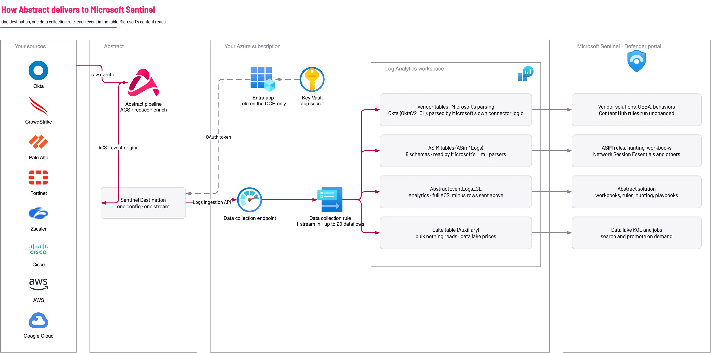</button><figcaption>Abstract sends one stream to one data collection rule, which writes each event into the table Microsoft&#x27;s content reads. Select the diagram to open it full size.</figcaption></figure><div class="tbl"><table><thead><tr><th>Where it lands</th><th>What reads it</th><th>Tab</th></tr></thead><tbody><tr><td>Microsoft's vendor tables: <code>OktaV2_CL</code>, <code>CrowdStrikeHostsV2_CL</code>, <code>AWSCloudTrail</code></td><td>The vendor's Content hub solution: parsers, rules and workbooks, unchanged</td><td>Okta, AWS CloudTrail, CrowdStrike</td></tr><tr><td><code>CommonSecurityLog</code> and <code>Syslog</code></td><td>The firewall, CEF and Syslog solutions, and Microsoft's ASIM parsers</td><td>Firewalls and CEF, Syslog</td></tr><tr><td>Microsoft's ASIM tables (<code>ASim*Logs</code>), all eleven</td><td>Every ASIM rule, hunting query and workbook, through Microsoft's <code>_Im_</code> parsers</td><td>ASIM tables, Abstract findings</td></tr><tr><td><code>AbstractEventLogs_CL</code></td><td>The Abstract solution: workbooks, rules, hunting and playbooks. Every Abstract field is kept</td><td>Foundation, Abstract solution</td></tr><tr><td>A lake table on the Auxiliary plan</td><td>Search and KQL jobs, at data lake prices</td><td>Data lake</td></tr></tbody></table></div></section><section class="part" id="start-lands"><p class="kicker">Routing</p><h3>Where each event lands</h3><p class=lead>Each event is stored once, in the first table on this list that takes it. The order is fixed; you choose which routes are on. Rows 1 to 9 are the <b>Vendor tables</b> values in the form, and the deployment parameter <code>nativeVendors</code>. This holds with <b>Store each vendor event once</b> and <b>One copy</b> on, as Foundation recommends.</p><div class="tbl"><table><thead><tr><th>Order</th><th>Route</th><th>Table</th><th>Takes</th></tr></thead><tbody><tr><td>1</td><td><code>asim-alert</code></td><td><code>ASimAlertEventLogs</code></td><td>Abstract findings</td></tr><tr><td>2</td><td><code>okta</code></td><td><code>OktaV2_CL</code></td><td>Okta System Log records</td></tr><tr><td>3</td><td><code>crowdstrike-hosts</code></td><td><code>CrowdStrikeHostsV2_CL</code></td><td>CrowdStrike Falcon host records</td></tr><tr><td>4</td><td><code>aws-cloudtrail</code></td><td><code>AWSCloudTrail</code></td><td>AWS CloudTrail records</td></tr><tr><td>5</td><td><code>csl-cef</code></td><td><code>CommonSecurityLog</code></td><td>Any source that sends CEF</td></tr><tr><td>6</td><td><code>csl-acs</code></td><td><code>CommonSecurityLog</code></td><td>Cisco ASA, Fortinet FortiGate and F5 ASM</td></tr><tr><td>7</td><td><code>syslog</code></td><td><code>Syslog</code></td><td>Linux, Nutanix and Infoblox lines</td></tr><tr><td>8</td><td><code>asim-dhcp</code></td><td><code>ASimDhcpEventLogs</code></td><td>DHCP events no earlier route took</td></tr><tr><td>9</td><td><code>asim-user-management</code></td><td><code>ASimUserManagementActivityLogs</code></td><td>User and group changes no earlier route took</td></tr><tr><td>10</td><td>ASIM schemas (ASIM tab)</td><td>The eight <code>ASim*Logs</code> event tables</td><td>Events of those schemas no vendor route took</td></tr><tr><td>11</td><td>Lake (Data lake tab)</td><td>Your lake table, for example <code>AbstractLake_CL</code></td><td>Events in the lake categories no ASIM or vendor route took</td></tr><tr><td>12</td><td>Always on</td><td><code>AbstractEventLogs_CL</code></td><td>Everything else. With <b>One copy</b> on, nothing a route above took</td></tr></tbody></table></div><p>For example, Infoblox DHCP lines stay in <code>Syslog</code> when Syslog is on, and Okta user changes stay in <code>OktaV2_CL</code>.</p></section><section class="part" id="start-need"><p class="kicker">Before you start</p><h3>Who and what you need</h3><div class="tbl"><table><thead><tr><th>Who</th><th>Needs</th><th>Used in</th></tr></thead><tbody><tr><td>Azure administrator</td><td>Owner, or Contributor plus User Access Administrator, on the workspace's resource group; rights to register an application to create the Abstract app in the form</td><td>Foundation, every deployment step</td></tr><tr><td>Entra ID administrator</td><td>Rights to register an application, if the Azure administrator does not have them</td><td>Foundation, Register the app first</td></tr><tr><td>Sentinel administrator</td><td>Microsoft Sentinel Contributor on the workspace</td><td>Content hub, rules and workbooks</td></tr><tr><td>Abstract implementation engineer</td><td>Abstract tenant administrator</td><td>Abstract steps</td></tr></tbody></table></div></section><section class="part" id="start-files"><p class="kicker">Files</p><h3>Files used in this guide</h3><p class=lead>The Deploy to Azure buttons open these templates for you. Save them for the Load file path, or to keep a copy.</p><p class="dlrow"><a class="dl" href="files/abstract-sentinel-solution.json" download="abstract-sentinel-solution.json">Save abstract-sentinel-solution.json</a> <span class="dlwhat">Abstract solution template (azuredeploy.json): data routes and Sentinel content in one deployment · 709 KB</span></p><p class="dlrow"><a class="dl" href="files/abstract-sentinel-solution.createUiDefinition.json" download="abstract-sentinel-solution.createUiDefinition.json">Save abstract-sentinel-solution.createUiDefinition.json</a> <span class="dlwhat">The guided form that Deploy to Azure opens (createUiDefinition.json) · 96 KB</span></p><p class="dlrow"><a class="dl" href="files/abstract-sentinel-discovery.json" download="abstract-sentinel-discovery.json">Save abstract-sentinel-discovery.json</a> <span class="dlwhat">Sentinel discovery template (azuredeploy.json): read-only inventory and report · 161 KB</span></p><p class="dlrow"><a class="dl" href="files/all_fields.json" download="all_fields.json">Save all_fields.json</a> <span class="dlwhat">Sample record that defines the Abstract table&#x27;s columns · 3 KB</span></p><p class="dlrow"><a class="dl" href="files/all_fields.transform.txt" download="all_fields.transform.txt">Save all_fields.transform.txt</a> <span class="dlwhat">Transformation for the Abstract table · 126 bytes</span></p></section></div></div></section><section class="view" id="view-foundation" data-view="foundation" hidden>
<header class="hero"><div class="wrap"><p class="eyebrow">Abstract Security · setup guide</p><h2>Foundation</h2><p class="lede">The Abstract app, the one-deploy solution and the destination that every route uses.</p>
<p class="progress" data-progress="foundation"></p></div></header>
<div class="wrap layout"><nav class="toc" aria-label="On this page"><p>On this page</p><ol><li><a href="#f-steps">Set up once per workspace</a></li><li><a href="#f-register">Register the app first</a></li><li><a href="#f-file">Load the file instead</a></li><li><a href="#f-hand">Without a template</a></li></ol></nav><div class="main"><section class="part" id="f-steps"><p class="kicker">Foundation</p><h3>Set up once per workspace</h3><p class=lead>One deployment through a guided form, then the destination in Abstract. Under an hour across three people.</p><ol class="steps"><li class="step" id="foundation-s1"><div class="stephead"><span class="num">1</span><div class="sh"><h4>Open the Abstract solution in the Azure portal</h4><p class="who">Your Azure administrator</p></div><label class="mark"><input type="checkbox" data-step="foundation-s1"> Done</label></div><p class="where" aria-label="Where"><span>Deploy to Azure</span><span class="sep" aria-hidden="true">›</span><span>Azure portal sign-in</span></p><div class="sbody"><p>Select the button and sign in to the Azure portal. When the portal asks <i>Do you trust the authors code?</i>, select <b>Yes, I trust the authors</b>. The form reads your Azure resources to fill its lists. If you select No, the portal shows a plain parameter form with no lists or checks.</p><p class="deployrow"><a class="deploy" href="https://portal.azure.com/#create/Microsoft.Template/uri/https%3A%2F%2Fraw.githubusercontent.com%2FIamABS3C%2Fabstract-cloud-templates%2Fmain%2Ftemplates%2Fazure%2Fazure-destination-sentinel-solution%2Fazuredeploy.json/createUIDefinitionUri/https%3A%2F%2Fraw.githubusercontent.com%2FIamABS3C%2Fabstract-cloud-templates%2Fmain%2Ftemplates%2Fazure%2Fazure-destination-sentinel-solution%2FcreateUiDefinition.json" target="_blank" rel="noopener">Deploy to Azure</a> <span class="dlwhat">Opens the Azure portal in a new tab.</span></p><div class="tbl"><table class="kv"><thead><tr><th>Field</th><th>Value</th></tr></thead><tbody><tr><th scope=row>Trust prompt</th><td><b>Yes, I trust the authors</b></td></tr></tbody></table></div><div class="figs"><figure class="shot"><button class="zoom" type="button" data-src="shots/form-trust.webp" aria-label="Enlarge: Deploy to Azure: the trust prompt. Select Yes, I trust the authors.">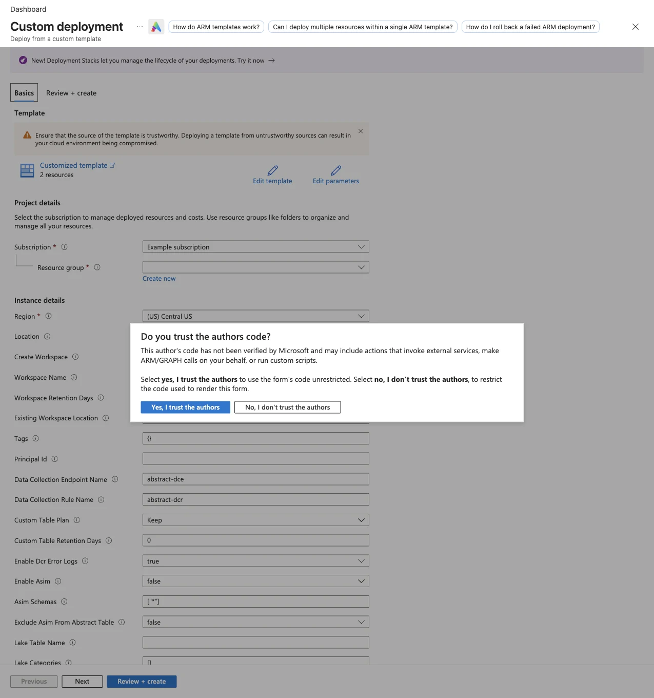</button><figcaption>Deploy to Azure: the trust prompt. Select Yes, I trust the authors.<span class="credit">Example Azure tenant</span></figcaption></figure><figure class="shot"><button class="zoom" type="button" data-src="shots/form-brand.webp" aria-label="Enlarge: Basics: the Abstract Security for Microsoft Sentinel form, after Yes.">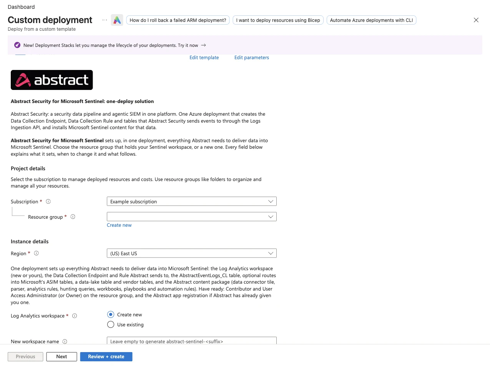</button><figcaption>Basics: the Abstract Security for Microsoft Sentinel form, after Yes.<span class="credit">Example Azure tenant</span></figcaption></figure><figure class="shot"><button class="zoom" type="button" data-src="shots/form-support.webp" aria-label="Enlarge: The foot of Basics: where to reach Abstract support.">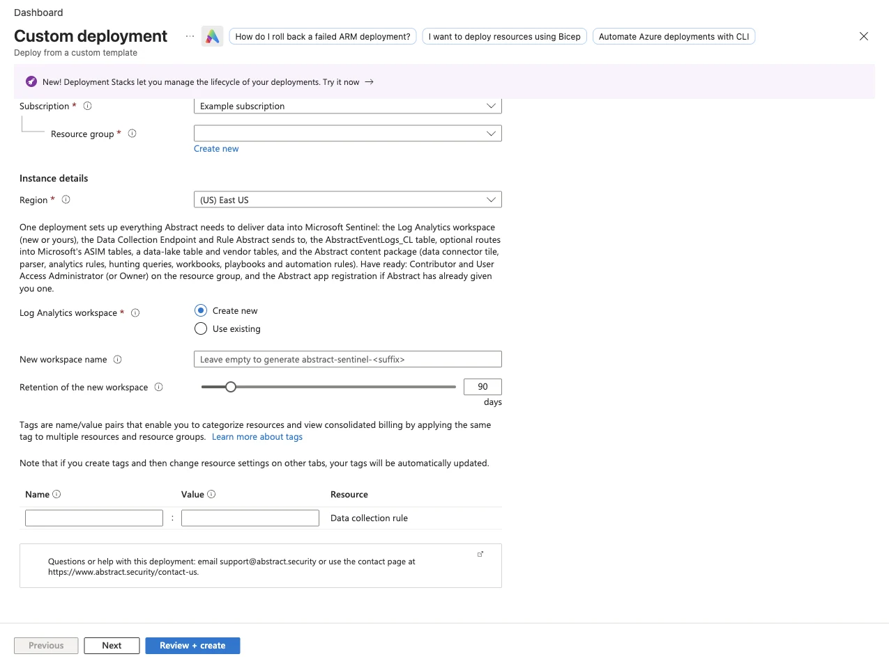</button><figcaption>The foot of Basics: where to reach Abstract support.<span class="credit">Example Azure tenant</span></figcaption></figure></div><p class="done"><span class="tick" aria-hidden="true"></span><b>Done when</b> The form opens on <b>Basics</b> with the Abstract logo and the tabs Basics, Abstract app, Data collection, ASIM, Data lake, Vendor tables, Content, Playbooks and Review + create.</p></div></li><li class="step" id="foundation-s2"><div class="stephead"><span class="num">2</span><div class="sh"><h4>Basics: choose the workspace</h4><p class="who">Your Azure administrator</p></div><label class="mark"><input type="checkbox" data-step="foundation-s2"> Done</label></div><p class="where" aria-label="Where"><span>Deploy to Azure</span><span class="sep" aria-hidden="true">›</span><span>Basics</span></p><div class="sbody"><p>Choose the resource group that holds your Sentinel workspace. The list under <b>Use existing</b> shows only workspaces that run Microsoft Sentinel, and the form reads the workspace's region for you.</p><div class="tbl"><table class="kv"><thead><tr><th>Field</th><th>Value</th></tr></thead><tbody><tr><th scope=row>Subscription</th><td>The subscription of your Sentinel workspace</td></tr><tr><th scope=row>Resource group</th><td>The resource group that holds the workspace</td></tr><tr><th scope=row>Log Analytics workspace</th><td><b>Use existing</b>, or <b>Create new</b> for a new Sentinel workspace</td></tr><tr><th scope=row>Existing Microsoft Sentinel workspace</th><td>Your workspace</td></tr><tr><th scope=row>Tags</th><td>Any tags your policy requires, for example <code>owner</code></td></tr></tbody></table></div><div class="figs"><figure class="shot"><button class="zoom" type="button" data-src="shots/form-basics-existing.webp" aria-label="Enlarge: Basics with an existing workspace. The form reads its region.">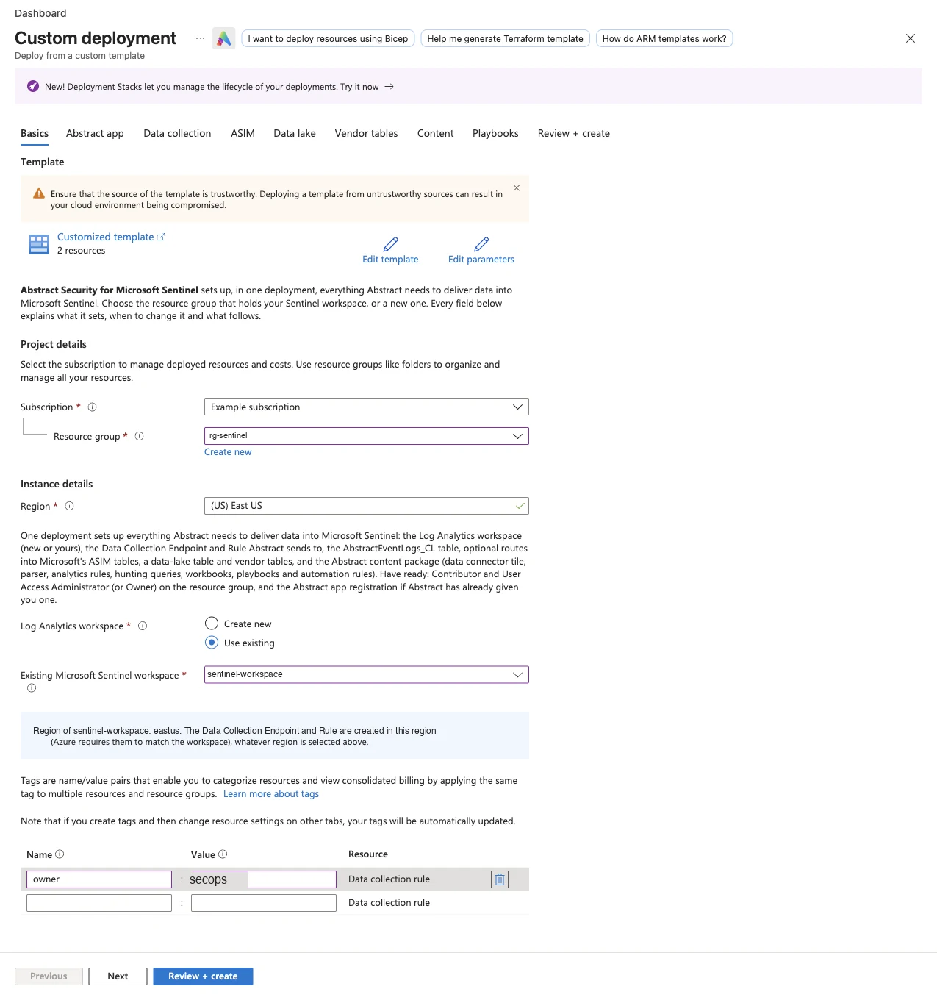</button><figcaption>Basics with an existing workspace. The form reads its region.<span class="credit">Example Azure tenant</span></figcaption></figure><figure class="shot"><button class="zoom" type="button" data-src="shots/form-basics-new.webp" aria-label="Enlarge: Basics with a new workspace.">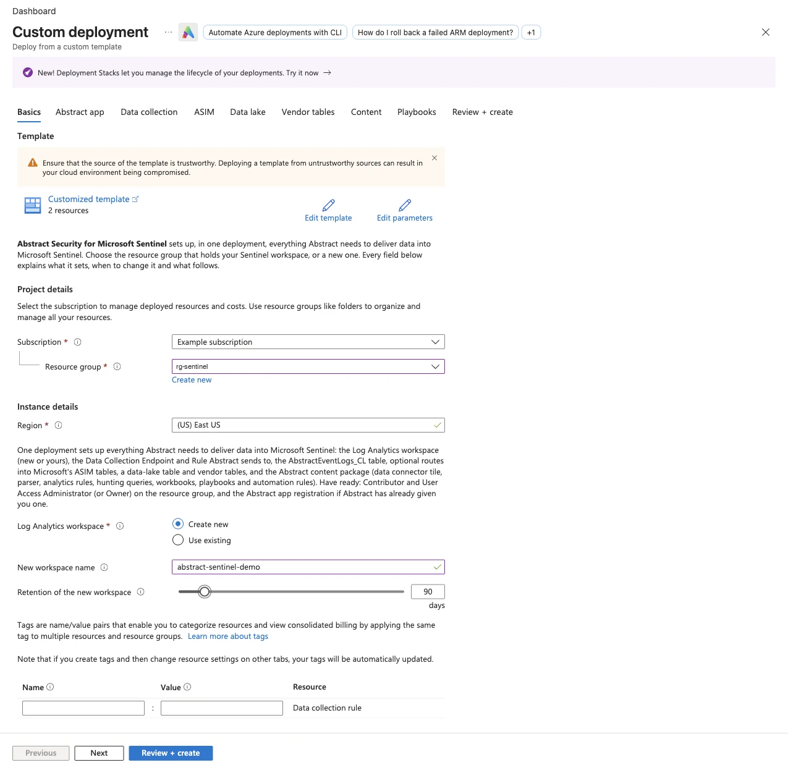</button><figcaption>Basics with a new workspace.<span class="credit">Example Azure tenant</span></figcaption></figure></div><p class="done"><span class="tick" aria-hidden="true"></span><b>Done when</b> The workspace is selected and the form shows its region.</p></div></li><li class="step" id="foundation-s3"><div class="stephead"><span class="num">3</span><div class="sh"><h4>Abstract app: register the app Abstract sends as</h4><p class="who">Your Azure administrator</p></div><label class="mark"><input type="checkbox" data-step="foundation-s3"> Done</label></div><p class="where" aria-label="Where"><span>Deploy to Azure</span><span class="sep" aria-hidden="true">›</span><span>Abstract app</span><span class="sep" aria-hidden="true">›</span><span>Pick or register</span><span class="sep" aria-hidden="true">›</span><span>Create new</span><span class="sep" aria-hidden="true">›</span><span>Change selection</span></p><div class="sbody"><p>To create the app here, select <b>Change selection</b>, enter a name, and set <i>Supported account types</i> to <b>Single tenant only</b>. The default option keeps <b>Register</b> disabled until you add allowed tenants. After <b>Register</b>, Azure opens the app's <i>Certificates &amp; secrets</i> page: select <b>New client secret</b>, copy the <b>Value</b> now, then close the page with <b>X</b> to return to the form. Enter that value in Abstract, not in the form's <i>Client secret</i> box, which this deployment does not use.</p><p>The deployment gives this app one role, Monitoring Metrics Publisher, on the data collection rule only.</p><div class="tbl"><table class="kv"><thead><tr><th>Field</th><th>Value</th></tr></thead><tbody><tr><th scope=row>How to identify the Abstract app</th><td><b>Pick or register</b></td></tr><tr><th scope=row>Service principal type</th><td><b>Create new</b></td></tr><tr><th scope=row>Name</th><td><code>abstract-sentinel-destination</code></td></tr><tr><th scope=row>Supported account types</th><td><b>Single tenant only</b></td></tr><tr><th scope=row>Then</th><td><b>Register</b>; <b>New client secret</b>; copy <b>Value</b>; close with <b>X</b></td></tr><tr><th scope=row>App already registered</th><td><b>Select existing</b> and pick it, or <b>Enter the Object ID</b> of its enterprise application</td></tr></tbody></table></div><div class="figs"><figure class="shot"><button class="zoom" type="button" data-src="shots/form-app-register.webp" aria-label="Enlarge: Abstract app › Create new › Register an application: a name, and Single tenant only.">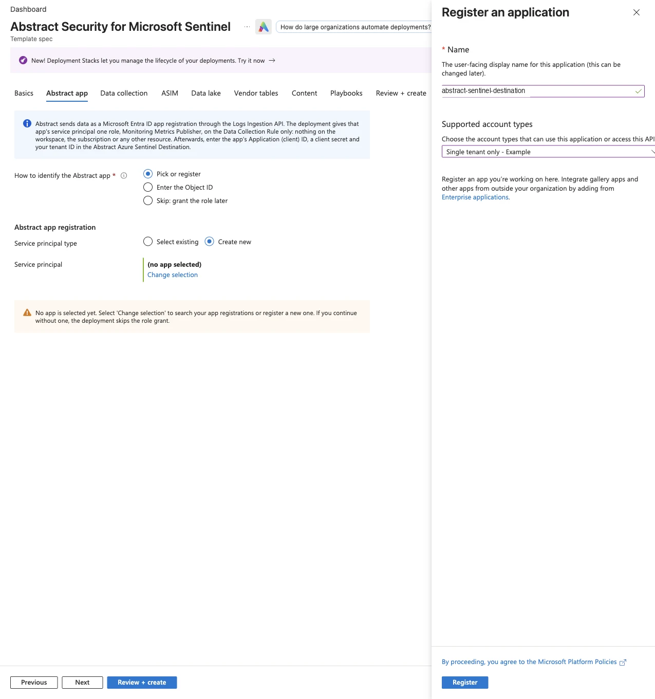</button><figcaption>Abstract app › Create new › Register an application: a name, and Single tenant only.<span class="credit">Example Azure tenant</span></figcaption></figure><figure class="shot"><button class="zoom" type="button" data-src="shots/form-app-secret.webp" aria-label="Enlarge: After Register, Azure opens the new app&#x27;s Certificates &amp; secrets. Create the secret here and copy its Value.">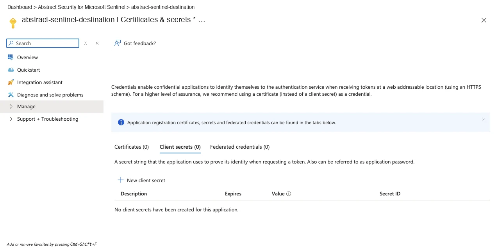</button><figcaption>After Register, Azure opens the new app&#x27;s Certificates &amp; secrets. Create the secret here and copy its Value.<span class="credit">Example Azure tenant</span></figcaption></figure><figure class="shot"><button class="zoom" type="button" data-src="shots/form-app-back.webp" aria-label="Enlarge: Back on the form: the new app is selected. Leave the form&#x27;s Client secret box empty.">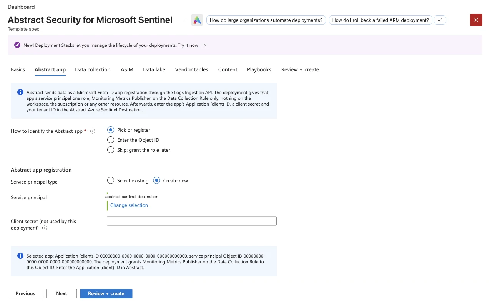</button><figcaption>Back on the form: the new app is selected. Leave the form&#x27;s Client secret box empty.<span class="credit">Example Azure tenant</span></figcaption></figure><figure class="shot"><button class="zoom" type="button" data-src="shots/form-app-picked.webp" aria-label="Enlarge: Abstract app: the app chosen, with its client ID and Object ID.">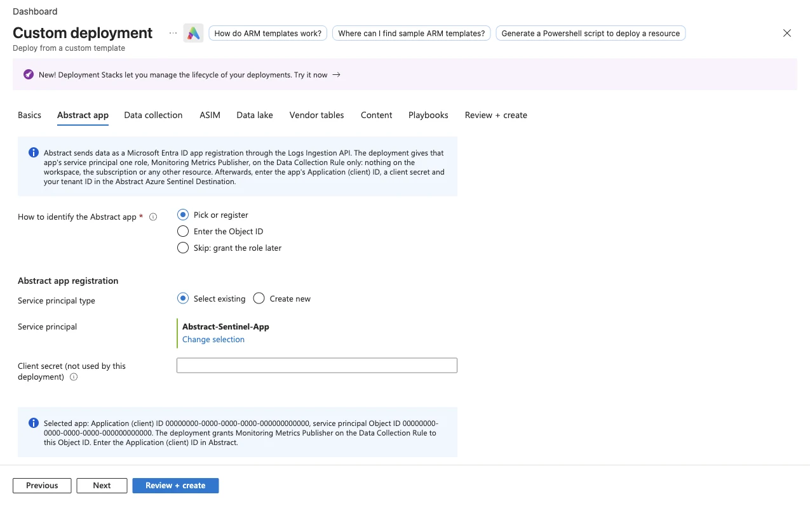</button><figcaption>Abstract app: the app chosen, with its client ID and Object ID.<span class="credit">Example Azure tenant</span></figcaption></figure></div><p class="done"><span class="tick" aria-hidden="true"></span><b>Done when</b> The tab shows the selected app with its Application (client) ID, and the secret Value is saved in your password manager or Key Vault.</p></div></li><li class="step" id="foundation-s4"><div class="stephead"><span class="num">4</span><div class="sh"><h4>Data collection: the endpoint and rule</h4><p class="who">Your Azure administrator</p></div><label class="mark"><input type="checkbox" data-step="foundation-s4"> Done</label></div><p class="where" aria-label="Where"><span>Deploy to Azure</span><span class="sep" aria-hidden="true">›</span><span>Data collection</span></p><div class="sbody"><p>Keep the default names on a first deployment. When you deploy again later, choose <b>Use existing</b> and the same endpoint and rule: the rule then keeps its ID and Abstract keeps sending.</p><div class="tbl"><table class="kv"><thead><tr><th>Field</th><th>Value</th></tr></thead><tbody><tr><th scope=row>Data Collection Endpoint</th><td><b>Create new</b>, <code>abstract-dce</code></td></tr><tr><th scope=row>Data Collection Rule</th><td><b>Create new</b>, <code>abstract-dcr</code></td></tr><tr><th scope=row>Plan of AbstractEventLogs_CL</th><td>Keep</td></tr><tr><th scope=row>Record ingestion errors in DCRLogErrors</th><td>On</td></tr></tbody></table></div><figure class="shot"><button class="zoom" type="button" data-src="shots/form-collect-new.webp" aria-label="Enlarge: Data collection with a new endpoint and rule: the default names.">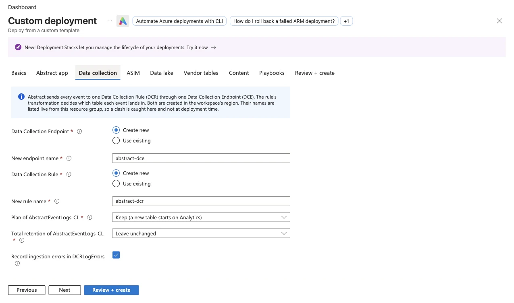</button><figcaption>Data collection with a new endpoint and rule: the default names.<span class="credit">Example Azure tenant</span></figcaption></figure><p class="done"><span class="tick" aria-hidden="true"></span><b>Done when</b> The tab shows no message under either name.</p></div></li><li class="step" id="foundation-s5"><div class="stephead"><span class="num">5</span><div class="sh"><h4>ASIM: write Microsoft's ASIM tables</h4><p class="who">Your Azure administrator</p></div><label class="mark"><input type="checkbox" data-step="foundation-s5"> Done</label></div><p class="where" aria-label="Where"><span>Deploy to Azure</span><span class="sep" aria-hidden="true">›</span><span>ASIM</span></p><div class="sbody"><p>Recommended. Microsoft's ASIM rules, hunting queries and workbooks then read Abstract data. <b>One copy</b> stores each mapped event once, in its ASIM table. See the <a href="#asim">ASIM tables</a> tab.</p><div class="tbl"><table class="kv"><thead><tr><th>Field</th><th>Value</th></tr></thead><tbody><tr><th scope=row>Write mapped events into Microsoft's ASIM tables</th><td>On</td></tr><tr><th scope=row>ASIM schemas</th><td>All eight</td></tr><tr><th scope=row>One copy: keep ASIM-mapped events out of AbstractEventLogs_CL</th><td>On</td></tr></tbody></table></div><div class="figs"><figure class="shot"><button class="zoom" type="button" data-src="shots/form-asim.webp" aria-label="Enlarge: ASIM: the schemas, each with what it holds.">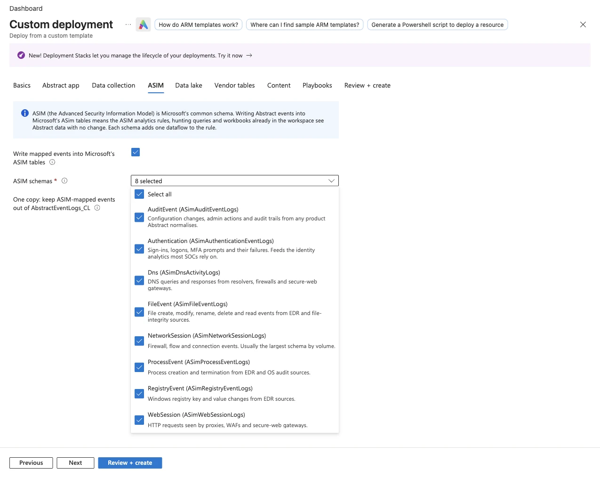</button><figcaption>ASIM: the schemas, each with what it holds.<span class="credit">Example Azure tenant</span></figcaption></figure><figure class="shot"><button class="zoom" type="button" data-src="shots/form-asim-one.webp" aria-label="Enlarge: ASIM with two schemas chosen and One copy on.">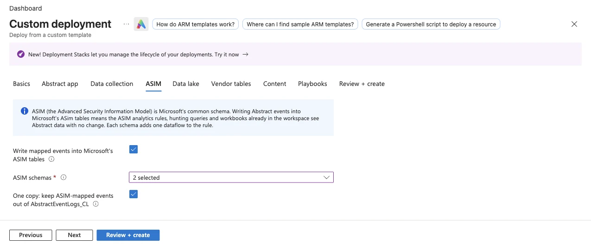</button><figcaption>ASIM with two schemas chosen and One copy on.<span class="credit">Example Azure tenant</span></figcaption></figure></div><p class="done"><span class="tick" aria-hidden="true"></span><b>Done when</b> All eight schemas are listed and One copy is ticked.</p></div></li><li class="step" id="foundation-s6"><div class="stephead"><span class="num">6</span><div class="sh"><h4>Data lake: optional</h4><p class="who">Your Azure administrator</p></div><label class="mark"><input type="checkbox" data-step="foundation-s6"> Done</label></div><p class="where" aria-label="Where"><span>Deploy to Azure</span><span class="sep" aria-hidden="true">›</span><span>Data lake</span></p><div class="sbody"><p>Leave it off for now, or see the <a href="#lake">Data lake</a> tab.</p><div class="tbl"><table class="kv"><thead><tr><th>Field</th><th>Value</th></tr></thead><tbody><tr><th scope=row>Send chosen categories to a data-lake table</th><td>Off, or as the Data lake tab sets it</td></tr></tbody></table></div><figure class="shot"><button class="zoom" type="button" data-src="shots/form-lake.webp" aria-label="Enlarge: Data lake: the lake table, its categories and retention.">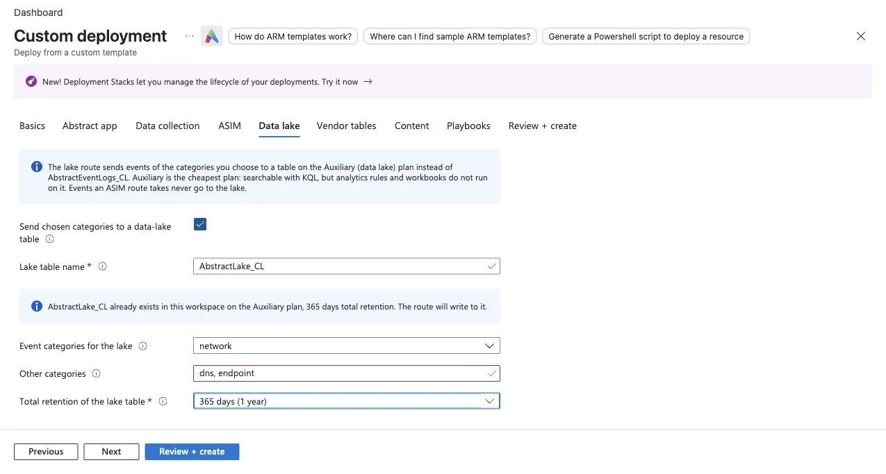</button><figcaption>Data lake: the lake table, its categories and retention.<span class="credit">Example Azure tenant</span></figcaption></figure><p class="done"><span class="tick" aria-hidden="true"></span><b>Done when</b> The tab reads as you chose.</p></div></li><li class="step" id="foundation-s7"><div class="stephead"><span class="num">7</span><div class="sh"><h4>Vendor tables: choose the routes</h4><p class="who">Your Azure administrator</p></div><label class="mark"><input type="checkbox" data-step="foundation-s7"> Done</label></div><p class="where" aria-label="Where"><span>Deploy to Azure</span><span class="sep" aria-hidden="true">›</span><span>Vendor tables</span></p><div class="sbody"><p>Select a value for each source you send through Abstract. The tab shows, for this workspace, whether each table exists and whether Microsoft's solution for it is installed, and counts the rule's dataflows against the 20 Azure allows. See the tab for each route: <a href="#okta">Okta</a>, <a href="#firewalls">Firewalls and CEF</a>, <a href="#syslog">Syslog</a>, <a href="#cloudtrail">AWS CloudTrail</a>, <a href="#crowdstrike">CrowdStrike</a>, <a href="#asim">ASIM tables</a>, <a href="#findings">Abstract findings</a>.</p><div class="tbl"><table class="kv"><thead><tr><th>Field</th><th>Value</th></tr></thead><tbody><tr><th scope=row>Vendor tables</th><td>The values from each route tab, for example <code>Okta: OktaV2_CL</code></td></tr><tr><th scope=row>Okta domain</th><td>With Okta: your Okta domain, for example <code>example.okta.com</code></td></tr><tr><th scope=row>Store each vendor event once</th><td>On (the default)</td></tr></tbody></table></div><figure class="shot"><button class="zoom" type="button" data-src="shots/form-vendors.webp" aria-label="Enlarge: Vendor tables: the status of each vendor&#x27;s table and Microsoft solution in this workspace, and the dataflow count.">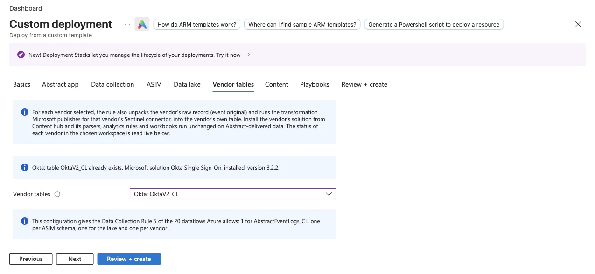</button><figcaption>Vendor tables: the status of each vendor&#x27;s table and Microsoft solution in this workspace, and the dataflow count.<span class="credit">Example Azure tenant</span></figcaption></figure><p class="done"><span class="tick" aria-hidden="true"></span><b>Done when</b> The dataflow count reads 20 or fewer.</p></div></li><li class="step" id="foundation-s8"><div class="stephead"><span class="num">8</span><div class="sh"><h4>Content: keep the Abstract content</h4><p class="who">Your Azure administrator</p></div><label class="mark"><input type="checkbox" data-step="foundation-s8"> Done</label></div><p class="where" aria-label="Where"><span>Deploy to Azure</span><span class="sep" aria-hidden="true">›</span><span>Content</span></p><div class="sbody"><p>Keep every install switch on, and choose here which rules run. Every later deployment, including the ones that add a route, sets each rule on or off from this tab, so this is the place to turn rules on. See the <a href="#content">Abstract solution</a> tab.</p><div class="tbl"><table class="kv"><thead><tr><th>Field</th><th>Value</th></tr></thead><tbody><tr><th scope=row>Every install switch</th><td>On</td></tr><tr><th scope=row>Turn these rules on</th><td><b>Abstract finding</b> once findings reach Sentinel (<a href="#findings">Abstract findings</a> tab); add the others you want</td></tr><tr><th scope=row>Turn the automation rules on</th><td>On when you want Abstract incidents tagged and prioritised</td></tr><tr><th scope=row>Sentinel Discovery run (optional)</th><td>See the <a href="#discovery">Discovery report</a> tab</td></tr></tbody></table></div><figure class="shot"><button class="zoom" type="button" data-src="shots/form-content.webp" aria-label="Enlarge: Content: one switch per item of the Abstract content, and the rules to turn on.">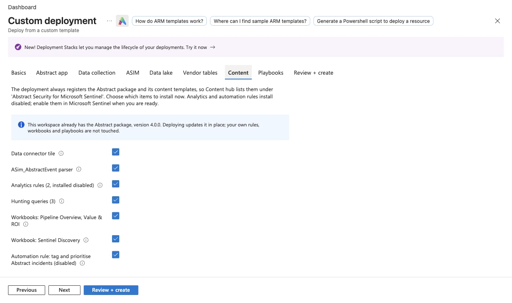</button><figcaption>Content: one switch per item of the Abstract content, and the rules to turn on.<span class="credit">Example Azure tenant</span></figcaption></figure><p class="done"><span class="tick" aria-hidden="true"></span><b>Done when</b> The install switches are ticked and the rules you want are listed under <b>Turn these rules on</b>.</p></div></li><li class="step" id="foundation-s9"><div class="stephead"><span class="num">9</span><div class="sh"><h4>Playbooks: optional</h4><p class="who">Your Azure administrator</p></div><label class="mark"><input type="checkbox" data-step="foundation-s9"> Done</label></div><p class="where" aria-label="Where"><span>Deploy to Azure</span><span class="sep" aria-hidden="true">›</span><span>Playbooks</span></p><div class="sbody"><p>The playbooks call the Abstract API with a key kept in your Key Vault. Leave <b>Automation rules that run Verdict and Tune at source</b> off on the first deployment; the <a href="#content">Abstract solution</a> tab turns them on.</p><div class="tbl"><table class="kv"><thead><tr><th>Field</th><th>Value</th></tr></thead><tbody><tr><th scope=row>Install the playbooks</th><td>On</td></tr><tr><th scope=row>Abstract environment</th><td>Abstract production</td></tr><tr><th scope=row>Abstract vendor account ID</th><td>Your Abstract tenant ID</td></tr><tr><th scope=row>Abstract API key in Key Vault</th><td><b>Pick a secret</b>, or <b>Set later</b></td></tr></tbody></table></div><figure class="shot"><button class="zoom" type="button" data-src="shots/form-playbooks.webp" aria-label="Enlarge: Playbooks: the Key Vault and the secret that holds your Abstract API key.">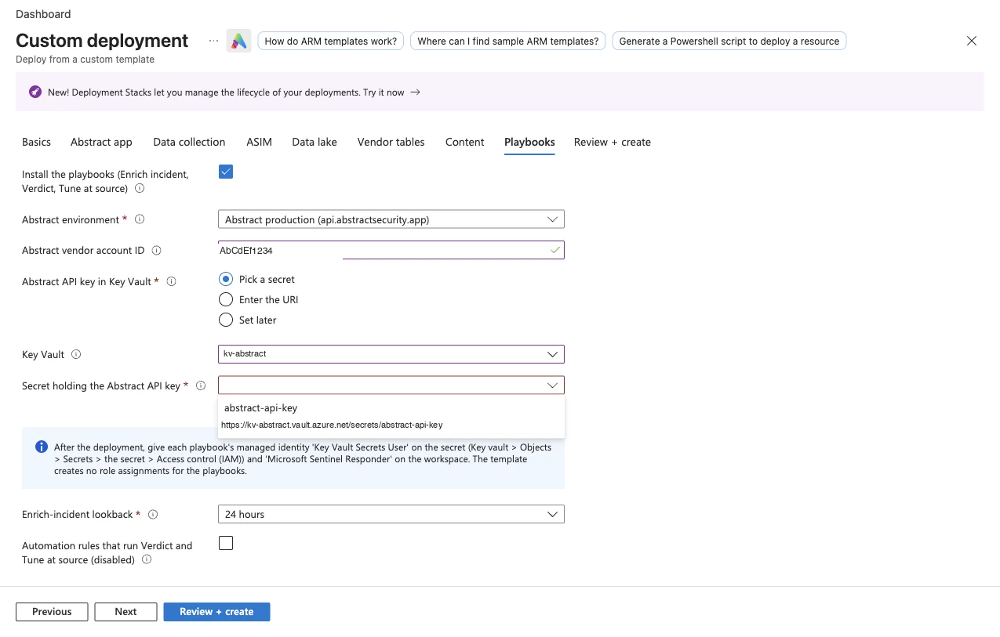</button><figcaption>Playbooks: the Key Vault and the secret that holds your Abstract API key.<span class="credit">Example Azure tenant</span></figcaption></figure><p class="done"><span class="tick" aria-hidden="true"></span><b>Done when</b> The tab shows your Key Vault and secret, or Set later.</p></div></li><li class="step" id="foundation-s10"><div class="stephead"><span class="num">10</span><div class="sh"><h4>Review and create</h4><p class="who">Your Azure administrator</p></div><label class="mark"><input type="checkbox" data-step="foundation-s10"> Done</label></div><p class="where" aria-label="Where"><span>Deploy to Azure</span><span class="sep" aria-hidden="true">›</span><span>Next on every tab</span><span class="sep" aria-hidden="true">›</span><span>Review + create</span><span class="sep" aria-hidden="true">›</span><span>Create</span></p><div class="sbody"><p>Use <b>Next</b> to go through every tab, even if you change nothing, then select <b>Review + create</b>. If you jump straight to Review + create, the page can stay greyed out with <b>Create</b> disabled. If that happens, close the form and start again.</p><div class="tbl"><table class="kv"><thead><tr><th>Field</th><th>Value</th></tr></thead><tbody><tr><th scope=row>Then</th><td><b>Create</b></td></tr></tbody></table></div><div class="figs"><figure class="shot"><button class="zoom" type="button" data-src="shots/form-review.webp" aria-label="Enlarge: Review + create, after every tab was visited with Next.">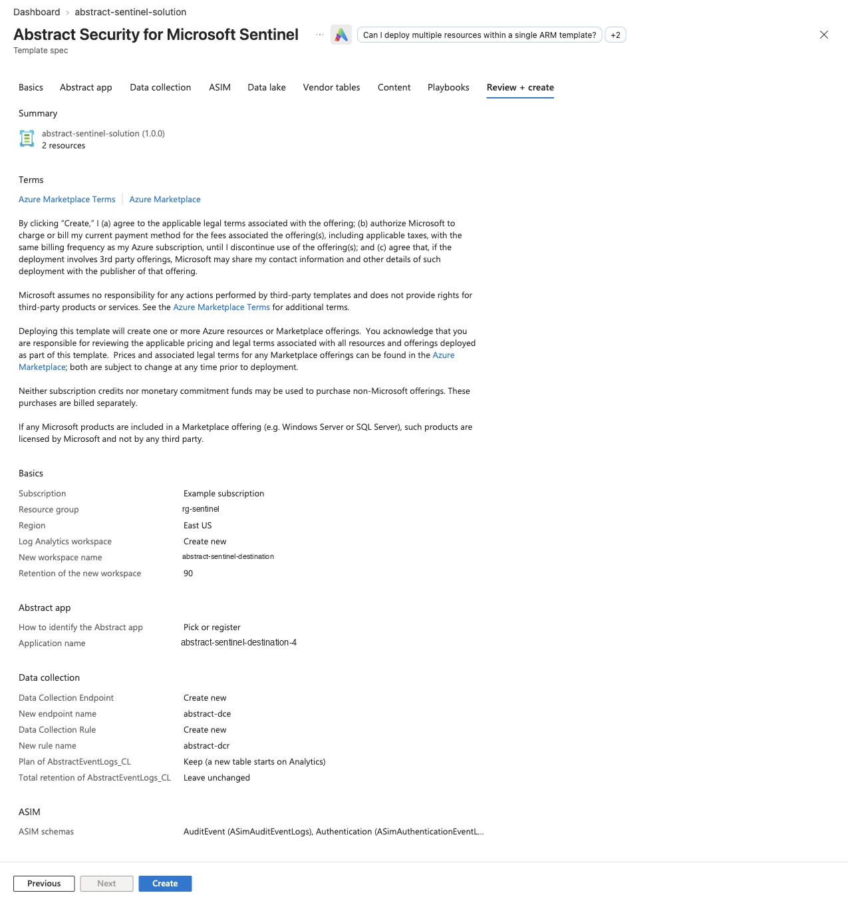</button><figcaption>Review + create, after every tab was visited with Next.<span class="credit">Example Azure tenant</span></figcaption></figure><figure class="shot"><button class="zoom" type="button" data-src="shots/form-progress.webp" aria-label="Enlarge: Create: the deployment in progress.">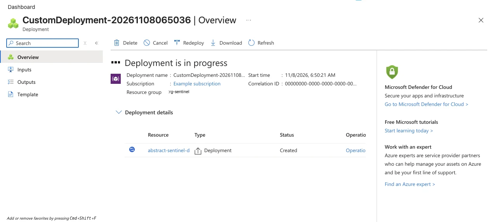</button><figcaption>Create: the deployment in progress.<span class="credit">Example Azure tenant</span></figcaption></figure><figure class="shot"><button class="zoom" type="button" data-src="shots/form-done.webp" aria-label="Enlarge: Your deployment is complete.">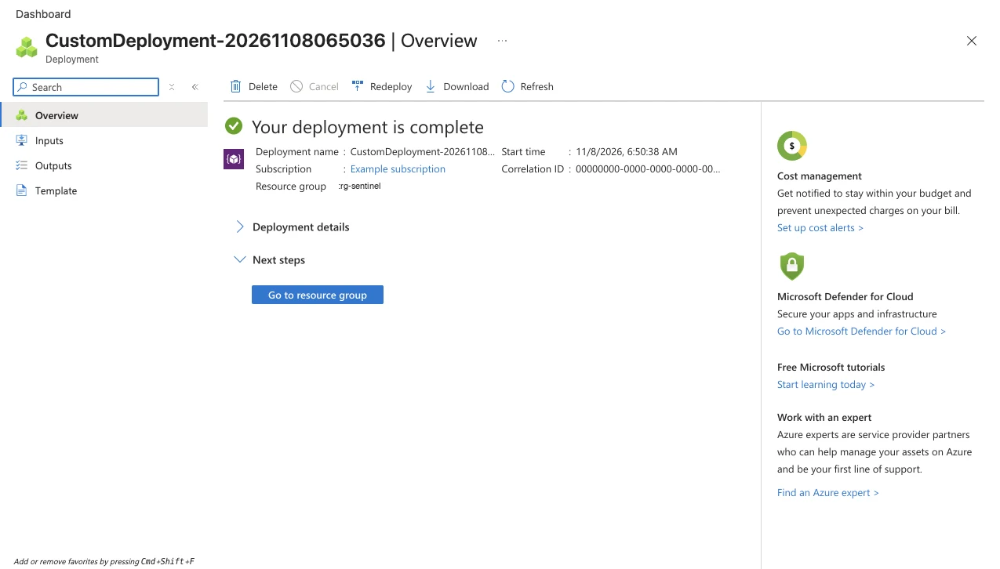</button><figcaption>Your deployment is complete.<span class="credit">Example Azure tenant</span></figcaption></figure></div><p class="done"><span class="tick" aria-hidden="true"></span><b>Done when</b> The deployment shows <b>Your deployment is complete</b>. On a new workspace with ASIM on, if it stops with <code>InvalidOutputTable</code>, select <b>Redeploy</b> with the same values.</p></div></li><li class="step" id="foundation-s11"><div class="stephead"><span class="num">11</span><div class="sh"><h4>Copy the three values Abstract needs</h4><p class="who">Your Azure administrator</p></div><label class="mark"><input type="checkbox" data-step="foundation-s11"> Done</label></div><p class="where" aria-label="Where"><span>the deployment</span><span class="sep" aria-hidden="true">›</span><span>Outputs</span></p><div class="sbody"><p>Abstract needs these three values with the app's client ID, tenant ID and secret value.</p><div class="tbl"><table class="kv"><thead><tr><th>Field</th><th>Value</th></tr></thead><tbody><tr><th scope=row>dataCollectionRuleImmutableId</th><td>Starts with <code>dcr-</code></td></tr><tr><th scope=row>dataCollectionEndpointUrl</th><td>Ends in <code>.ingest.monitor.azure.com</code></td></tr><tr><th scope=row>logStreamName</th><td><code>Custom-AbstractEventLogs_CL</code></td></tr></tbody></table></div><figure class="shot"><button class="zoom" type="button" data-src="shots/ms-deploy-outputs.webp" aria-label="Enlarge: The deployment&#x27;s Outputs: the three values Abstract needs.">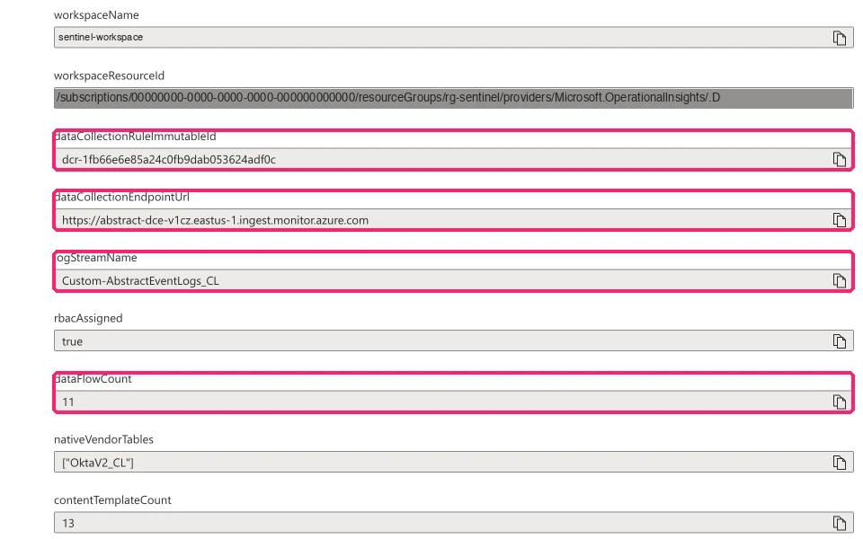</button><figcaption>The deployment&#x27;s Outputs: the three values Abstract needs.<span class="credit">Example Azure tenant</span></figcaption></figure><p class="done"><span class="tick" aria-hidden="true"></span><b>Done when</b> You have the three output values.</p></div></li><li class="step" id="foundation-s12"><div class="stephead"><span class="num">12</span><div class="sh"><h4>Copy the app's client ID and tenant ID</h4><p class="who">Your Entra ID administrator</p></div><label class="mark"><input type="checkbox" data-step="foundation-s12"> Done</label></div><p class="where" aria-label="Where"><span>Microsoft Entra admin center</span><span class="sep" aria-hidden="true">›</span><span>Identity</span><span class="sep" aria-hidden="true">›</span><span>Applications</span><span class="sep" aria-hidden="true">›</span><span>App registrations</span><span class="sep" aria-hidden="true">›</span><span>abstract-sentinel-destination</span><span class="sep" aria-hidden="true">›</span><span>Overview</span></p><div class="sbody"><p>The <b>Application (client) ID</b> also appears on the form's Abstract app tab.</p><div class="tbl"><table class="kv"><thead><tr><th>Field</th><th>Value</th></tr></thead><tbody><tr><th scope=row>Application (client) ID</th><td>Copy it</td></tr><tr><th scope=row>Directory (tenant) ID</th><td>Copy it</td></tr></tbody></table></div><figure class="shot"><button class="zoom" type="button" data-src="shots/ms-app-overview.webp" aria-label="Enlarge: The app&#x27;s Overview: Application (client) ID and Directory (tenant) ID.">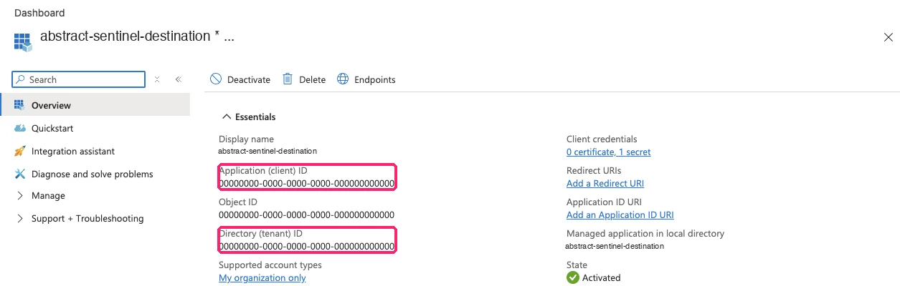</button><figcaption>The app&#x27;s Overview: Application (client) ID and Directory (tenant) ID.<span class="credit">Example Azure tenant</span></figcaption></figure><p class="done"><span class="tick" aria-hidden="true"></span><b>Done when</b> You have six values: client ID, secret value, tenant ID, rule ID, endpoint and stream name.</p></div></li><li class="step" id="foundation-s13"><div class="stephead"><span class="num">13</span><div class="sh"><h4>Create the Sentinel destination in Abstract</h4><p class="who">Abstract implementation engineer</p></div><label class="mark"><input type="checkbox" data-step="foundation-s13"> Done</label></div><p class="where" aria-label="Where"><span>Abstract</span><span class="sep" aria-hidden="true">›</span><span>Pipelines</span><span class="sep" aria-hidden="true">›</span><span>Integrations</span><span class="sep" aria-hidden="true">›</span><span>Available</span><span class="sep" aria-hidden="true">›</span><span>Azure Sentinel Destination</span></p><div class="sbody"><p>Validation sends one test record, which lands in <code>AbstractEventLogs_CL</code> with only <code>message</code> filled.</p><div class="tbl"><table class="kv"><thead><tr><th>Field</th><th>Value</th></tr></thead><tbody><tr><th scope=row>Integration Name</th><td><code>Microsoft Sentinel</code></td></tr><tr><th scope=row>Client ID</th><td>Application (client) ID</td></tr><tr><th scope=row>Client Secret Value</th><td>The secret value</td></tr><tr><th scope=row>Application Tenant ID</th><td>Directory (tenant) ID</td></tr><tr><th scope=row>Data Collection Rule ID</th><td><code>dataCollectionRuleImmutableId</code></td></tr><tr><th scope=row>Data Collection Endpoint</th><td><code>dataCollectionEndpointUrl</code></td></tr><tr><th scope=row>Log Stream Name</th><td><code>logStreamName</code></td></tr><tr><th scope=row>Then</th><td><b>Validate</b>, then <b>Finish</b></td></tr></tbody></table></div><p class="done"><span class="tick" aria-hidden="true"></span><b>Done when</b> Validation passes and the destination appears under Pipelines › Integrations › Enabled.</p></div></li><li class="step" id="foundation-s14"><div class="stephead"><span class="num">14</span><div class="sh"><h4>Route your first source</h4><p class="who">Abstract implementation engineer</p></div><label class="mark"><input type="checkbox" data-step="foundation-s14"> Done</label></div><p class="where" aria-label="Where"><span>Abstract</span><span class="sep" aria-hidden="true">›</span><span>Pipelines</span><span class="sep" aria-hidden="true">›</span><span>Overview</span></p><div class="sbody"><p>Drag from the source to <b>Microsoft Sentinel</b> and connect. Start with one low-volume source, check it on the <a href="#verify">Verify</a> tab, then add the rest one at a time.</p><p class="done"><span class="tick" aria-hidden="true"></span><b>Done when</b> The route appears between the source and the destination, and rows appear in Sentinel within 20 minutes.</p></div></li></ol></section><section class="part" id="f-register"><p class="kicker">Alternative</p><h3>Register the app in Entra first</h3><p class=lead>When the person deploying cannot register applications, your Entra ID administrator registers it first.</p><ol class="steps"><li class="step" id="register-s1"><div class="stephead"><span class="num">1</span><div class="sh"><h4>Register the Abstract application</h4><p class="who">Your Entra ID administrator</p></div><label class="mark"><input type="checkbox" data-step="register-s1"> Done</label></div><p class="where" aria-label="Where"><span>Microsoft Entra admin center</span><span class="sep" aria-hidden="true">›</span><span>Identity</span><span class="sep" aria-hidden="true">›</span><span>Applications</span><span class="sep" aria-hidden="true">›</span><span>App registrations</span><span class="sep" aria-hidden="true">›</span><span>New registration</span></p><div class="sbody"><p>Abstract signs in as this application to send data. It needs no API permissions.</p><div class="tbl"><table class="kv"><thead><tr><th>Field</th><th>Value</th></tr></thead><tbody><tr><th scope=row>Name</th><td><code>abstract-sentinel-destination</code></td></tr><tr><th scope=row>Supported account types</th><td>Single tenant only (accounts in this organizational directory)</td></tr><tr><th scope=row>Redirect URI</th><td>Leave empty</td></tr><tr><th scope=row>Then</th><td><b>Register</b></td></tr></tbody></table></div><div class="figs"><figure class="shot"><button class="zoom" type="button" data-src="shots/ms-new-registration.webp" aria-label="Enlarge: App registrations › New registration: name and single-tenant account type.">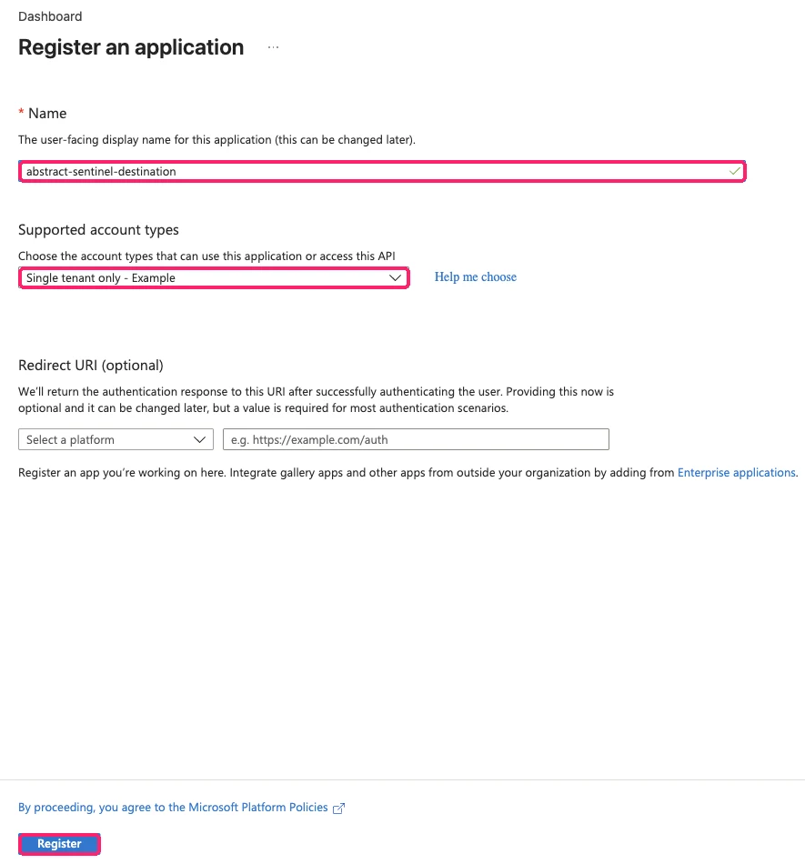</button><figcaption>App registrations › New registration: name and single-tenant account type.<span class="credit">Example Azure tenant</span></figcaption></figure><figure class="shot"><button class="zoom" type="button" data-src="shots/ms-app-overview.webp" aria-label="Enlarge: The app&#x27;s Overview: Application (client) ID and Directory (tenant) ID."></button><figcaption>The app&#x27;s Overview: Application (client) ID and Directory (tenant) ID.<span class="credit">Example Azure tenant</span></figcaption></figure></div><p class="done"><span class="tick" aria-hidden="true"></span><b>Done when</b> The app's Overview shows the <b>Application (client) ID</b> and <b>Directory (tenant) ID</b>. Copy both.</p></div></li><li class="step" id="register-s2"><div class="stephead"><span class="num">2</span><div class="sh"><h4>Create a client secret</h4><p class="who">Your Entra ID administrator</p></div><label class="mark"><input type="checkbox" data-step="register-s2"> Done</label></div><p class="where" aria-label="Where"><span>the app</span><span class="sep" aria-hidden="true">›</span><span>Certificates &amp; secrets</span><span class="sep" aria-hidden="true">›</span><span>Client secrets</span><span class="sep" aria-hidden="true">›</span><span>New client secret</span></p><div class="sbody"><p>Copy the secret's <b>Value</b> as soon as it appears: the portal shows it only once. The <b>Secret ID</b> is not the value.</p><div class="tbl"><table class="kv"><thead><tr><th>Field</th><th>Value</th></tr></thead><tbody><tr><th scope=row>Description</th><td><code>abstract-sentinel</code></td></tr><tr><th scope=row>Expires</th><td>12 months, or your policy's maximum</td></tr><tr><th scope=row>Then</th><td><b>Add</b>, then copy <b>Value</b></td></tr></tbody></table></div><figure class="shot"><button class="zoom" type="button" data-src="shots/ms-new-secret.webp" aria-label="Enlarge: Certificates &amp; secrets › New client secret. Copy the Value when it appears.">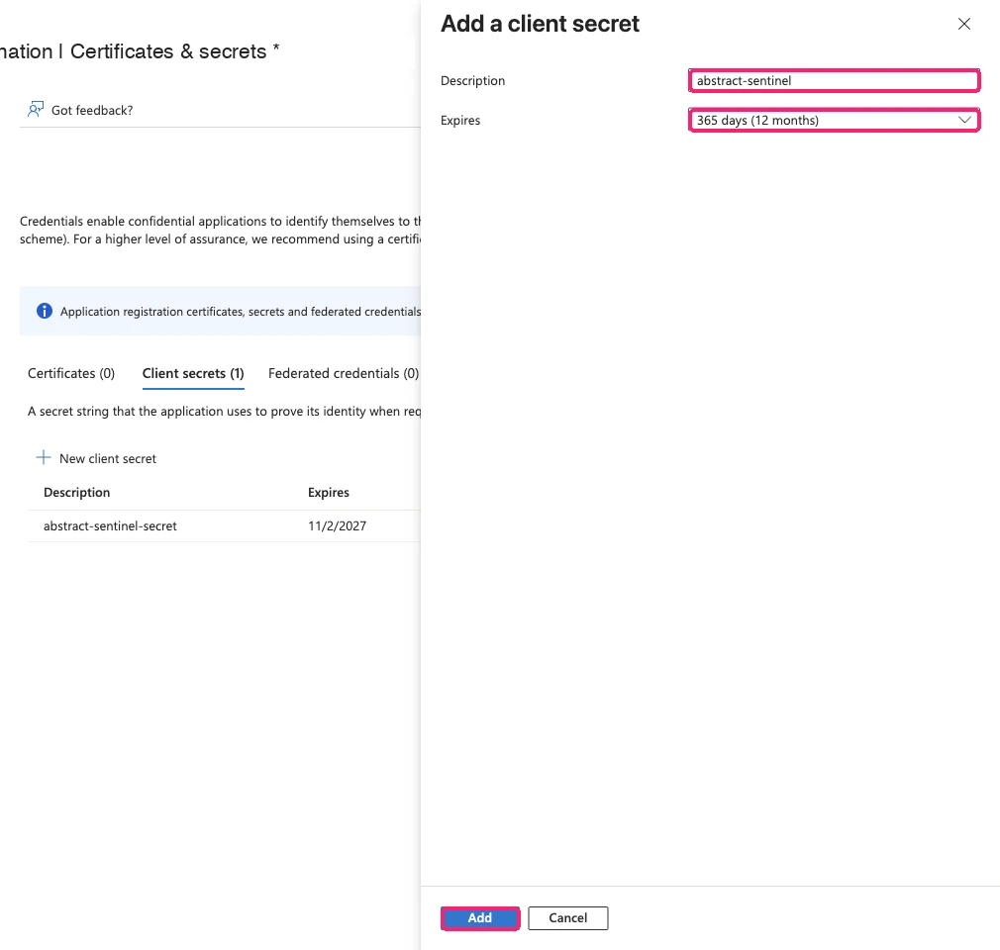</button><figcaption>Certificates &amp; secrets › New client secret. Copy the Value when it appears.<span class="credit">Example Azure tenant</span></figcaption></figure><p class="done"><span class="tick" aria-hidden="true"></span><b>Done when</b> The secret value is stored in your password manager or Key Vault, with a renewal date in your calendar.</p></div></li><li class="step" id="register-s3"><div class="stephead"><span class="num">3</span><div class="sh"><h4>Pick the app in the form</h4><p class="who">Your Azure administrator</p></div><label class="mark"><input type="checkbox" data-step="register-s3"> Done</label></div><p class="where" aria-label="Where"><span>Deploy to Azure</span><span class="sep" aria-hidden="true">›</span><span>Abstract app</span></p><div class="sbody"><p>In Foundation step 3 choose <b>Select existing</b> and pick the app, or choose <b>Enter the Object ID</b> and paste the <b>Object ID</b> from Enterprise applications › the app. That Object ID is different from the Application (client) ID.</p><div class="tbl"><table class="kv"><thead><tr><th>Field</th><th>Value</th></tr></thead><tbody><tr><th scope=row>Service principal type</th><td><b>Select existing</b></td></tr><tr><th scope=row>Or</th><td><b>Enter the Object ID</b></td></tr></tbody></table></div><div class="figs"><figure class="shot"><button class="zoom" type="button" data-src="shots/form-app-manual.webp" aria-label="Enlarge: Abstract app › Enter the Object ID.">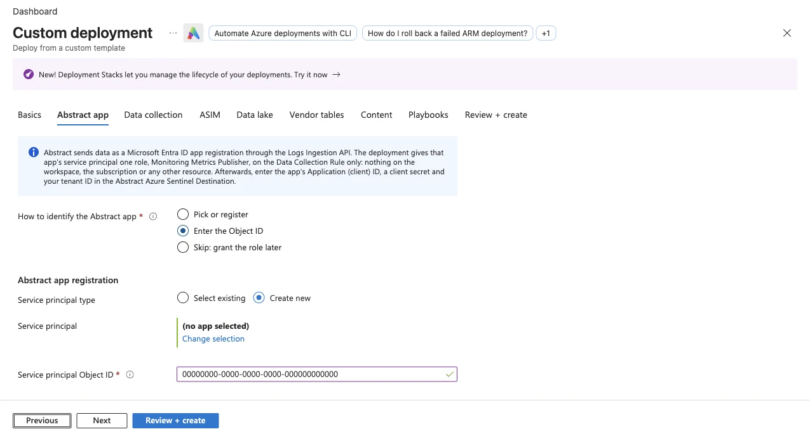</button><figcaption>Abstract app › Enter the Object ID.<span class="credit">Example Azure tenant</span></figcaption></figure><figure class="shot"><button class="zoom" type="button" data-src="shots/ms-enterprise-app.webp" aria-label="Enlarge: Enterprise applications › the Abstract application: its Object ID.">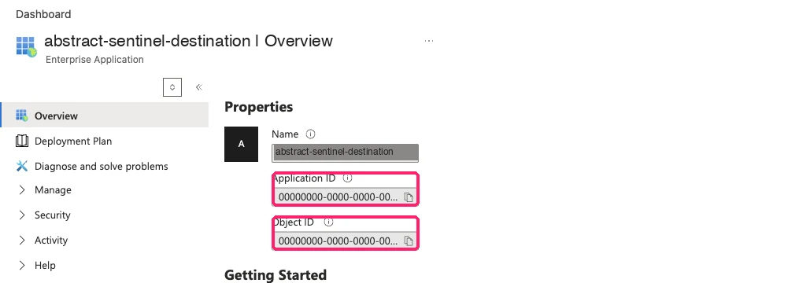</button><figcaption>Enterprise applications › the Abstract application: its Object ID.<span class="credit">Example Azure tenant</span></figcaption></figure></div><p class="done"><span class="tick" aria-hidden="true"></span><b>Done when</b> The tab shows the app with its Object ID.</p></div></li></ol></section><section class="part" id="f-file"><p class="kicker">Alternative</p><h3>Load the file instead of the button</h3><p class=lead>The same template, deployed from a saved copy. <p class="dlrow"><a class="dl" href="files/abstract-sentinel-solution.createUiDefinition.json" download="abstract-sentinel-solution.createUiDefinition.json">Save abstract-sentinel-solution.createUiDefinition.json</a> <span class="dlwhat">The guided form that Deploy to Azure opens (createUiDefinition.json) · 96 KB</span></p><p>The guided form's definition is the second file. You can preview it in the portal's <b>Create UI Definition sandbox</b>.</p></p><ol class="steps"><li class="step" id="loadfile-s1"><div class="stephead"><span class="num">1</span><div class="sh"><h4>Load the solution file into the portal</h4><p class="who">Your Azure administrator</p></div><label class="mark"><input type="checkbox" data-step="loadfile-s1"> Done</label></div><p class="where" aria-label="Where"><span>Azure portal</span><span class="sep" aria-hidden="true">›</span><span>Deploy a custom template</span><span class="sep" aria-hidden="true">›</span><span>Build your own template in the editor</span><span class="sep" aria-hidden="true">›</span><span>Load file</span><span class="sep" aria-hidden="true">›</span><span>Save</span></p><div class="sbody"><p>Use this when the Deploy to Azure button cannot be used. The portal then shows the template's plain parameter form.</p><p class="dlrow"><a class="dl" href="files/abstract-sentinel-solution.json" download="abstract-sentinel-solution.json">Save abstract-sentinel-solution.json</a> <span class="dlwhat">Abstract solution template (azuredeploy.json): data routes and Sentinel content in one deployment · 709 KB</span></p><div class="tbl"><table class="kv"><thead><tr><th>Field</th><th>Value</th></tr></thead><tbody><tr><th scope=row>File</th><td><code>abstract-sentinel-solution.json</code></td></tr></tbody></table></div><figure class="shot"><button class="zoom" type="button" data-src="shots/ms-deploy-editor.webp" aria-label="Enlarge: Deploy a custom template › Build your own template in the editor, with the file loaded.">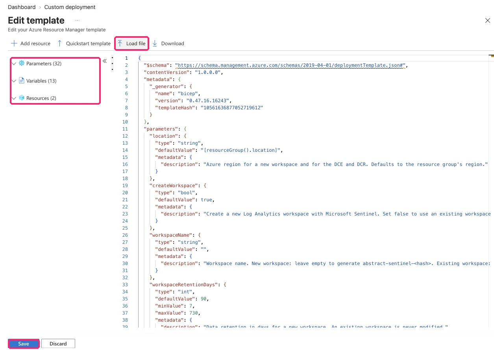</button><figcaption>Deploy a custom template › Build your own template in the editor, with the file loaded.<span class="credit">Example Azure tenant</span></figcaption></figure><p class="done"><span class="tick" aria-hidden="true"></span><b>Done when</b> The editor shows the template and <b>Save</b> opens the parameter form.</p></div></li><li class="step" id="loadfile-s2"><div class="stephead"><span class="num">2</span><div class="sh"><h4>Fill in the parameters</h4><p class="who">Your Azure administrator</p></div><label class="mark"><input type="checkbox" data-step="loadfile-s2"> Done</label></div><p class="where" aria-label="Where"><span>Custom deployment</span><span class="sep" aria-hidden="true">›</span><span>Basics</span></p><div class="sbody"><p>The names below are the ones the form fills for you. Arrays are typed as JSON.</p><div class="tbl"><table class="kv"><thead><tr><th>Parameter</th><th>Value</th></tr></thead><tbody><tr><th scope=row>Resource group</th><td>The resource group that holds your Sentinel workspace</td></tr><tr><th scope=row>Create Workspace</th><td><code>false</code></td></tr><tr><th scope=row>Workspace Name</th><td>Your Sentinel workspace name</td></tr><tr><th scope=row>Principal Id</th><td>The Object ID of the Abstract app's enterprise application</td></tr><tr><th scope=row>Enable Asim, Asim Schemas, Exclude Asim From Abstract Table</th><td><code>true</code>, <code>["*"]</code>, <code>true</code></td></tr><tr><th scope=row>Native Vendors</th><td>The route values as a JSON array, for example <code>["okta","csl-cef"]</code></td></tr><tr><th scope=row>Okta Domain</th><td>With okta: your Okta domain</td></tr><tr><th scope=row>Exclude Native Vendors From Asim</th><td><code>true</code></td></tr><tr><th scope=row>Lake Table Name, Lake Categories</th><td>See the Data lake tab, or leave empty</td></tr><tr><th scope=row>Everything else</th><td>Leave the default</td></tr><tr><th scope=row>Then</th><td><b>Review + create</b>, <b>Create</b>, then continue at Foundation step 11</td></tr></tbody></table></div><div class="figs"><figure class="shot"><button class="zoom" type="button" data-src="shots/ms-deploy-params.webp" aria-label="Enlarge: The Abstract solution&#x27;s parameters form.">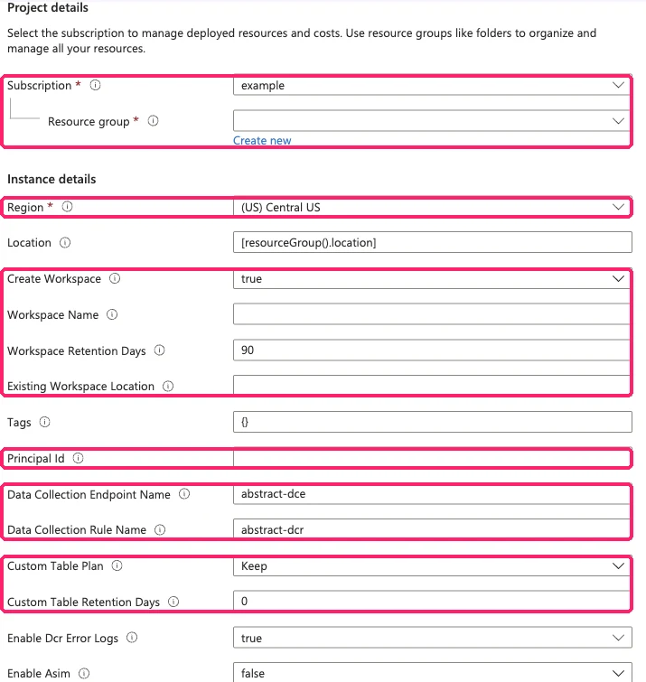</button><figcaption>The Abstract solution&#x27;s parameters form.<span class="credit">Example Azure tenant</span></figcaption></figure><figure class="shot"><button class="zoom" type="button" data-src="shots/ms-deploy-params-content.webp" aria-label="Enlarge: Further down the same form: the routing choices, Native Vendors, and the content and playbook switches.">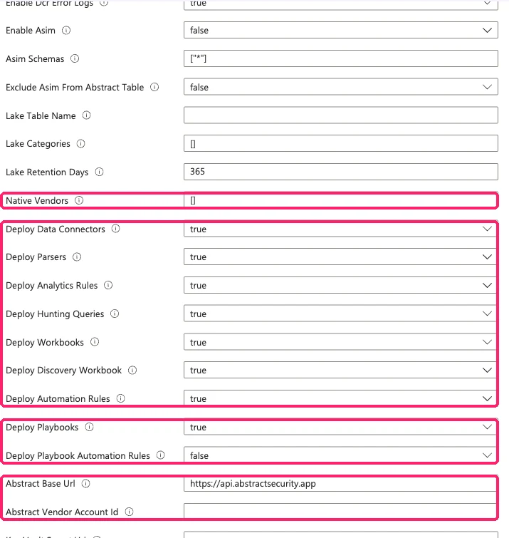</button><figcaption>Further down the same form: the routing choices, Native Vendors, and the content and playbook switches.<span class="credit">Example Azure tenant</span></figcaption></figure></div><p class="done"><span class="tick" aria-hidden="true"></span><b>Done when</b> The deployment shows <b>Your deployment is complete</b>.</p></div></li></ol></section><section class="part" id="f-hand"><p class="kicker">Alternative</p><h3>Without a template</h3><details class="code"><summary>Build the Abstract table by hand in the portal instead (optional)</summary><div class="tabs" role="tablist"><button type="button" role="tab" aria-selected="true" data-i="0">Steps</button></div><div class="pane" data-i="0"><div class="codewrap"><button class="copy" type="button">Copy</button><pre><code class="text">Use this only where templates cannot be deployed. It builds the Abstract table alone; the ASIM, vendor and lake routes need the solution.

1. Monitor › Data Collection Endpoints › Create: name abstract-dce, the workspace&#x27;s resource group and region.
2. Workspace › Tables › + Create (opens the custom log wizard): table AbstractEventLogs, table plan Analytics,
   Create a new data collection rule abstract-dcr, endpoint abstract-dce.
   Next: Browse for files › all_fields.json; Transformation editor: paste all_fields.transform.txt, Run, Apply; Next, Create.
3. Monitor › Data Collection Rules › abstract-dcr › Access control (IAM) › Add role assignment:
   Monitoring Metrics Publisher › User, group, or service principal › abstract-sentinel-destination › Review + assign.
4. abstract-dcr › Diagnostic settings › Add diagnostic setting: Log Errors › Send to Log Analytics workspace › Save.
5. abstract-dcr › Overview › JSON View: copy immutableId and the stream name Custom-AbstractEventLogs_CL;
   abstract-dce › Overview: copy the Logs Ingestion URL. Then continue at Foundation step 12.</code></pre></div></div></details><p class="dlrow"><a class="dl" href="files/all_fields.json" download="all_fields.json">Save all_fields.json</a> <span class="dlwhat">Sample record that defines the Abstract table&#x27;s columns · 3 KB</span></p><p class="dlrow"><a class="dl" href="files/all_fields.transform.txt" download="all_fields.transform.txt">Save all_fields.transform.txt</a> <span class="dlwhat">Transformation for the Abstract table · 126 bytes</span></p><div class="figs"><figure class="shot"><button class="zoom" type="button" data-src="shots/ms-dce-create.webp" aria-label="Enlarge: Monitor › Data Collection Endpoints › Create: name, resource group and region.">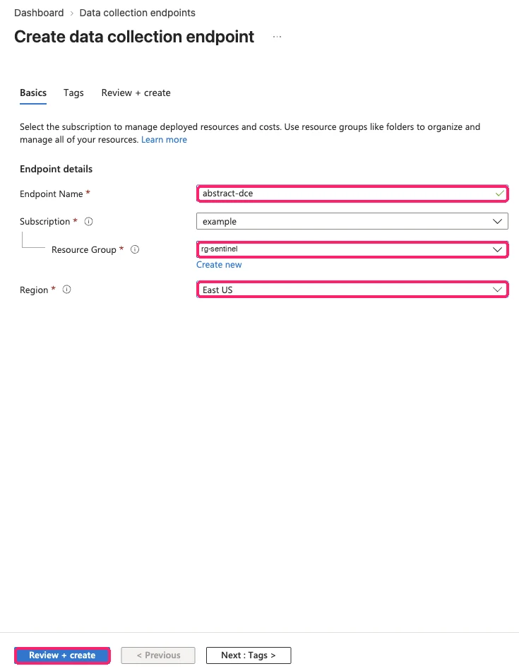</button><figcaption>Monitor › Data Collection Endpoints › Create: name, resource group and region.<span class="credit">Example Azure tenant</span></figcaption></figure><figure class="shot"><button class="zoom" type="button" data-src="shots/ms-table-basics.webp" aria-label="Enlarge: Basics: table name, a new data collection rule, and the endpoint.">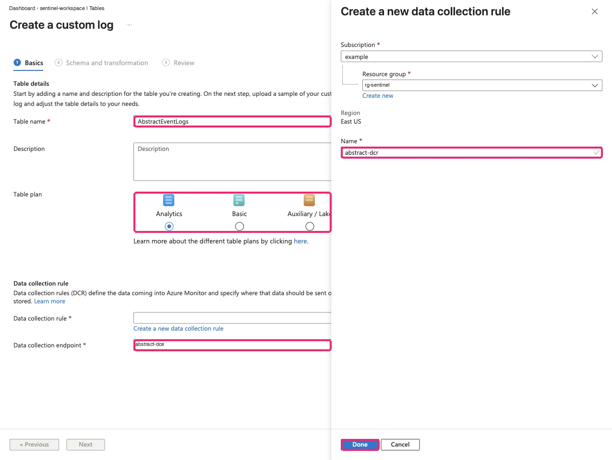</button><figcaption>Basics: table name, a new data collection rule, and the endpoint.<span class="credit">Example Azure tenant</span></figcaption></figure><figure class="shot"><button class="zoom" type="button" data-src="shots/ms-table-sample.webp" aria-label="Enlarge: Schema and transformation, after uploading all_fields.json.">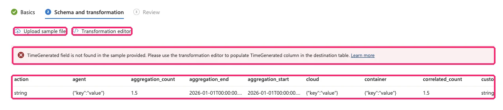</button><figcaption>Schema and transformation, after uploading all_fields.json.<span class="credit">Example Azure tenant</span></figcaption></figure><figure class="shot"><button class="zoom" type="button" data-src="shots/ms-iam-role.webp" aria-label="Enlarge: The rule › Access control (IAM) › Add role assignment: Monitoring Metrics Publisher.">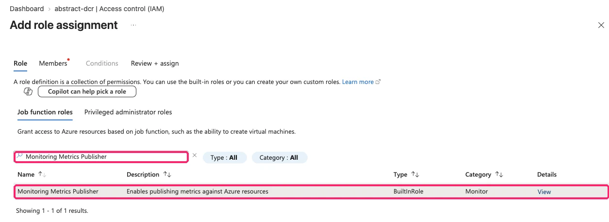</button><figcaption>The rule › Access control (IAM) › Add role assignment: Monitoring Metrics Publisher.<span class="credit">Example Azure tenant</span></figcaption></figure><figure class="shot"><button class="zoom" type="button" data-src="shots/ms-dcr-diag.webp" aria-label="Enlarge: The rule › Diagnostic settings: Log Errors sent to the workspace.">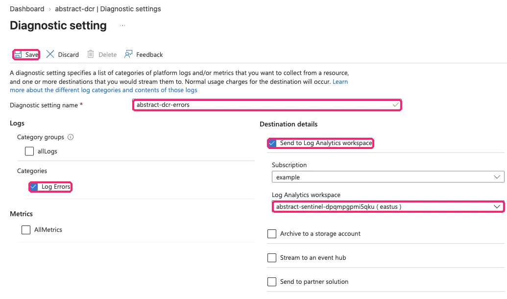</button><figcaption>The rule › Diagnostic settings: Log Errors sent to the workspace.<span class="credit">Example Azure tenant</span></figcaption></figure></div></section></div></div></section><section class="view" id="view-okta" data-view="okta" hidden>
<header class="hero"><div class="wrap"><p class="eyebrow">Abstract Security · setup guide</p><h2>Okta</h2><p class="lede">Okta System Log events land in OktaV2_CL, shaped by Microsoft's own Okta logic.</p>
<p class="progress" data-progress="okta"></p></div></header>
<div class="wrap layout"><nav class="toc" aria-label="On this page"><p>On this page</p><ol><li><a href="#o-steps">Okta into OktaV2_CL</a></li></ol></nav><div class="main"><section class="part" id="o-steps"><p class="kicker">Okta</p><h3>Okta into Microsoft's Okta table</h3><p class=lead>The rule runs Microsoft's own Okta connector transformation on Okta's original record, so Okta's Content hub rules and workbook run with no edits.</p><ol class="steps"><li class="step" id="okta-s1"><div class="stephead"><span class="num">1</span><div class="sh"><h4>Install Microsoft's Okta Single Sign-On solution</h4><p class="who">Your Sentinel administrator</p></div><label class="mark"><input type="checkbox" data-step="okta-s1"> Done</label></div><p class="where" aria-label="Where"><span>Defender portal</span><span class="sep" aria-hidden="true">›</span><span>Microsoft Sentinel</span><span class="sep" aria-hidden="true">›</span><span>Content management</span><span class="sep" aria-hidden="true">›</span><span>Content hub</span></p><div class="sbody"><p>Search <b>Okta Single Sign-On</b> and install it. It brings the parsers, analytics rule templates and workbooks that read this table. Do not configure Microsoft's own Okta connector: Abstract fills the table.</p><div class="tbl"><table class="kv"><thead><tr><th>Field</th><th>Value</th></tr></thead><tbody><tr><th scope=row>Solution</th><td>Okta Single Sign-On</td></tr><tr><th scope=row>Then</th><td><b>Install</b></td></tr></tbody></table></div><p class="done"><span class="tick" aria-hidden="true"></span><b>Done when</b> The solution shows Installed. The form's <b>Vendor tables</b> tab also reads its status.</p></div></li><li class="step" id="okta-s2"><div class="stephead"><span class="num">2</span><div class="sh"><h4>Add the route to the deployment</h4><p class="who">Your Azure administrator</p></div><label class="mark"><input type="checkbox" data-step="okta-s2"> Done</label></div><p class="where" aria-label="Where"><span>Azure portal</span><span class="sep" aria-hidden="true">›</span><span>Deploy to Azure (Foundation step 1)</span><span class="sep" aria-hidden="true">›</span><span>Vendor tables</span></p><div class="sbody"><p>Open the deployment again with the <b>Deploy to Azure</b> button on the <a href="#foundation">Foundation</a> tab. A rule change reaches ingestion within 20 minutes.</p><div class="tbl"><table class="kv"><thead><tr><th>Form tab</th><th>Value</th></tr></thead><tbody><tr><th scope=row>Basics</th><td>The same subscription, resource group and workspace (<b>Use existing</b>)</td></tr><tr><th scope=row>Data collection</th><td><b>Use existing</b>: the same endpoint and rule, so the rule keeps its ID and Abstract keeps sending</td></tr><tr><th scope=row>Vendor tables</th><td>Add <code>okta</code> to the values you already chose</td></tr><tr><th scope=row>Store each vendor event once</th><td>On (the default)</td></tr><tr><th scope=row>Okta domain</th><td>Your Okta domain, for example <code>example.okta.com</code></td></tr><tr><th scope=row>Every other tab</th><td>The same choices as your first deployment. The deployment writes the rule exactly as the form describes it</td></tr><tr><th scope=row>Then</th><td><b>Next</b> through every tab, <b>Review + create</b>, <b>Create</b></td></tr></tbody></table></div><div class="figs"><figure class="shot"><button class="zoom" type="button" data-src="shots/form-vendors.webp" aria-label="Enlarge: Vendor tables: the status of each vendor&#x27;s table and Microsoft solution in this workspace, and the dataflow count."></button><figcaption>Vendor tables: the status of each vendor&#x27;s table and Microsoft solution in this workspace, and the dataflow count.<span class="credit">Example Azure tenant</span></figcaption></figure><figure class="shot"><button class="zoom" type="button" data-src="shots/form-collect-existing.webp" aria-label="Enlarge: Data collection with the existing endpoint and rule, and the table&#x27;s current plan and retention.">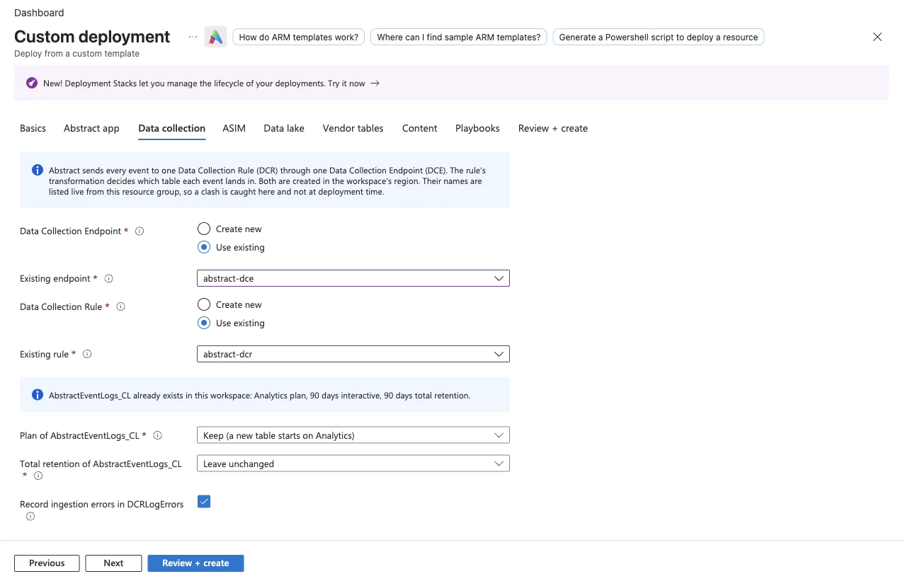</button><figcaption>Data collection with the existing endpoint and rule, and the table&#x27;s current plan and retention.<span class="credit">Example Azure tenant</span></figcaption></figure></div><p class="done"><span class="tick" aria-hidden="true"></span><b>Done when</b> The deployment shows <b>Your deployment is complete</b>, and the rule's JSON View lists a dataflow with output stream <code>Custom-OktaV2_CL</code>.</p></div></li><li class="step" id="okta-s3"><div class="stephead"><span class="num">3</span><div class="sh"><h4>Keep the original record in Abstract</h4><p class="who">Abstract implementation engineer</p></div><label class="mark"><input type="checkbox" data-step="okta-s3"> Done</label></div><p class="where" aria-label="Where"><span>Abstract</span><span class="sep" aria-hidden="true">›</span><span>Pipelines</span><span class="sep" aria-hidden="true">›</span><span>Integrations</span><span class="sep" aria-hidden="true">›</span><span>Enabled</span><span class="sep" aria-hidden="true">›</span><span>your Okta source</span><span class="sep" aria-hidden="true">›</span><span>Integration Config</span></p><div class="sbody"><p>This route reads the source's original record and builds the row Microsoft's content expects from it, so the source must keep it.</p><div class="tbl"><table class="kv"><thead><tr><th>Field</th><th>Value</th></tr></thead><tbody><tr><th scope=row>Store Raw Events</th><td>On</td></tr></tbody></table></div><p class="done"><span class="tick" aria-hidden="true"></span><b>Done when</b> Store Raw Events reads On.</p></div></li><li class="step" id="okta-s4"><div class="stephead"><span class="num">4</span><div class="sh"><h4>Route the source to Sentinel</h4><p class="who">Abstract implementation engineer</p></div><label class="mark"><input type="checkbox" data-step="okta-s4"> Done</label></div><p class="where" aria-label="Where"><span>Abstract</span><span class="sep" aria-hidden="true">›</span><span>Pipelines</span><span class="sep" aria-hidden="true">›</span><span>Overview</span></p><div class="sbody"><p>Drag from the Okta source to <b>Microsoft Sentinel</b> and connect. If it is routed already, nothing changes here.</p><p class="done"><span class="tick" aria-hidden="true"></span><b>Done when</b> Rows appear in <code>OktaV2_CL</code> within 20 minutes.</p></div></li><li class="step" id="okta-s5"><div class="stephead"><span class="num">5</span><div class="sh"><h4>Check it</h4><p class="who">Your Sentinel administrator</p></div><label class="mark"><input type="checkbox" data-step="okta-s5"> Done</label></div><p class="where" aria-label="Where"><span>Defender portal</span><span class="sep" aria-hidden="true">›</span><span>Microsoft Sentinel</span><span class="sep" aria-hidden="true">›</span><span>Logs (KQL mode)</span></p><div class="sbody"><p>Microsoft's <code>OktaSSO</code> parser returns the same rows. In Abstract's tests an Okta System Log record landed in <code>OktaV2_CL</code> with its domain, and <code>OktaSSO</code> returned it.</p><figure class="shot"><button class="zoom" type="button" data-src="shots/ms-hub-okta.webp" aria-label="Enlarge: Content hub: the Okta Single Sign-On solution.">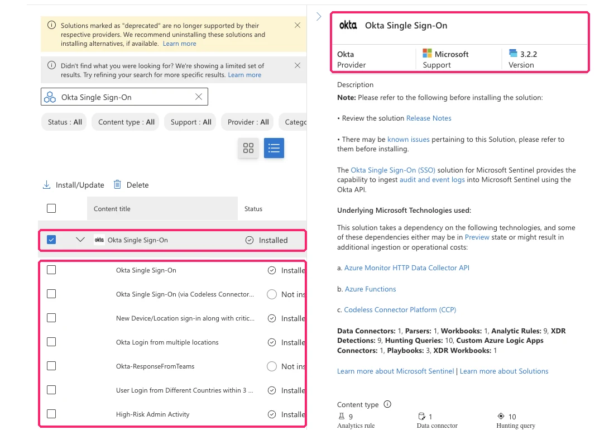</button><figcaption>Content hub: the Okta Single Sign-On solution.<span class="credit">Example Azure tenant</span></figcaption></figure><details class="code"><summary>Check it</summary><div class="tabs" role="tablist"><button type="button" role="tab" aria-selected="true" data-i="0">KQL</button></div><div class="pane" data-i="0"><div class="codewrap"><button class="copy" type="button">Copy</button><pre><code class="kql">OktaV2_CL
| where TimeGenerated &gt; ago(1h)
| summarize Rows = count() by DomainName, EventOriginalType

// Microsoft&#x27;s Okta parser over the same rows
OktaSSO
| where TimeGenerated &gt; ago(1h)
| take 20</code></pre></div></div></details><p class="done"><span class="tick" aria-hidden="true"></span><b>Done when</b> Both queries return rows.</p></div></li><li class="step" id="okta-s6"><div class="stephead"><span class="num">6</span><div class="sh"><h4>Turn on the Okta rules</h4><p class="who">Your Sentinel administrator</p></div><label class="mark"><input type="checkbox" data-step="okta-s6"> Done</label></div><p class="where" aria-label="Where"><span>Defender portal</span><span class="sep" aria-hidden="true">›</span><span>Microsoft Sentinel</span><span class="sep" aria-hidden="true">›</span><span>Configuration</span><span class="sep" aria-hidden="true">›</span><span>Analytics</span><span class="sep" aria-hidden="true">›</span><span>Rule templates</span></p><div class="sbody"><p>Filter <b>Data sources</b> to Okta. Open each template and choose <b>Create rule</b>, keeping the defaults.</p><p class="done"><span class="tick" aria-hidden="true"></span><b>Done when</b> The rules are listed under Active rules with status Enabled.</p></div></li></ol></section></div></div></section><section class="view" id="view-firewalls" data-view="firewalls" hidden>
<header class="hero"><div class="wrap"><p class="eyebrow">Abstract Security · setup guide</p><h2>Firewalls and CEF</h2><p class="lede">Palo Alto, Fortinet, Check Point, Cisco ASA, F5 and Trend Micro events land in CommonSecurityLog with the vendor strings Microsoft's content reads.</p>
<p class="progress" data-progress="firewalls"></p></div></header>
<div class="wrap layout"><nav class="toc" aria-label="On this page"><p>On this page</p><ol><li><a href="#fw-steps">Firewalls into CommonSecurityLog</a></li></ol></nav><div class="main"><section class="part" id="fw-steps"><p class="kicker">Firewalls and CEF</p><h3>Firewalls into CommonSecurityLog</h3><p class=lead>Microsoft's firewall content filters on <code>DeviceVendor</code> and <code>DeviceProduct</code> first. The rule writes the strings Microsoft's content expects. A CEF source is rebuilt from its original CEF line; Cisco ASA, FortiGate and F5 ASM are mapped from Abstract's parsed fields.</p><div class="tbl"><table><thead><tr><th>Firewall</th><th>Arrives in Abstract as</th><th>Vendor tables value</th><th>DeviceVendor</th><th>DeviceProduct</th></tr></thead><tbody><tr><td>Palo Alto Networks</td><td>CEF</td><td><code>csl-cef</code></td><td>Palo Alto Networks</td><td>PAN-OS, Prisma Access</td></tr><tr><td>Check Point</td><td>CEF</td><td><code>csl-cef</code></td><td>Check Point</td><td>VPN-1 &amp; FireWall-1, Application Control, HTTPS Inspection, SmartDefense, URL Filtering</td></tr><tr><td>Trend Micro Deep Security</td><td>CEF</td><td><code>csl-cef</code></td><td>Trend Micro</td><td>Deep Security Agent, Deep Security Manager</td></tr><tr><td>Any other CEF source</td><td>CEF</td><td><code>csl-cef</code></td><td>From its CEF header</td><td>From its CEF header</td></tr><tr><td>Cisco ASA</td><td>Not CEF: mapped from Abstract's parsed fields</td><td><code>csl-acs</code></td><td>Cisco</td><td>ASA</td></tr><tr><td>Fortinet FortiGate</td><td>Not CEF: mapped from Abstract's parsed fields</td><td><code>csl-acs</code></td><td>Fortinet</td><td>Fortigate</td></tr><tr><td>F5 BIG-IP ASM</td><td>Not CEF: mapped from Abstract's parsed fields</td><td><code>csl-acs</code></td><td>F5</td><td>ASM</td></tr></tbody></table></div><ol class="steps"><li class="step" id="firewalls-s1"><div class="stephead"><span class="num">1</span><div class="sh"><h4>Install Microsoft's Common Event Format solution</h4><p class="who">Your Sentinel administrator</p></div><label class="mark"><input type="checkbox" data-step="firewalls-s1"> Done</label></div><p class="where" aria-label="Where"><span>Defender portal</span><span class="sep" aria-hidden="true">›</span><span>Microsoft Sentinel</span><span class="sep" aria-hidden="true">›</span><span>Content management</span><span class="sep" aria-hidden="true">›</span><span>Content hub</span></p><div class="sbody"><p>Search <b>Common Event Format</b> and install it. It brings the parsers, analytics rule templates and workbooks that read this table. Then search Content hub for your firewall's vendor, for example Palo Alto, Fortinet, Check Point, Cisco ASA, F5 or Trend Micro, and install its solution too.</p><div class="tbl"><table class="kv"><thead><tr><th>Field</th><th>Value</th></tr></thead><tbody><tr><th scope=row>Solution</th><td>Common Event Format</td></tr><tr><th scope=row>Then</th><td><b>Install</b></td></tr></tbody></table></div><p class="done"><span class="tick" aria-hidden="true"></span><b>Done when</b> The solution shows Installed. The form's <b>Vendor tables</b> tab also reads its status.</p></div></li><li class="step" id="firewalls-s2"><div class="stephead"><span class="num">2</span><div class="sh"><h4>Add the route to the deployment</h4><p class="who">Your Azure administrator</p></div><label class="mark"><input type="checkbox" data-step="firewalls-s2"> Done</label></div><p class="where" aria-label="Where"><span>Azure portal</span><span class="sep" aria-hidden="true">›</span><span>Deploy to Azure (Foundation step 1)</span><span class="sep" aria-hidden="true">›</span><span>Vendor tables</span></p><div class="sbody"><p>Open the deployment again with the <b>Deploy to Azure</b> button on the <a href="#foundation">Foundation</a> tab. A rule change reaches ingestion within 20 minutes.</p><div class="tbl"><table class="kv"><thead><tr><th>Form tab</th><th>Value</th></tr></thead><tbody><tr><th scope=row>Basics</th><td>The same subscription, resource group and workspace (<b>Use existing</b>)</td></tr><tr><th scope=row>Data collection</th><td><b>Use existing</b>: the same endpoint and rule, so the rule keeps its ID and Abstract keeps sending</td></tr><tr><th scope=row>Vendor tables</th><td>Add <code>csl-cef</code>, <code>csl-acs</code> to the values you already chose</td></tr><tr><th scope=row>Store each vendor event once</th><td>On (the default)</td></tr><tr><th scope=row>Every other tab</th><td>The same choices as your first deployment. The deployment writes the rule exactly as the form describes it</td></tr><tr><th scope=row>Then</th><td><b>Next</b> through every tab, <b>Review + create</b>, <b>Create</b></td></tr></tbody></table></div><div class="figs"><figure class="shot"><button class="zoom" type="button" data-src="shots/form-vendors.webp" aria-label="Enlarge: Vendor tables: the status of each vendor&#x27;s table and Microsoft solution in this workspace, and the dataflow count."></button><figcaption>Vendor tables: the status of each vendor&#x27;s table and Microsoft solution in this workspace, and the dataflow count.<span class="credit">Example Azure tenant</span></figcaption></figure><figure class="shot"><button class="zoom" type="button" data-src="shots/form-collect-existing.webp" aria-label="Enlarge: Data collection with the existing endpoint and rule, and the table&#x27;s current plan and retention."></button><figcaption>Data collection with the existing endpoint and rule, and the table&#x27;s current plan and retention.<span class="credit">Example Azure tenant</span></figcaption></figure></div><p class="done"><span class="tick" aria-hidden="true"></span><b>Done when</b> The deployment shows <b>Your deployment is complete</b>, and the rule's JSON View lists a dataflow with output stream <code>Microsoft-CommonSecurityLog</code>.</p></div></li><li class="step" id="firewalls-s3"><div class="stephead"><span class="num">3</span><div class="sh"><h4>Keep the original record in Abstract</h4><p class="who">Abstract implementation engineer</p></div><label class="mark"><input type="checkbox" data-step="firewalls-s3"> Done</label></div><p class="where" aria-label="Where"><span>Abstract</span><span class="sep" aria-hidden="true">›</span><span>Pipelines</span><span class="sep" aria-hidden="true">›</span><span>Integrations</span><span class="sep" aria-hidden="true">›</span><span>Enabled</span><span class="sep" aria-hidden="true">›</span><span>each firewall source</span><span class="sep" aria-hidden="true">›</span><span>Integration Config</span></p><div class="sbody"><p>This route reads the source's original record and builds the row Microsoft's content expects from it, so the source must keep it.</p><div class="tbl"><table class="kv"><thead><tr><th>Field</th><th>Value</th></tr></thead><tbody><tr><th scope=row>Store Raw Events</th><td>On</td></tr></tbody></table></div><p class="done"><span class="tick" aria-hidden="true"></span><b>Done when</b> Store Raw Events reads On.</p></div></li><li class="step" id="firewalls-s4"><div class="stephead"><span class="num">4</span><div class="sh"><h4>Route the source to Sentinel</h4><p class="who">Abstract implementation engineer</p></div><label class="mark"><input type="checkbox" data-step="firewalls-s4"> Done</label></div><p class="where" aria-label="Where"><span>Abstract</span><span class="sep" aria-hidden="true">›</span><span>Pipelines</span><span class="sep" aria-hidden="true">›</span><span>Overview</span></p><div class="sbody"><p>Drag from each firewall source to <b>Microsoft Sentinel</b> and connect. If it is routed already, nothing changes here.</p><p class="done"><span class="tick" aria-hidden="true"></span><b>Done when</b> Rows appear in <code>CommonSecurityLog</code> within 20 minutes.</p></div></li><li class="step" id="firewalls-s5"><div class="stephead"><span class="num">5</span><div class="sh"><h4>Check it</h4><p class="who">Your Sentinel administrator</p></div><label class="mark"><input type="checkbox" data-step="firewalls-s5"> Done</label></div><p class="where" aria-label="Where"><span>Defender portal</span><span class="sep" aria-hidden="true">›</span><span>Microsoft Sentinel</span><span class="sep" aria-hidden="true">›</span><span>Logs (KQL mode)</span></p><div class="sbody"><p>Abstract's rows carry <code>CollectorHostName</code> <code>Abstract</code>. The vendor and product strings match the table above. In Abstract's tests every vendor in the table landed with those strings, and Microsoft's <code>_Im_NetworkSession</code> parser returned the Check Point, Palo Alto and Cisco ASA traffic rows.</p><details class="code"><summary>Check it</summary><div class="tabs" role="tablist"><button type="button" role="tab" aria-selected="true" data-i="0">KQL</button></div><div class="pane" data-i="0"><div class="codewrap"><button class="copy" type="button">Copy</button><pre><code class="kql">CommonSecurityLog
| where TimeGenerated &gt; ago(1h) and CollectorHostName == &quot;Abstract&quot;
| summarize Rows = count(), WithSourceIP = countif(isnotempty(SourceIP)) by DeviceVendor, DeviceProduct

// Microsoft&#x27;s ASIM network parser over the same rows
_Im_NetworkSession(starttime = ago(1h))
| summarize Rows = count() by EventVendor, EventProduct</code></pre></div></div></details><p class="done"><span class="tick" aria-hidden="true"></span><b>Done when</b> Each of your firewalls appears with the DeviceVendor and DeviceProduct in the table.</p></div></li><li class="step" id="firewalls-s6"><div class="stephead"><span class="num">6</span><div class="sh"><h4>Turn on the vendor rules</h4><p class="who">Your Sentinel administrator</p></div><label class="mark"><input type="checkbox" data-step="firewalls-s6"> Done</label></div><p class="where" aria-label="Where"><span>Defender portal</span><span class="sep" aria-hidden="true">›</span><span>Microsoft Sentinel</span><span class="sep" aria-hidden="true">›</span><span>Configuration</span><span class="sep" aria-hidden="true">›</span><span>Analytics</span><span class="sep" aria-hidden="true">›</span><span>Rule templates</span></p><div class="sbody"><p>Filter <b>Data sources</b> to your firewall's connector. Open each template and choose <b>Create rule</b>, keeping the defaults.</p><p class="done"><span class="tick" aria-hidden="true"></span><b>Done when</b> The rules are listed under Active rules with status Enabled.</p></div></li></ol></section></div></div></section><section class="view" id="view-syslog" data-view="syslog" hidden>
<header class="hero"><div class="wrap"><p class="eyebrow">Abstract Security · setup guide</p><h2>Syslog</h2><p class="lede">Linux, Nutanix and Infoblox lines land in Syslog, where Microsoft's Syslog content and ASIM parsers read them.</p>
<p class="progress" data-progress="syslog"></p></div></header>
<div class="wrap layout"><nav class="toc" aria-label="On this page"><p>On this page</p><ol><li><a href="#sy-steps">Lines into Syslog</a></li></ol></nav><div class="main"><section class="part" id="sy-steps"><p class="kicker">Syslog</p><h3>Linux, Nutanix and Infoblox into Syslog</h3><p class=lead>Microsoft's Syslog parsers read the original line, so the rule writes it unchanged. CEF lines from the same hosts go to CommonSecurityLog instead. With Syslog on, Infoblox DHCP lines stay in <code>Syslog</code> and are not also written to the ASIM DHCP table.</p><ol class="steps"><li class="step" id="syslog-s1"><div class="stephead"><span class="num">1</span><div class="sh"><h4>Install Microsoft's Syslog solution</h4><p class="who">Your Sentinel administrator</p></div><label class="mark"><input type="checkbox" data-step="syslog-s1"> Done</label></div><p class="where" aria-label="Where"><span>Defender portal</span><span class="sep" aria-hidden="true">›</span><span>Microsoft Sentinel</span><span class="sep" aria-hidden="true">›</span><span>Content management</span><span class="sep" aria-hidden="true">›</span><span>Content hub</span></p><div class="sbody"><p>Search <b>Syslog</b> and install it. It brings the parsers, analytics rule templates and workbooks that read this table. For an appliance with its own solution, such as Infoblox, install that solution too.</p><div class="tbl"><table class="kv"><thead><tr><th>Field</th><th>Value</th></tr></thead><tbody><tr><th scope=row>Solution</th><td>Syslog</td></tr><tr><th scope=row>Then</th><td><b>Install</b></td></tr></tbody></table></div><p class="done"><span class="tick" aria-hidden="true"></span><b>Done when</b> The solution shows Installed. The form's <b>Vendor tables</b> tab also reads its status.</p></div></li><li class="step" id="syslog-s2"><div class="stephead"><span class="num">2</span><div class="sh"><h4>Add the route to the deployment</h4><p class="who">Your Azure administrator</p></div><label class="mark"><input type="checkbox" data-step="syslog-s2"> Done</label></div><p class="where" aria-label="Where"><span>Azure portal</span><span class="sep" aria-hidden="true">›</span><span>Deploy to Azure (Foundation step 1)</span><span class="sep" aria-hidden="true">›</span><span>Vendor tables</span></p><div class="sbody"><p>Open the deployment again with the <b>Deploy to Azure</b> button on the <a href="#foundation">Foundation</a> tab. A rule change reaches ingestion within 20 minutes.</p><div class="tbl"><table class="kv"><thead><tr><th>Form tab</th><th>Value</th></tr></thead><tbody><tr><th scope=row>Basics</th><td>The same subscription, resource group and workspace (<b>Use existing</b>)</td></tr><tr><th scope=row>Data collection</th><td><b>Use existing</b>: the same endpoint and rule, so the rule keeps its ID and Abstract keeps sending</td></tr><tr><th scope=row>Vendor tables</th><td>Add <code>syslog</code> to the values you already chose</td></tr><tr><th scope=row>Store each vendor event once</th><td>On (the default)</td></tr><tr><th scope=row>Every other tab</th><td>The same choices as your first deployment. The deployment writes the rule exactly as the form describes it</td></tr><tr><th scope=row>Then</th><td><b>Next</b> through every tab, <b>Review + create</b>, <b>Create</b></td></tr></tbody></table></div><div class="figs"><figure class="shot"><button class="zoom" type="button" data-src="shots/form-vendors.webp" aria-label="Enlarge: Vendor tables: the status of each vendor&#x27;s table and Microsoft solution in this workspace, and the dataflow count."></button><figcaption>Vendor tables: the status of each vendor&#x27;s table and Microsoft solution in this workspace, and the dataflow count.<span class="credit">Example Azure tenant</span></figcaption></figure><figure class="shot"><button class="zoom" type="button" data-src="shots/form-collect-existing.webp" aria-label="Enlarge: Data collection with the existing endpoint and rule, and the table&#x27;s current plan and retention."></button><figcaption>Data collection with the existing endpoint and rule, and the table&#x27;s current plan and retention.<span class="credit">Example Azure tenant</span></figcaption></figure></div><p class="done"><span class="tick" aria-hidden="true"></span><b>Done when</b> The deployment shows <b>Your deployment is complete</b>, and the rule's JSON View lists a dataflow with output stream <code>Microsoft-Syslog</code>.</p></div></li><li class="step" id="syslog-s3"><div class="stephead"><span class="num">3</span><div class="sh"><h4>Keep the original record in Abstract</h4><p class="who">Abstract implementation engineer</p></div><label class="mark"><input type="checkbox" data-step="syslog-s3"> Done</label></div><p class="where" aria-label="Where"><span>Abstract</span><span class="sep" aria-hidden="true">›</span><span>Pipelines</span><span class="sep" aria-hidden="true">›</span><span>Integrations</span><span class="sep" aria-hidden="true">›</span><span>Enabled</span><span class="sep" aria-hidden="true">›</span><span>each Linux, Nutanix or Infoblox source</span><span class="sep" aria-hidden="true">›</span><span>Integration Config</span></p><div class="sbody"><p>This route reads the source's original record and builds the row Microsoft's content expects from it, so the source must keep it.</p><div class="tbl"><table class="kv"><thead><tr><th>Field</th><th>Value</th></tr></thead><tbody><tr><th scope=row>Store Raw Events</th><td>On</td></tr></tbody></table></div><p class="done"><span class="tick" aria-hidden="true"></span><b>Done when</b> Store Raw Events reads On.</p></div></li><li class="step" id="syslog-s4"><div class="stephead"><span class="num">4</span><div class="sh"><h4>Route the source to Sentinel</h4><p class="who">Abstract implementation engineer</p></div><label class="mark"><input type="checkbox" data-step="syslog-s4"> Done</label></div><p class="where" aria-label="Where"><span>Abstract</span><span class="sep" aria-hidden="true">›</span><span>Pipelines</span><span class="sep" aria-hidden="true">›</span><span>Overview</span></p><div class="sbody"><p>Drag from each Linux, Nutanix or Infoblox source to <b>Microsoft Sentinel</b> and connect. If it is routed already, nothing changes here.</p><p class="done"><span class="tick" aria-hidden="true"></span><b>Done when</b> Rows appear in <code>Syslog</code> within 20 minutes.</p></div></li><li class="step" id="syslog-s5"><div class="stephead"><span class="num">5</span><div class="sh"><h4>Check it</h4><p class="who">Your Sentinel administrator</p></div><label class="mark"><input type="checkbox" data-step="syslog-s5"> Done</label></div><p class="where" aria-label="Where"><span>Defender portal</span><span class="sep" aria-hidden="true">›</span><span>Microsoft Sentinel</span><span class="sep" aria-hidden="true">›</span><span>Logs (KQL mode)</span></p><div class="sbody"><p>Abstract's rows carry <code>CollectorHostName</code> <code>Abstract</code>, with the original line in <code>SyslogMessage</code> and its program in <code>ProcessName</code>. In Abstract's tests Linux <code>sshd</code> and <code>sudo</code>, Nutanix and Infoblox <code>dhcpd</code> and <code>named</code> lines landed this way; Microsoft's <code>_Im_Authentication</code> parser returned the <code>sshd</code> sign-in and <code>_Im_Dns</code> returned the Infoblox DNS lines.</p><details class="code"><summary>Check it</summary><div class="tabs" role="tablist"><button type="button" role="tab" aria-selected="true" data-i="0">KQL</button></div><div class="pane" data-i="0"><div class="codewrap"><button class="copy" type="button">Copy</button><pre><code class="kql">Syslog
| where TimeGenerated &gt; ago(1h) and CollectorHostName == &quot;Abstract&quot;
| summarize Rows = count() by Computer, ProcessName

// Microsoft&#x27;s ASIM parsers over the same rows
_Im_Authentication(starttime = ago(1h))
| where EventProduct has &quot;OpenSSH&quot;
| summarize Rows = count() by EventResult

_Im_Dns(starttime = ago(1h))
| summarize Rows = count() by EventVendor, EventProduct</code></pre></div></div></details><p class="done"><span class="tick" aria-hidden="true"></span><b>Done when</b> Your hosts appear by ProcessName.</p></div></li></ol></section></div></div></section><section class="view" id="view-cloudtrail" data-view="cloudtrail" hidden>
<header class="hero"><div class="wrap"><p class="eyebrow">Abstract Security · setup guide</p><h2>AWS CloudTrail</h2><p class="lede">CloudTrail records land in AWSCloudTrail, the table Microsoft's AWS content reads.</p>
<p class="progress" data-progress="cloudtrail"></p></div></header>
<div class="wrap layout"><nav class="toc" aria-label="On this page"><p>On this page</p><ol><li><a href="#ct-steps">CloudTrail into AWSCloudTrail</a></li></ol></nav><div class="main"><section class="part" id="ct-steps"><p class="kicker">AWS CloudTrail</p><h3>CloudTrail into AWSCloudTrail</h3><p class=lead>Microsoft's Amazon Web Services solution reads <code>AWSCloudTrail</code>. Its rules, hunting queries and workbooks run on Abstract's CloudTrail events unchanged.</p><ol class="steps"><li class="step" id="cloudtrail-s1"><div class="stephead"><span class="num">1</span><div class="sh"><h4>Install Microsoft's Amazon Web Services solution</h4><p class="who">Your Sentinel administrator</p></div><label class="mark"><input type="checkbox" data-step="cloudtrail-s1"> Done</label></div><p class="where" aria-label="Where"><span>Defender portal</span><span class="sep" aria-hidden="true">›</span><span>Microsoft Sentinel</span><span class="sep" aria-hidden="true">›</span><span>Content management</span><span class="sep" aria-hidden="true">›</span><span>Content hub</span></p><div class="sbody"><p>Search <b>Amazon Web Services</b> and install it. It brings the parsers, analytics rule templates and workbooks that read this table. </p><div class="tbl"><table class="kv"><thead><tr><th>Field</th><th>Value</th></tr></thead><tbody><tr><th scope=row>Solution</th><td>Amazon Web Services</td></tr><tr><th scope=row>Then</th><td><b>Install</b></td></tr></tbody></table></div><p class="done"><span class="tick" aria-hidden="true"></span><b>Done when</b> The solution shows Installed. The form's <b>Vendor tables</b> tab also reads its status.</p></div></li><li class="step" id="cloudtrail-s2"><div class="stephead"><span class="num">2</span><div class="sh"><h4>Add the route to the deployment</h4><p class="who">Your Azure administrator</p></div><label class="mark"><input type="checkbox" data-step="cloudtrail-s2"> Done</label></div><p class="where" aria-label="Where"><span>Azure portal</span><span class="sep" aria-hidden="true">›</span><span>Deploy to Azure (Foundation step 1)</span><span class="sep" aria-hidden="true">›</span><span>Vendor tables</span></p><div class="sbody"><p>Open the deployment again with the <b>Deploy to Azure</b> button on the <a href="#foundation">Foundation</a> tab. A rule change reaches ingestion within 20 minutes.</p><div class="tbl"><table class="kv"><thead><tr><th>Form tab</th><th>Value</th></tr></thead><tbody><tr><th scope=row>Basics</th><td>The same subscription, resource group and workspace (<b>Use existing</b>)</td></tr><tr><th scope=row>Data collection</th><td><b>Use existing</b>: the same endpoint and rule, so the rule keeps its ID and Abstract keeps sending</td></tr><tr><th scope=row>Vendor tables</th><td>Add <code>aws-cloudtrail</code> to the values you already chose</td></tr><tr><th scope=row>Store each vendor event once</th><td>On (the default)</td></tr><tr><th scope=row>Every other tab</th><td>The same choices as your first deployment. The deployment writes the rule exactly as the form describes it</td></tr><tr><th scope=row>Then</th><td><b>Next</b> through every tab, <b>Review + create</b>, <b>Create</b></td></tr></tbody></table></div><div class="figs"><figure class="shot"><button class="zoom" type="button" data-src="shots/form-vendors.webp" aria-label="Enlarge: Vendor tables: the status of each vendor&#x27;s table and Microsoft solution in this workspace, and the dataflow count."></button><figcaption>Vendor tables: the status of each vendor&#x27;s table and Microsoft solution in this workspace, and the dataflow count.<span class="credit">Example Azure tenant</span></figcaption></figure><figure class="shot"><button class="zoom" type="button" data-src="shots/form-collect-existing.webp" aria-label="Enlarge: Data collection with the existing endpoint and rule, and the table&#x27;s current plan and retention."></button><figcaption>Data collection with the existing endpoint and rule, and the table&#x27;s current plan and retention.<span class="credit">Example Azure tenant</span></figcaption></figure></div><p class="done"><span class="tick" aria-hidden="true"></span><b>Done when</b> The deployment shows <b>Your deployment is complete</b>, and the rule's JSON View lists a dataflow with output stream <code>Microsoft-AWSCloudTrail</code>.</p></div></li><li class="step" id="cloudtrail-s3"><div class="stephead"><span class="num">3</span><div class="sh"><h4>Keep the original record in Abstract</h4><p class="who">Abstract implementation engineer</p></div><label class="mark"><input type="checkbox" data-step="cloudtrail-s3"> Done</label></div><p class="where" aria-label="Where"><span>Abstract</span><span class="sep" aria-hidden="true">›</span><span>Pipelines</span><span class="sep" aria-hidden="true">›</span><span>Integrations</span><span class="sep" aria-hidden="true">›</span><span>Enabled</span><span class="sep" aria-hidden="true">›</span><span>your AWS CloudTrail source</span><span class="sep" aria-hidden="true">›</span><span>Integration Config</span></p><div class="sbody"><p>This route reads the source's original record and builds the row Microsoft's content expects from it, so the source must keep it.</p><div class="tbl"><table class="kv"><thead><tr><th>Field</th><th>Value</th></tr></thead><tbody><tr><th scope=row>Store Raw Events</th><td>On</td></tr></tbody></table></div><p class="done"><span class="tick" aria-hidden="true"></span><b>Done when</b> Store Raw Events reads On.</p></div></li><li class="step" id="cloudtrail-s4"><div class="stephead"><span class="num">4</span><div class="sh"><h4>Route the source to Sentinel</h4><p class="who">Abstract implementation engineer</p></div><label class="mark"><input type="checkbox" data-step="cloudtrail-s4"> Done</label></div><p class="where" aria-label="Where"><span>Abstract</span><span class="sep" aria-hidden="true">›</span><span>Pipelines</span><span class="sep" aria-hidden="true">›</span><span>Overview</span></p><div class="sbody"><p>Drag from the AWS CloudTrail source to <b>Microsoft Sentinel</b> and connect. If it is routed already, nothing changes here.</p><p class="done"><span class="tick" aria-hidden="true"></span><b>Done when</b> Rows appear in <code>AWSCloudTrail</code> within 20 minutes.</p></div></li><li class="step" id="cloudtrail-s5"><div class="stephead"><span class="num">5</span><div class="sh"><h4>Check it</h4><p class="who">Your Sentinel administrator</p></div><label class="mark"><input type="checkbox" data-step="cloudtrail-s5"> Done</label></div><p class="where" aria-label="Where"><span>Defender portal</span><span class="sep" aria-hidden="true">›</span><span>Microsoft Sentinel</span><span class="sep" aria-hidden="true">›</span><span>Logs (KQL mode)</span></p><div class="sbody"><p>The rule builds each row from the original CloudTrail record. In Abstract's tests every CloudTrail record landed in <code>AWSCloudTrail</code>; a record whose original is not CloudTrail JSON stays in <code>AbstractEventLogs_CL</code>. The conditions of Microsoft's rule <i>Login to AWS Management Console without MFA</i> matched the test console sign-ins.</p><details class="code"><summary>Check it</summary><div class="tabs" role="tablist"><button type="button" role="tab" aria-selected="true" data-i="0">KQL</button></div><div class="pane" data-i="0"><div class="codewrap"><button class="copy" type="button">Copy</button><pre><code class="kql">AWSCloudTrail
| where ingestion_time() &gt; ago(1h)
| summarize Rows = count() by EventSource, EventName, UserIdentityType
| order by Rows desc</code></pre></div></div></details><p class="done"><span class="tick" aria-hidden="true"></span><b>Done when</b> Your accounts' events appear by EventName.</p></div></li><li class="step" id="cloudtrail-s6"><div class="stephead"><span class="num">6</span><div class="sh"><h4>Turn off Microsoft's AWS connector for the same trail</h4><p class="who">Your Sentinel administrator</p></div><label class="mark"><input type="checkbox" data-step="cloudtrail-s6"> Done</label></div><p class="where" aria-label="Where"><span>Defender portal</span><span class="sep" aria-hidden="true">›</span><span>Microsoft Sentinel</span><span class="sep" aria-hidden="true">›</span><span>Configuration</span><span class="sep" aria-hidden="true">›</span><span>Data connectors</span><span class="sep" aria-hidden="true">›</span><span>Amazon Web Services</span></p><div class="sbody"><p>Only if Microsoft's own S3 connector already reads this trail. Run both for a day, compare the counts, then remove the trail from Microsoft's connector, or every event is stored twice.</p><p class="done"><span class="tick" aria-hidden="true"></span><b>Done when</b> One copy of each event arrives.</p></div></li></ol></section></div></div></section><section class="view" id="view-crowdstrike" data-view="crowdstrike" hidden>
<header class="hero"><div class="wrap"><p class="eyebrow">Abstract Security · setup guide</p><h2>CrowdStrike</h2><p class="lede">CrowdStrike Falcon host records land in CrowdStrikeHostsV2_CL, shaped by Microsoft's own CrowdStrike logic.</p>
<p class="progress" data-progress="crowdstrike"></p></div></header>
<div class="wrap layout"><nav class="toc" aria-label="On this page"><p>On this page</p><ol><li><a href="#cs-steps">Hosts into CrowdStrikeHostsV2_CL</a></li></ol></nav><div class="main"><section class="part" id="cs-steps"><p class="kicker">CrowdStrike</p><h3>Falcon hosts into CrowdStrikeHostsV2_CL</h3><p class=lead>The table Microsoft's CrowdStrike Falcon Endpoint Protection solution reads for its host inventory. The deployment creates it if it is missing.</p><ol class="steps"><li class="step" id="crowdstrike-s1"><div class="stephead"><span class="num">1</span><div class="sh"><h4>Install Microsoft's CrowdStrike Falcon Endpoint Protection solution</h4><p class="who">Your Sentinel administrator</p></div><label class="mark"><input type="checkbox" data-step="crowdstrike-s1"> Done</label></div><p class="where" aria-label="Where"><span>Defender portal</span><span class="sep" aria-hidden="true">›</span><span>Microsoft Sentinel</span><span class="sep" aria-hidden="true">›</span><span>Content management</span><span class="sep" aria-hidden="true">›</span><span>Content hub</span></p><div class="sbody"><p>Search <b>CrowdStrike Falcon Endpoint Protection</b> and install it. It brings the parsers, analytics rule templates and workbooks that read this table. </p><div class="tbl"><table class="kv"><thead><tr><th>Field</th><th>Value</th></tr></thead><tbody><tr><th scope=row>Solution</th><td>CrowdStrike Falcon Endpoint Protection</td></tr><tr><th scope=row>Then</th><td><b>Install</b></td></tr></tbody></table></div><p class="done"><span class="tick" aria-hidden="true"></span><b>Done when</b> The solution shows Installed. The form's <b>Vendor tables</b> tab also reads its status.</p></div></li><li class="step" id="crowdstrike-s2"><div class="stephead"><span class="num">2</span><div class="sh"><h4>Add the route to the deployment</h4><p class="who">Your Azure administrator</p></div><label class="mark"><input type="checkbox" data-step="crowdstrike-s2"> Done</label></div><p class="where" aria-label="Where"><span>Azure portal</span><span class="sep" aria-hidden="true">›</span><span>Deploy to Azure (Foundation step 1)</span><span class="sep" aria-hidden="true">›</span><span>Vendor tables</span></p><div class="sbody"><p>Open the deployment again with the <b>Deploy to Azure</b> button on the <a href="#foundation">Foundation</a> tab. A rule change reaches ingestion within 20 minutes.</p><div class="tbl"><table class="kv"><thead><tr><th>Form tab</th><th>Value</th></tr></thead><tbody><tr><th scope=row>Basics</th><td>The same subscription, resource group and workspace (<b>Use existing</b>)</td></tr><tr><th scope=row>Data collection</th><td><b>Use existing</b>: the same endpoint and rule, so the rule keeps its ID and Abstract keeps sending</td></tr><tr><th scope=row>Vendor tables</th><td>Add <code>crowdstrike-hosts</code> to the values you already chose</td></tr><tr><th scope=row>Store each vendor event once</th><td>On (the default)</td></tr><tr><th scope=row>Every other tab</th><td>The same choices as your first deployment. The deployment writes the rule exactly as the form describes it</td></tr><tr><th scope=row>Then</th><td><b>Next</b> through every tab, <b>Review + create</b>, <b>Create</b></td></tr></tbody></table></div><div class="figs"><figure class="shot"><button class="zoom" type="button" data-src="shots/form-vendors.webp" aria-label="Enlarge: Vendor tables: the status of each vendor&#x27;s table and Microsoft solution in this workspace, and the dataflow count."></button><figcaption>Vendor tables: the status of each vendor&#x27;s table and Microsoft solution in this workspace, and the dataflow count.<span class="credit">Example Azure tenant</span></figcaption></figure><figure class="shot"><button class="zoom" type="button" data-src="shots/form-collect-existing.webp" aria-label="Enlarge: Data collection with the existing endpoint and rule, and the table&#x27;s current plan and retention."></button><figcaption>Data collection with the existing endpoint and rule, and the table&#x27;s current plan and retention.<span class="credit">Example Azure tenant</span></figcaption></figure></div><p class="done"><span class="tick" aria-hidden="true"></span><b>Done when</b> The deployment shows <b>Your deployment is complete</b>, and the rule's JSON View lists a dataflow with output stream <code>Custom-CrowdStrikeHostsV2_CL</code>.</p></div></li><li class="step" id="crowdstrike-s3"><div class="stephead"><span class="num">3</span><div class="sh"><h4>Keep the original record in Abstract</h4><p class="who">Abstract implementation engineer</p></div><label class="mark"><input type="checkbox" data-step="crowdstrike-s3"> Done</label></div><p class="where" aria-label="Where"><span>Abstract</span><span class="sep" aria-hidden="true">›</span><span>Pipelines</span><span class="sep" aria-hidden="true">›</span><span>Integrations</span><span class="sep" aria-hidden="true">›</span><span>Enabled</span><span class="sep" aria-hidden="true">›</span><span>your CrowdStrike Falcon source</span><span class="sep" aria-hidden="true">›</span><span>Integration Config</span></p><div class="sbody"><p>This route reads the source's original record and builds the row Microsoft's content expects from it, so the source must keep it.</p><div class="tbl"><table class="kv"><thead><tr><th>Field</th><th>Value</th></tr></thead><tbody><tr><th scope=row>Store Raw Events</th><td>On</td></tr></tbody></table></div><p class="done"><span class="tick" aria-hidden="true"></span><b>Done when</b> Store Raw Events reads On.</p></div></li><li class="step" id="crowdstrike-s4"><div class="stephead"><span class="num">4</span><div class="sh"><h4>Route the source to Sentinel</h4><p class="who">Abstract implementation engineer</p></div><label class="mark"><input type="checkbox" data-step="crowdstrike-s4"> Done</label></div><p class="where" aria-label="Where"><span>Abstract</span><span class="sep" aria-hidden="true">›</span><span>Pipelines</span><span class="sep" aria-hidden="true">›</span><span>Overview</span></p><div class="sbody"><p>Drag from the CrowdStrike Falcon source that collects host records to <b>Microsoft Sentinel</b> and connect. If it is routed already, nothing changes here.</p><p class="done"><span class="tick" aria-hidden="true"></span><b>Done when</b> Rows appear in <code>CrowdStrikeHostsV2_CL</code> within 20 minutes.</p></div></li><li class="step" id="crowdstrike-s5"><div class="stephead"><span class="num">5</span><div class="sh"><h4>Check it</h4><p class="who">Your Sentinel administrator</p></div><label class="mark"><input type="checkbox" data-step="crowdstrike-s5"> Done</label></div><p class="where" aria-label="Where"><span>Defender portal</span><span class="sep" aria-hidden="true">›</span><span>Microsoft Sentinel</span><span class="sep" aria-hidden="true">›</span><span>Logs (KQL mode)</span></p><div class="sbody"><p>The rule runs Microsoft's own CrowdStrike connector transformation on each host record. In Abstract's tests 30 host records landed, each with its hostname.</p><details class="code"><summary>Check it</summary><div class="tabs" role="tablist"><button type="button" role="tab" aria-selected="true" data-i="0">KQL</button></div><div class="pane" data-i="0"><div class="codewrap"><button class="copy" type="button">Copy</button><pre><code class="kql">CrowdStrikeHostsV2_CL
| where TimeGenerated &gt; ago(1d)
| summarize Rows = count(), Hosts = dcount(Hostname)</code></pre></div></div></details><p class="done"><span class="tick" aria-hidden="true"></span><b>Done when</b> Your hosts appear with their hostnames.</p></div></li></ol></section></div></div></section><section class="view" id="view-asim" data-view="asim" hidden>
<header class="hero"><div class="wrap"><p class="eyebrow">Abstract Security · setup guide</p><h2>ASIM tables</h2><p class="lede">Audit, authentication, DNS, file, network, process, registry, web, alert, DHCP and user-management events land in Microsoft's normalized ASIM tables.</p>
<p class="progress" data-progress="asim"></p></div></header>
<div class="wrap layout"><nav class="toc" aria-label="On this page"><p>On this page</p><ol><li><a href="#a-steps">Events into ASIM</a></li></ol></nav><div class="main"><section class="part" id="a-steps"><p class="kicker">ASIM tables</p><h3>Events into Microsoft's eleven ASIM tables</h3><p class=lead>Abstract maps each event to the ASIM schema it belongs to. The eight event schemas come from the form's ASIM tab; Alert, Dhcp and UserManagement come from the Vendor tables tab. Microsoft's <code>_Im_</code> parsers read all of them.</p><div class="tbl"><table><thead><tr><th>Schema</th><th>Table</th><th>Typical events</th><th>Turned on by</th></tr></thead><tbody><tr><td>AuditEvent</td><td><code>ASimAuditEventLogs</code></td><td>Audit events</td><td>ASIM schemas</td></tr><tr><td>Authentication</td><td><code>ASimAuthenticationEventLogs</code></td><td>Sign-ins and logons</td><td>ASIM schemas</td></tr><tr><td>Dns</td><td><code>ASimDnsActivityLogs</code></td><td>DNS queries</td><td>ASIM schemas</td></tr><tr><td>FileEvent</td><td><code>ASimFileEventLogs</code></td><td>File activity</td><td>ASIM schemas</td></tr><tr><td>NetworkSession</td><td><code>ASimNetworkSessionLogs</code></td><td>Firewall and flow sessions</td><td>ASIM schemas</td></tr><tr><td>ProcessEvent</td><td><code>ASimProcessEventLogs</code></td><td>Process starts</td><td>ASIM schemas</td></tr><tr><td>RegistryEvent</td><td><code>ASimRegistryEventLogs</code></td><td>Windows registry changes</td><td>ASIM schemas</td></tr><tr><td>WebSession</td><td><code>ASimWebSessionLogs</code></td><td>Proxy and web traffic</td><td>ASIM schemas</td></tr><tr><td>Alert</td><td><code>ASimAlertEventLogs</code></td><td>Abstract findings</td><td>Vendor tables › <code>asim-alert</code></td></tr><tr><td>Dhcp</td><td><code>ASimDhcpEventLogs</code></td><td>DHCP leases</td><td>Vendor tables › <code>asim-dhcp</code></td></tr><tr><td>UserManagement</td><td><code>ASimUserManagementActivityLogs</code></td><td>Users created, deleted, added to or removed from groups</td><td>Vendor tables › <code>asim-user-management</code></td></tr></tbody></table></div><ol class="steps"><li class="step" id="asim-s1"><div class="stephead"><span class="num">1</span><div class="sh"><h4>Install the ASIM content you want</h4><p class="who">Your Sentinel administrator</p></div><label class="mark"><input type="checkbox" data-step="asim-s1"> Done</label></div><p class="where" aria-label="Where"><span>Defender portal</span><span class="sep" aria-hidden="true">›</span><span>Microsoft Sentinel</span><span class="sep" aria-hidden="true">›</span><span>Content management</span><span class="sep" aria-hidden="true">›</span><span>Content hub</span></p><div class="sbody"><p>ASIM solutions read every source that writes the ASIM tables, so one install covers all your vendors for that kind of activity. Good first picks:</p><ul><li>Network Session Essentials</li><li>DNS Essentials</li><li>Web Session Essentials</li></ul><div class="tbl"><table class="kv"><thead><tr><th>Field</th><th>Value</th></tr></thead><tbody><tr><th scope=row>Then</th><td><b>Install</b> each one</td></tr></tbody></table></div><figure class="shot"><button class="zoom" type="button" data-src="shots/ms-hub-nse.webp" aria-label="Enlarge: Content hub: Network Session Essentials installed.">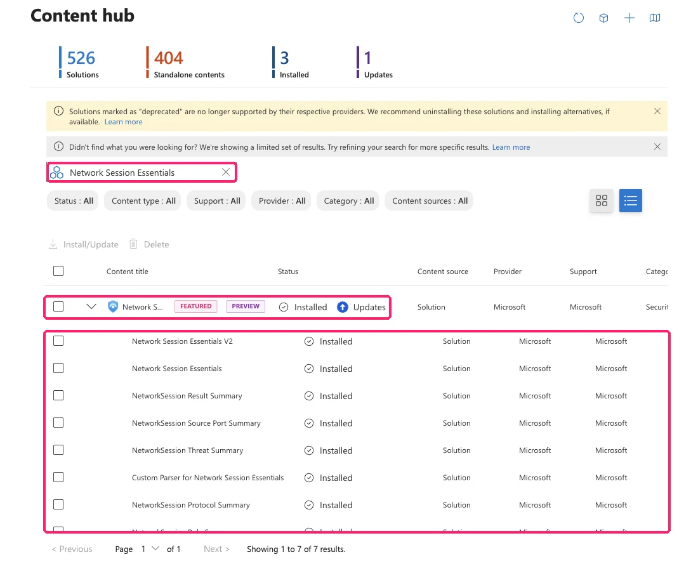</button><figcaption>Content hub: Network Session Essentials installed.<span class="credit">Example Azure tenant</span></figcaption></figure><p class="done"><span class="tick" aria-hidden="true"></span><b>Done when</b> Each solution shows Installed.</p></div></li><li class="step" id="asim-s2"><div class="stephead"><span class="num">2</span><div class="sh"><h4>Turn on ASIM in the deployment</h4><p class="who">Your Azure administrator</p></div><label class="mark"><input type="checkbox" data-step="asim-s2"> Done</label></div><p class="where" aria-label="Where"><span>Azure portal</span><span class="sep" aria-hidden="true">›</span><span>Deploy to Azure (Foundation step 1)</span><span class="sep" aria-hidden="true">›</span><span>ASIM and Vendor tables</span></p><div class="sbody"><p>Set the ASIM tab as below, and add the three ASIM values under Vendor tables. Everything else stays as in your first deployment, with <b>Use existing</b> on Basics and Data collection.</p><div class="tbl"><table class="kv"><thead><tr><th>Form field</th><th>Value</th></tr></thead><tbody><tr><th scope=row>Write mapped events into Microsoft's ASIM tables</th><td>On</td></tr><tr><th scope=row>ASIM schemas</th><td>All eight, or the schemas you want</td></tr><tr><th scope=row>One copy</th><td>On, to store each ASIM event once, in its ASIM table</td></tr><tr><th scope=row>Vendor tables</th><td><code>asim-alert</code>, <code>asim-dhcp</code>, <code>asim-user-management</code></td></tr><tr><th scope=row>Then</th><td><b>Next</b> through every tab, <b>Review + create</b>, <b>Create</b></td></tr></tbody></table></div><div class="figs"><figure class="shot"><button class="zoom" type="button" data-src="shots/form-asim-one.webp" aria-label="Enlarge: ASIM with two schemas chosen and One copy on."></button><figcaption>ASIM with two schemas chosen and One copy on.<span class="credit">Example Azure tenant</span></figcaption></figure><figure class="shot"><button class="zoom" type="button" data-src="shots/form-asim-new.webp" aria-label="Enlarge: ASIM on a new workspace: the form explains the second run.">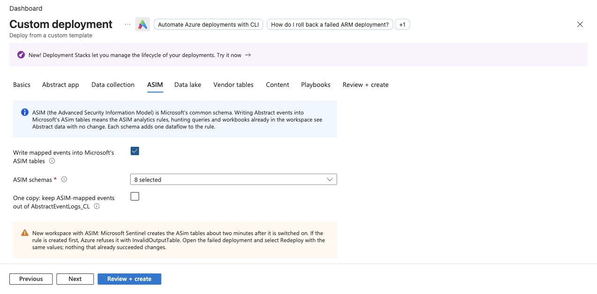</button><figcaption>ASIM on a new workspace: the form explains the second run.<span class="credit">Example Azure tenant</span></figcaption></figure></div><p class="done"><span class="tick" aria-hidden="true"></span><b>Done when</b> The deployment succeeds and the ASIM tables you chose are listed under the workspace's Tables. On a new workspace, if it stops with <code>InvalidOutputTable</code>, select <b>Redeploy</b>.</p></div></li><li class="step" id="asim-s3"><div class="stephead"><span class="num">3</span><div class="sh"><h4>Nothing changes in Abstract</h4><p class="who">Abstract implementation engineer</p></div><label class="mark"><input type="checkbox" data-step="asim-s3"> Done</label></div><div class="sbody"><p>Every source already routed to <b>Microsoft Sentinel</b> now also reaches the ASIM table that matches each event. New sources need only their route.</p><figure class="shot"><button class="zoom" type="button" data-src="shots/ms-dcr-json.webp" aria-label="Enlarge: The rule&#x27;s JSON View: one input stream, several dataflows to Microsoft&#x27;s tables.">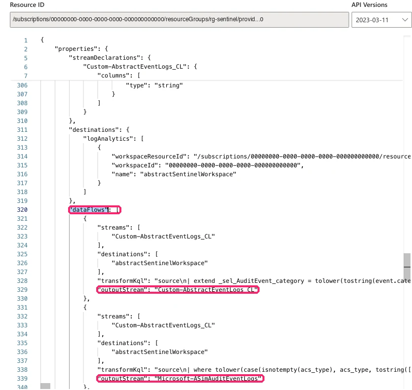</button><figcaption>The rule&#x27;s JSON View: one input stream, several dataflows to Microsoft&#x27;s tables.<span class="credit">Example Azure tenant</span></figcaption></figure><p class="done"><span class="tick" aria-hidden="true"></span><b>Done when</b> Rows appear in the ASIM tables within 20 minutes of the deployment.</p></div></li><li class="step" id="asim-s4"><div class="stephead"><span class="num">4</span><div class="sh"><h4>Check it</h4><p class="who">Your Sentinel administrator</p></div><label class="mark"><input type="checkbox" data-step="asim-s4"> Done</label></div><p class="where" aria-label="Where"><span>Defender portal</span><span class="sep" aria-hidden="true">›</span><span>Microsoft Sentinel</span><span class="sep" aria-hidden="true">›</span><span>Logs (KQL mode)</span></p><div class="sbody"><p>Abstract's rows carry their Abstract event ID in <code>AdditionalFields.AbstractEventId</code>. In Abstract's tests Microsoft's own parsers returned them: <code>_Im_NetworkSession</code>, <code>_Im_Authentication</code>, <code>_Im_UserManagement</code> and <code>_Im_DhcpEvent</code>.</p><figure class="shot"><button class="zoom" type="button" data-src="shots/ms-logs-im.webp" aria-label="Enlarge: Logs: Microsoft&#x27;s _Im_NetworkSession parser returning rows from the ASIM network table.">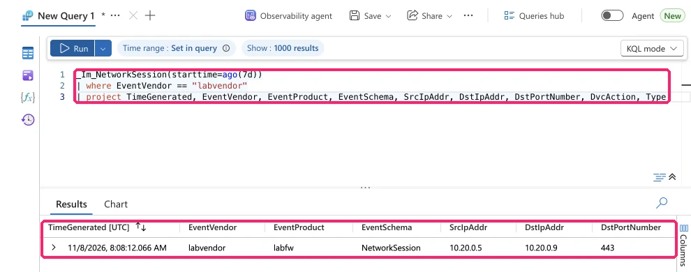</button><figcaption>Logs: Microsoft&#x27;s _Im_NetworkSession parser returning rows from the ASIM network table.<span class="credit">Example Azure tenant</span></figcaption></figure><details class="code"><summary>Check it</summary><div class="tabs" role="tablist"><button type="button" role="tab" aria-selected="true" data-i="0">KQL</button></div><div class="pane" data-i="0"><div class="codewrap"><button class="copy" type="button">Copy</button><pre><code class="kql">// What reached each ASIM table in the last hour, by vendor and product
union withsource = Table ASim*Logs
| where TimeGenerated &gt; ago(1h) and isnotempty(tostring(AdditionalFields.AbstractEventId))
| summarize Rows = count() by Table, EventVendor, EventProduct

// Microsoft&#x27;s own parsers return the same rows
_Im_NetworkSession(starttime = ago(1h))
| summarize Rows = count() by EventVendor, EventProduct

_Im_UserManagement(starttime = ago(1h))
| summarize Rows = count() by EventVendor, EventType</code></pre></div></div></details><p class="done"><span class="tick" aria-hidden="true"></span><b>Done when</b> Each ASIM table you chose holds rows for your sources.</p></div></li></ol></section><aside class="callout info"><p><b>Turn Sentinel on first.</b> The ASIM tables appear a few minutes after Sentinel is turned on for a workspace. On a brand-new workspace the first deployment can stop once with <code>InvalidOutputTable</code>; run it again with the same values.</p></aside></div></div></section><section class="view" id="view-findings" data-view="findings" hidden>
<header class="hero"><div class="wrap"><p class="eyebrow">Abstract Security · setup guide</p><h2>Abstract findings as Sentinel incidents</h2><p class="lede">Each Abstract finding lands in ASimAlertEventLogs and becomes a Sentinel incident.</p>
<p class="progress" data-progress="findings"></p></div></header>
<div class="wrap layout"><nav class="toc" aria-label="On this page"><p>On this page</p><ol><li><a href="#fi-steps">Findings as incidents</a></li></ol></nav><div class="main"><section class="part" id="fi-steps"><p class="kicker">Abstract findings</p><h3>Findings as Sentinel incidents</h3><p class=lead>Abstract's findings land in Microsoft's ASIM alert table, and the Abstract solution's <i>Abstract Security - Finding</i> rule turns each one into an alert and an incident.</p><ol class="steps"><li class="step" id="findings-s1"><div class="stephead"><span class="num">1</span><div class="sh"><h4>Add the route to the deployment</h4><p class="who">Your Azure administrator</p></div><label class="mark"><input type="checkbox" data-step="findings-s1"> Done</label></div><p class="where" aria-label="Where"><span>Azure portal</span><span class="sep" aria-hidden="true">›</span><span>Deploy to Azure (Foundation step 1)</span><span class="sep" aria-hidden="true">›</span><span>Vendor tables</span></p><div class="sbody"><p>Open the deployment again with the <b>Deploy to Azure</b> button on the <a href="#foundation">Foundation</a> tab. A rule change reaches ingestion within 20 minutes.</p><div class="tbl"><table class="kv"><thead><tr><th>Form tab</th><th>Value</th></tr></thead><tbody><tr><th scope=row>Basics</th><td>The same subscription, resource group and workspace (<b>Use existing</b>)</td></tr><tr><th scope=row>Data collection</th><td><b>Use existing</b>: the same endpoint and rule, so the rule keeps its ID and Abstract keeps sending</td></tr><tr><th scope=row>Vendor tables</th><td>Add <code>asim-alert</code> to the values you already chose</td></tr><tr><th scope=row>Store each vendor event once</th><td>On (the default)</td></tr><tr><th scope=row>Every other tab</th><td>The same choices as your first deployment. The deployment writes the rule exactly as the form describes it</td></tr><tr><th scope=row>Then</th><td><b>Next</b> through every tab, <b>Review + create</b>, <b>Create</b></td></tr></tbody></table></div><div class="figs"><figure class="shot"><button class="zoom" type="button" data-src="shots/form-vendors.webp" aria-label="Enlarge: Vendor tables: the status of each vendor&#x27;s table and Microsoft solution in this workspace, and the dataflow count."></button><figcaption>Vendor tables: the status of each vendor&#x27;s table and Microsoft solution in this workspace, and the dataflow count.<span class="credit">Example Azure tenant</span></figcaption></figure><figure class="shot"><button class="zoom" type="button" data-src="shots/form-collect-existing.webp" aria-label="Enlarge: Data collection with the existing endpoint and rule, and the table&#x27;s current plan and retention."></button><figcaption>Data collection with the existing endpoint and rule, and the table&#x27;s current plan and retention.<span class="credit">Example Azure tenant</span></figcaption></figure></div><p class="done"><span class="tick" aria-hidden="true"></span><b>Done when</b> The deployment shows <b>Your deployment is complete</b>, and the rule's JSON View lists a dataflow with output stream <code>Microsoft-ASimAlertEventLogs</code>.</p></div></li><li class="step" id="findings-s2"><div class="stephead"><span class="num">2</span><div class="sh"><h4>Findings reach Sentinel through the destination</h4><p class="who">Abstract implementation engineer</p></div><label class="mark"><input type="checkbox" data-step="findings-s2"> Done</label></div><p class="where" aria-label="Where"><span>Abstract</span><span class="sep" aria-hidden="true">›</span><span>Pipelines</span><span class="sep" aria-hidden="true">›</span><span>Overview</span></p><div class="sbody"><p>Every Abstract finding that the <b>Microsoft Sentinel</b> destination sends takes this route first, ahead of every vendor table, so a finding about an Okta or CloudTrail record still lands here.</p><p class="done"><span class="tick" aria-hidden="true"></span><b>Done when</b> The route to <b>Microsoft Sentinel</b> carries your findings.</p></div></li><li class="step" id="findings-s3"><div class="stephead"><span class="num">3</span><div class="sh"><h4>Check the findings table</h4><p class="who">Your Sentinel administrator</p></div><label class="mark"><input type="checkbox" data-step="findings-s3"> Done</label></div><p class="where" aria-label="Where"><span>Defender portal</span><span class="sep" aria-hidden="true">›</span><span>Microsoft Sentinel</span><span class="sep" aria-hidden="true">›</span><span>Logs (KQL mode)</span></p><div class="sbody"><p>Each finding is one row, with Abstract as the vendor, its severity and the rule that raised it.</p><details class="code"><summary>Check it</summary><div class="tabs" role="tablist"><button type="button" role="tab" aria-selected="true" data-i="0">KQL</button></div><div class="pane" data-i="0"><div class="codewrap"><button class="copy" type="button">Copy</button><pre><code class="kql">ASimAlertEventLogs
| where TimeGenerated &gt; ago(1d) and EventVendor == &quot;Abstract Security&quot;
| summarize Findings = count() by EventSeverity, AlertName
| order by Findings desc</code></pre></div></div></details><p class="done"><span class="tick" aria-hidden="true"></span><b>Done when</b> Your findings appear by severity.</p></div></li><li class="step" id="findings-s4"><div class="stephead"><span class="num">4</span><div class="sh"><h4>Turn on the finding rule</h4><p class="who">Your Azure administrator</p></div><label class="mark"><input type="checkbox" data-step="findings-s4"> Done</label></div><p class="where" aria-label="Where"><span>Azure portal</span><span class="sep" aria-hidden="true">›</span><span>Deploy to Azure (Foundation step 1)</span><span class="sep" aria-hidden="true">›</span><span>Content</span><span class="sep" aria-hidden="true">›</span><span>Turn these rules on</span></p><div class="sbody"><p>Choose <b>Abstract finding</b> in the deployment you run for the route above. The rule runs hourly and raises one alert per finding. With <b>One copy</b> on, findings are only in this table, so this rule is how they become incidents. Use it, or the <i>High or Critical event</i> rule, for findings, not both.</p><div class="tbl"><table class="kv"><thead><tr><th>Field</th><th>Value</th></tr></thead><tbody><tr><th scope=row>Turn these rules on</th><td><b>Abstract finding</b></td></tr><tr><th scope=row>Then</th><td><b>Next</b> through every tab, <b>Review + create</b>, <b>Create</b></td></tr></tbody></table></div><figure class="shot"><button class="zoom" type="button" data-src="shots/ms-analytics.webp" aria-label="Enlarge: Analytics: the Abstract rules.">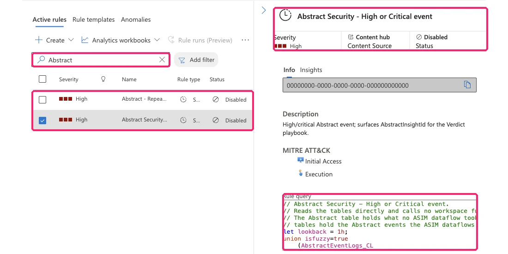</button><figcaption>Analytics: the Abstract rules.<span class="credit">Example Azure tenant</span></figcaption></figure><p class="done"><span class="tick" aria-hidden="true"></span><b>Done when</b> Microsoft Sentinel › Analytics shows <i>Abstract Security - Finding</i> Enabled.</p></div></li><li class="step" id="findings-s5"><div class="stephead"><span class="num">5</span><div class="sh"><h4>Check the incidents</h4><p class="who">Your Sentinel administrator</p></div><label class="mark"><input type="checkbox" data-step="findings-s5"> Done</label></div><p class="where" aria-label="Where"><span>Defender portal</span><span class="sep" aria-hidden="true">›</span><span>Investigation &amp; response</span><span class="sep" aria-hidden="true">›</span><span>Incidents</span></p><div class="sbody"><p>Incidents are titled <i>Abstract finding:</i> followed by the Abstract rule's name. In Abstract's tests the rule turned the test findings into seven incidents, such as <i>Abstract finding: AWS CloudTrail StopLogging</i>.</p><details class="code"><summary>Check it</summary><div class="tabs" role="tablist"><button type="button" role="tab" aria-selected="true" data-i="0">KQL</button></div><div class="pane" data-i="0"><div class="codewrap"><button class="copy" type="button">Copy</button><pre><code class="kql">SecurityIncident
| where TimeGenerated &gt; ago(1d) and Title startswith &quot;Abstract finding:&quot;
| summarize arg_max(TimeGenerated, Severity, Status) by IncidentNumber, Title</code></pre></div></div></details><p class="done"><span class="tick" aria-hidden="true"></span><b>Done when</b> Incidents titled <i>Abstract finding:</i> appear within an hour of the next finding.</p></div></li></ol></section></div></div></section><section class="view" id="view-lake" data-view="lake" hidden>
<header class="hero"><div class="wrap"><p class="eyebrow">Abstract Security · setup guide</p><h2>Data lake</h2><p class="lede">Send bulk categories to a lake table that stays searchable.</p>
<p class="progress" data-progress="lake"></p></div></header>
<div class="wrap layout"><nav class="toc" aria-label="On this page"><p>On this page</p><ol><li><a href="#l-steps">Lake table</a></li></ol></nav><div class="main"><section class="part" id="l-steps"><p class="kicker">Data lake</p><h3>High-volume events nothing reads, at data lake prices</h3><p class=lead>Analytics rules, ASIM parsers and the Abstract content do not run on the lake table. Use it for categories no rule, workbook or UEBA reads, such as raw flow records.</p><ol class="steps"><li class="step" id="lake-s1"><div class="stephead"><span class="num">1</span><div class="sh"><h4>Turn on the lake in the deployment</h4><p class="who">Your Azure administrator</p></div><label class="mark"><input type="checkbox" data-step="lake-s1"> Done</label></div><p class="where" aria-label="Where"><span>Azure portal</span><span class="sep" aria-hidden="true">›</span><span>Deploy to Azure (Foundation step 1)</span><span class="sep" aria-hidden="true">›</span><span>Data lake</span></p><div class="sbody"><p>Everything else stays as in your first deployment, with <b>Use existing</b> on Basics and Data collection.</p><div class="tbl"><table class="kv"><thead><tr><th>Form field</th><th>Value</th></tr></thead><tbody><tr><th scope=row>Send chosen categories to a data-lake table</th><td>On</td></tr><tr><th scope=row>Lake table name</th><td><code>AbstractLake_CL</code></td></tr><tr><th scope=row>Event categories for the lake</th><td><code>network</code>, or the categories no rule of yours reads</td></tr><tr><th scope=row>Total retention of the lake table</th><td>365 days, or your policy</td></tr><tr><th scope=row>Then</th><td><b>Next</b> through every tab, <b>Review + create</b>, <b>Create</b></td></tr></tbody></table></div><figure class="shot"><button class="zoom" type="button" data-src="shots/form-lake.webp" aria-label="Enlarge: Data lake: the lake table, its categories and retention."></button><figcaption>Data lake: the lake table, its categories and retention.<span class="credit">Example Azure tenant</span></figcaption></figure><p class="done"><span class="tick" aria-hidden="true"></span><b>Done when</b> The workspace's Tables list shows <code>AbstractLake_CL</code> on the Auxiliary plan.</p></div></li><li class="step" id="lake-s2"><div class="stephead"><span class="num">2</span><div class="sh"><h4>Nothing changes in Abstract</h4><p class="who">Abstract implementation engineer</p></div><label class="mark"><input type="checkbox" data-step="lake-s2"> Done</label></div><div class="sbody"><p>Events in the lake categories now land in the lake table instead of <code>AbstractEventLogs_CL</code>. Events an ASIM or vendor table takes never go to the lake.</p><figure class="shot"><button class="zoom" type="button" data-src="shots/ms-tables-aux.webp" aria-label="Enlarge: Tables: a lake table on the Auxiliary plan.">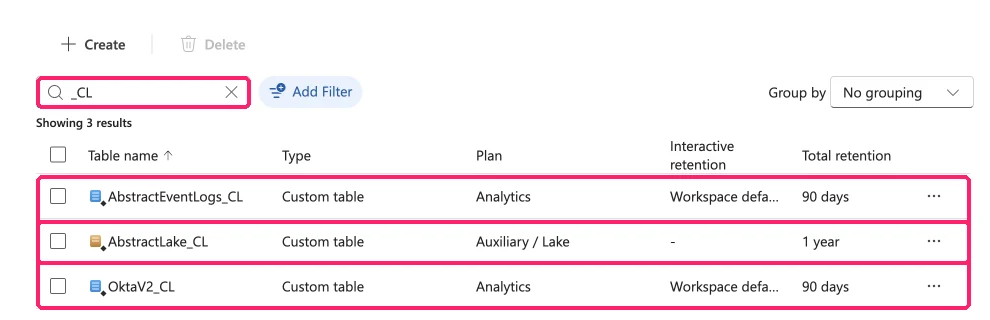</button><figcaption>Tables: a lake table on the Auxiliary plan.<span class="credit">Example Azure tenant</span></figcaption></figure><p class="done"><span class="tick" aria-hidden="true"></span><b>Done when</b> Rows reach the lake table within 20 minutes.</p></div></li><li class="step" id="lake-s3"><div class="stephead"><span class="num">3</span><div class="sh"><h4>Check it with the search API</h4><p class="who">Your Sentinel administrator</p></div><label class="mark"><input type="checkbox" data-step="lake-s3"> Done</label></div><p class="where" aria-label="Where"><span>Azure Cloud Shell or any shell with the Azure CLI</span></p><div class="sbody"><p>Auxiliary tables answer through the workspace's search API and KQL jobs. Use the workspace ID from the workspace's Overview. In Abstract's tests the lake event was counted this way.</p><details class="code"><summary>Check it</summary><div class="tabs" role="tablist"><button type="button" role="tab" aria-selected="true" data-i="0">Azure CLI</button></div><div class="pane" data-i="0"><div class="codewrap"><button class="copy" type="button">Copy</button><pre><code class="bash">az rest --method post --resource https://api.loganalytics.io \
  --url &quot;https://api.loganalytics.io/v1/workspaces/&lt;workspace-id&gt;/search?timespan=P1D&quot; \
  --body &#x27;{&quot;query&quot;:&quot;AbstractLake_CL | count&quot;}&#x27;</code></pre></div></div></details><p class="done"><span class="tick" aria-hidden="true"></span><b>Done when</b> The count is above zero.</p></div></li></ol></section></div></div></section><section class="view" id="view-discovery" data-view="discovery" hidden>
<header class="hero"><div class="wrap"><p class="eyebrow">Abstract Security · setup guide</p><h2>Discovery report</h2><p class="lede">A read-only report of your workspace's tables, cost, connectors and content, to choose routes from measured data.</p>
<p class="progress" data-progress="discovery"></p></div></header>
<div class="wrap layout"><nav class="toc" aria-label="On this page"><p>On this page</p><ol><li><a href="#d-steps">Run the discovery</a></li><li><a href="#d-reads">What the report holds</a></li></ol></nav><div class="main"><section class="part" id="d-steps"><p class="kicker">Discovery report</p><h3>Measure the workspace first</h3><p class=lead>A read-only inventory of your Sentinel workspace, written as a report to a storage account you own. It never changes workspace settings, tables, rules, connectors, data collection rules or anything in Entra ID.</p><ol class="steps"><li class="step" id="discovery-s1"><div class="stephead"><span class="num">1</span><div class="sh"><h4>Open the discovery template</h4><p class="who">Your Azure administrator</p></div><label class="mark"><input type="checkbox" data-step="discovery-s1"> Done</label></div><p class="where" aria-label="Where"><span>Deploy to Azure</span><span class="sep" aria-hidden="true">›</span><span>Azure portal sign-in</span></p><div class="sbody"><p>The discovery runs from inside your subscription and only reads. Deploy it into a new, dedicated resource group so clean-up is simple. It can also run as part of the solution: tick <b>Sentinel Discovery run (optional)</b> on the form's Content tab, and the report lands in the solution's resource group.</p><p class="deployrow"><a class="deploy" href="https://portal.azure.com/#create/Microsoft.Template/uri/https%3A%2F%2Fraw.githubusercontent.com%2FIamABS3C%2Fabstract-cloud-templates%2Fmain%2Ftemplates%2Fazure%2Fazure-destination-sentinel-discovery%2Fazuredeploy.json" target="_blank" rel="noopener">Deploy to Azure</a> <span class="dlwhat">Opens the Azure portal in a new tab.</span></p><p class="dlrow"><a class="dl" href="files/abstract-sentinel-discovery.json" download="abstract-sentinel-discovery.json">Save abstract-sentinel-discovery.json</a> <span class="dlwhat">Sentinel discovery template (azuredeploy.json): read-only inventory and report · 161 KB</span></p><div class="tbl"><table class="kv"><thead><tr><th>Field</th><th>Value</th></tr></thead><tbody><tr><th scope=row>Or</th><td>Deploy a custom template › Build your own template in the editor › Load file, with the discovery file</td></tr></tbody></table></div><p class="done"><span class="tick" aria-hidden="true"></span><b>Done when</b> The portal shows the discovery template's parameters.</p></div></li><li class="step" id="discovery-s2"><div class="stephead"><span class="num">2</span><div class="sh"><h4>Fill in the parameters</h4><p class="who">Your Azure administrator</p></div><label class="mark"><input type="checkbox" data-step="discovery-s2"> Done</label></div><p class="where" aria-label="Where"><span>Custom deployment</span><span class="sep" aria-hidden="true">›</span><span>Basics</span></p><div class="sbody"><p>The person deploying needs Owner, or Contributor plus Role Based Access Control Administrator, on this resource group, on the workspace's resource group, and on its subscription for the subscription read.</p><div class="tbl"><table class="kv"><thead><tr><th>Parameter</th><th>Value</th></tr></thead><tbody><tr><th scope=row>Resource group</th><td>A new resource group for the discovery</td></tr><tr><th scope=row>Workspace Name</th><td>Your Sentinel workspace</td></tr><tr><th scope=row>Workspace Resource Group</th><td>The workspace's resource group, if it is another one</td></tr><tr><th scope=row>Workspace Subscription Id</th><td>The workspace's subscription, if it is another one</td></tr><tr><th scope=row>Send To Abstract</th><td><code>false</code>, the default</td></tr><tr><th scope=row>Everything else</th><td>Leave the default</td></tr><tr><th scope=row>Then</th><td><b>Review + create</b>, <b>Create</b></td></tr></tbody></table></div><p class="done"><span class="tick" aria-hidden="true"></span><b>Done when</b> The deployment shows <b>Your deployment is complete</b> after 5 to 15 minutes.</p></div></li><li class="step" id="discovery-s3"><div class="stephead"><span class="num">3</span><div class="sh"><h4>Open the report</h4><p class="who">Your Azure administrator</p></div><label class="mark"><input type="checkbox" data-step="discovery-s3"> Done</label></div><p class="where" aria-label="Where"><span>Storage accounts</span><span class="sep" aria-hidden="true">›</span><span>the discovery account</span><span class="sep" aria-hidden="true">›</span><span>Containers</span><span class="sep" aria-hidden="true">›</span><span>sentinel-discovery</span><span class="sep" aria-hidden="true">›</span><span>runs</span><span class="sep" aria-hidden="true">›</span><span>your workspace</span><span class="sep" aria-hidden="true">›</span><span>the run&#x27;s time</span></p><div class="sbody"><p>Select <code>report.html</code> and <b>Download</b>, then open it in a browser; it needs no network access. If the portal says you lack permission, switch <b>Authentication method</b> to <b>Microsoft Entra user account</b> at the top of the container. The deployment's output <code>reportBlobUrl</code> names the file.</p><div class="tbl"><table class="kv"><thead><tr><th>File</th><th>What it is</th></tr></thead><tbody><tr><th scope=row>report.html</th><td>The report</td></tr><tr><th scope=row>inventory.zip</th><td>Everything below in one file</td></tr><tr><th scope=row>csv/*.csv</th><td>One file per area</td></tr><tr><th scope=row>summary.json</th><td>Totals and the status of each area</td></tr><tr><th scope=row>read_errors.csv</th><td>Anything that could not be read, why, and the role that would grant it</td></tr></tbody></table></div><p class="done"><span class="tick" aria-hidden="true"></span><b>Done when</b> The report opens and shows your workspace.</p></div></li><li class="step" id="discovery-s4"><div class="stephead"><span class="num">4</span><div class="sh"><h4>Keep it in your tenant, or send a copy</h4><p class="who">Your Azure administrator</p></div><label class="mark"><input type="checkbox" data-step="discovery-s4"> Done</label></div><p class="where" aria-label="Where"><span>Custom deployment</span><span class="sep" aria-hidden="true">›</span><span>Send To Abstract</span></p><div class="sbody"><p>Off by default: with it off, nothing leaves your tenant. When you agree to send a copy, deploy again with <b>Send To Abstract</b> <code>true</code> and the SAS URL Abstract gives you. Exactly two files leave, over HTTPS: <code>inventory.zip</code> and <code>report.html</code>. They hold resource names and IDs, table volumes, computer names and IP addresses from Heartbeat, device vendor and product names, and rule and function KQL unless you leave it out. No log records, watchlist items or credentials.</p><div class="tbl"><table class="kv"><thead><tr><th>Parameter</th><th>Value</th></tr></thead><tbody><tr><th scope=row>Send To Abstract</th><td><code>true</code>, only when agreed</td></tr><tr><th scope=row>Abstract Sas Url</th><td>The HTTPS SAS URL Abstract gave you</td></tr><tr><th scope=row>Skip Rule Query Text, Skip Content Query Text</th><td><code>true</code> to leave the KQL text out</td></tr></tbody></table></div><p class="done"><span class="tick" aria-hidden="true"></span><b>Done when</b> The output <code>sentToAbstract</code> reads as you chose.</p></div></li></ol></section><section class="part" id="d-reads"><p class="kicker">What it reads</p><h3>What the report holds</h3><p class=lead>The discovery identity gets Reader, Microsoft Sentinel Reader and Log Analytics Reader on the workspace's resource group, Reader on its subscription, and write access to the report container only.</p><div class="tbl"><table><thead><tr><th>Report sheet</th><th>What it shows</th></tr></thead><tbody><tr><td>Overview</td><td>Billable volume per day, tables with data, analytics rules enabled and the areas read</td></tr><tr><td>Tables</td><td>Each table's volume and plan, and what reads it</td></tr><tr><td>Tier and benefits</td><td>The workspace's tier and the benefits Microsoft applied</td></tr><tr><td>Connectors</td><td>Data connectors and data collection rules</td></tr><tr><td>Content</td><td>Analytics rules, hunting queries, workbooks and playbooks, and the tables each reaches</td></tr><tr><td>UEBA and SOC optimization</td><td>UEBA settings and Microsoft's SOC optimization recommendations</td></tr><tr><td>CEF and Syslog</td><td>Senders and their device vendors and products</td></tr><tr><td>Data lake</td><td>Tables on the lake tier</td></tr><tr><td>Readiness</td><td>What the Abstract routes would need in this workspace</td></tr><tr><td>TCO</td><td>Measured volume at list price, with each price's source and date</td></tr><tr><td>Not read</td><td>Anything the identity could not read</td></tr></tbody></table></div></section></div></div></section><section class="view" id="view-content" data-view="content" hidden>
<header class="hero"><div class="wrap"><p class="eyebrow">Abstract Security · setup guide</p><h2>Abstract solution</h2><p class="lede">Abstract's own Sentinel content, installed by the Foundation deployment.</p>
<p class="progress" data-progress="content"></p></div></header>
<div class="wrap layout"><nav class="toc" aria-label="On this page"><p>On this page</p><ol><li><a href="#c-steps">Use the Abstract content</a></li></ol></nav><div class="main"><section class="part" id="c-steps"><p class="kicker">Abstract solution</p><h3>Workbooks, rules, hunting queries and playbooks</h3><ol class="steps"><li class="step" id="content-s1"><div class="stephead"><span class="num">1</span><div class="sh"><h4>See what Foundation installed</h4><p class="who">Your Sentinel administrator</p></div><label class="mark"><input type="checkbox" data-step="content-s1"> Done</label></div><p class="where" aria-label="Where"><span>Defender portal</span><span class="sep" aria-hidden="true">›</span><span>Microsoft Sentinel</span></p><div class="sbody"><p>The Foundation deployment installed the Abstract content as one solution, <i>Abstract Security for Microsoft Sentinel</i>. You find each item in its usual place.</p><div class="tbl"><table class="kv"><thead><tr><th>Item</th><th>What it is</th></tr></thead><tbody><tr><th scope=row>Data connector</th><td><b>Abstract Security (Security Data Pipeline)</b>: its status counts Abstract rows in the tables the routes write</td></tr><tr><th scope=row>Parser</th><td><code>ASim_AbstractEvent</code>: every Abstract event, wherever the routes stored it, with ASIM column names</td></tr><tr><th scope=row>Analytics rules</th><td><i>Abstract Security - High or Critical event</i>, <i>Abstract - Repeated auth failures followed by success</i> and <i>Abstract Security - Finding</i>, each on or off as the form's Content tab chose</td></tr><tr><th scope=row>Hunting queries</th><td>Rare or newly-seen product activity, High cumulative-risk identities, Daily value &amp; reduction summary</td></tr><tr><th scope=row>Workbooks</th><td>Pipeline Overview, Value &amp; ROI, Sentinel Discovery</td></tr><tr><th scope=row>Playbooks</th><td>Abstract-Enrich-Incident, Abstract-Verdict, Abstract-Tune-At-Source</td></tr><tr><th scope=row>Automation rules</th><td>Tag &amp; prioritize Abstract-originated incidents, on or off as the form's Content tab chose</td></tr></tbody></table></div><p class="done"><span class="tick" aria-hidden="true"></span><b>Done when</b> Analytics, Hunting, Workbooks and Data connectors each list the Abstract items.</p></div></li><li class="step" id="content-s2"><div class="stephead"><span class="num">2</span><div class="sh"><h4>Turn on the Abstract rules</h4><p class="who">Your Azure administrator</p></div><label class="mark"><input type="checkbox" data-step="content-s2"> Done</label></div><p class="where" aria-label="Where"><span>Azure portal</span><span class="sep" aria-hidden="true">›</span><span>Deploy to Azure (Foundation step 1)</span><span class="sep" aria-hidden="true">›</span><span>Content</span><span class="sep" aria-hidden="true">›</span><span>Turn these rules on</span></p><div class="sbody"><p>Choose the rules in the deployment, not in Analytics: every deployment sets each Abstract rule on or off from the form, so a rule turned on only in Analytics is off again after the next deployment. The rules read the tables directly, so they see events in the Abstract table and in the ASIM tables. For findings, see the <a href="#findings">Abstract findings</a> tab.</p><div class="tbl"><table class="kv"><thead><tr><th>Form field</th><th>Value</th></tr></thead><tbody><tr><th scope=row>Turn these rules on</th><td>The rules you want</td></tr><tr><th scope=row>Turn the automation rules on</th><td>On when you want them</td></tr><tr><th scope=row>Then</th><td><b>Next</b> through every tab, <b>Review + create</b>, <b>Create</b></td></tr></tbody></table></div><figure class="shot"><button class="zoom" type="button" data-src="shots/ms-analytics.webp" aria-label="Enlarge: Analytics: the Abstract rules."></button><figcaption>Analytics: the Abstract rules.<span class="credit">Example Azure tenant</span></figcaption></figure><p class="done"><span class="tick" aria-hidden="true"></span><b>Done when</b> Microsoft Sentinel › Analytics shows the rules you chose Enabled.</p></div></li><li class="step" id="content-s3"><div class="stephead"><span class="num">3</span><div class="sh"><h4>Open the workbooks</h4><p class="who">Your Sentinel administrator</p></div><label class="mark"><input type="checkbox" data-step="content-s3"> Done</label></div><p class="where" aria-label="Where"><span>Defender portal</span><span class="sep" aria-hidden="true">›</span><span>Microsoft Sentinel</span><span class="sep" aria-hidden="true">›</span><span>Threat management</span><span class="sep" aria-hidden="true">›</span><span>Workbooks</span><span class="sep" aria-hidden="true">›</span><span>My workbooks</span></p><div class="sbody"><div class="figs"><figure class="shot"><button class="zoom" type="button" data-src="shots/wb-value-roi.webp" aria-label="Enlarge: The Value &amp; ROI workbook, with the Abstract header.">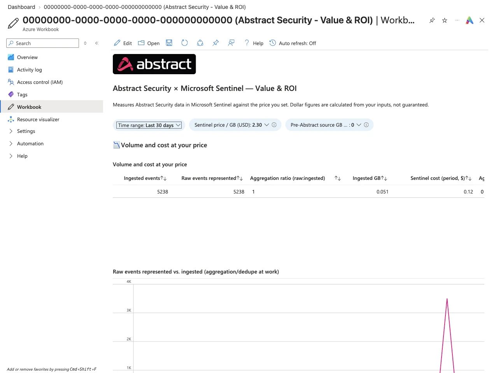</button><figcaption>The Value &amp; ROI workbook, with the Abstract header.<span class="credit">Example Azure tenant</span></figcaption></figure><figure class="shot"><button class="zoom" type="button" data-src="shots/ms-workbook.webp" aria-label="Enlarge: An Abstract workbook with data.">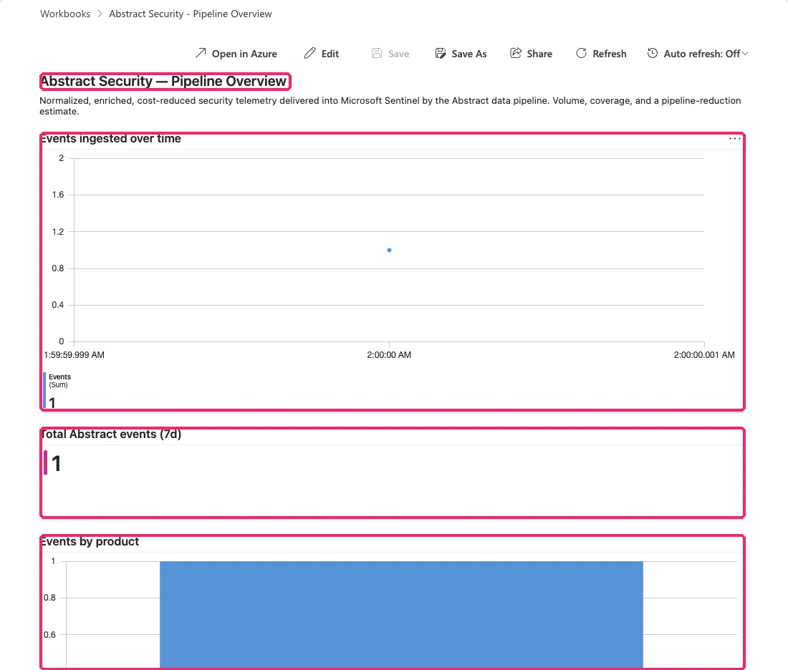</button><figcaption>An Abstract workbook with data.<span class="credit">Example Azure tenant</span></figcaption></figure></div><p class="done"><span class="tick" aria-hidden="true"></span><b>Done when</b> Data connectors lists <b>Abstract Security</b> as Connected, and the Sentinel Discovery workbook lists your tables.</p></div></li><li class="step" id="content-s4"><div class="stephead"><span class="num">4</span><div class="sh"><h4>Give the playbooks their access</h4><p class="who">Your Azure administrator</p></div><label class="mark"><input type="checkbox" data-step="content-s4"> Done</label></div><p class="where" aria-label="Where"><span>Key vaults</span><span class="sep" aria-hidden="true">›</span><span>the vault</span><span class="sep" aria-hidden="true">›</span><span>Secrets</span><span class="sep" aria-hidden="true">›</span><span>the secret</span><span class="sep" aria-hidden="true">›</span><span>Access control (IAM); the workspace</span><span class="sep" aria-hidden="true">›</span><span>Access control (IAM)</span></p><div class="sbody"><p>Each playbook's managed identity reads the Abstract API key at run time and updates incidents. The deployment creates no role assignments for the playbooks.</p><div class="tbl"><table class="kv"><thead><tr><th>Role</th><th>Where</th></tr></thead><tbody><tr><th scope=row>Key Vault Secrets User</th><td>On the API-key secret, for each playbook's managed identity</td></tr><tr><th scope=row>Microsoft Sentinel Responder</th><td>On the workspace, for each playbook's managed identity</td></tr></tbody></table></div><p class="done"><span class="tick" aria-hidden="true"></span><b>Done when</b> Both roles list the three playbooks.</p></div></li><li class="step" id="content-s5"><div class="stephead"><span class="num">5</span><div class="sh"><h4>Allow Sentinel to run the playbooks</h4><p class="who">Your Azure administrator</p></div><label class="mark"><input type="checkbox" data-step="content-s5"> Done</label></div><p class="where" aria-label="Where"><span>Resource groups</span><span class="sep" aria-hidden="true">›</span><span>the workspace&#x27;s resource group</span><span class="sep" aria-hidden="true">›</span><span>Access control (IAM)</span><span class="sep" aria-hidden="true">›</span><span>Add role assignment</span></p><div class="sbody"><p>Needed only for the automation rules that run the Verdict and Tune-at-source playbooks. Grant it about ten minutes before the next step.</p><div class="tbl"><table class="kv"><thead><tr><th>Field</th><th>Value</th></tr></thead><tbody><tr><th scope=row>Role</th><td>Microsoft Sentinel Automation Contributor</td></tr><tr><th scope=row>Members</th><td>Azure Security Insights (<code>98785600-1bb7-4fb9-b9fa-19afe2c8a360</code>, the same in every tenant)</td></tr><tr><th scope=row>Then</th><td><b>Review + assign</b></td></tr></tbody></table></div><p class="done"><span class="tick" aria-hidden="true"></span><b>Done when</b> Role assignments lists Azure Security Insights with that role.</p></div></li><li class="step" id="content-s6"><div class="stephead"><span class="num">6</span><div class="sh"><h4>Add the automation rules to the deployment</h4><p class="who">Your Azure administrator</p></div><label class="mark"><input type="checkbox" data-step="content-s6"> Done</label></div><p class="where" aria-label="Where"><span>Azure portal</span><span class="sep" aria-hidden="true">›</span><span>Deploy to Azure (Foundation step 1)</span><span class="sep" aria-hidden="true">›</span><span>Playbooks</span></p><div class="sbody"><p>Everything else stays as in your first deployment. The form checks the permission from the previous step before you create.</p><div class="tbl"><table class="kv"><thead><tr><th>Form field</th><th>Value</th></tr></thead><tbody><tr><th scope=row>Automation rules that run Verdict and Tune at source</th><td>On</td></tr><tr><th scope=row>Abstract vendor account ID</th><td>Your Abstract tenant ID</td></tr><tr><th scope=row>Secret holding the Abstract API key</th><td>Your Key Vault secret</td></tr><tr><th scope=row>Then</th><td><b>Next</b> through every tab, <b>Review + create</b>, <b>Create</b></td></tr></tbody></table></div><figure class="shot"><button class="zoom" type="button" data-src="shots/form-playbooks-role.webp" aria-label="Enlarge: Playbooks: the form checks the permission the automation rules need.">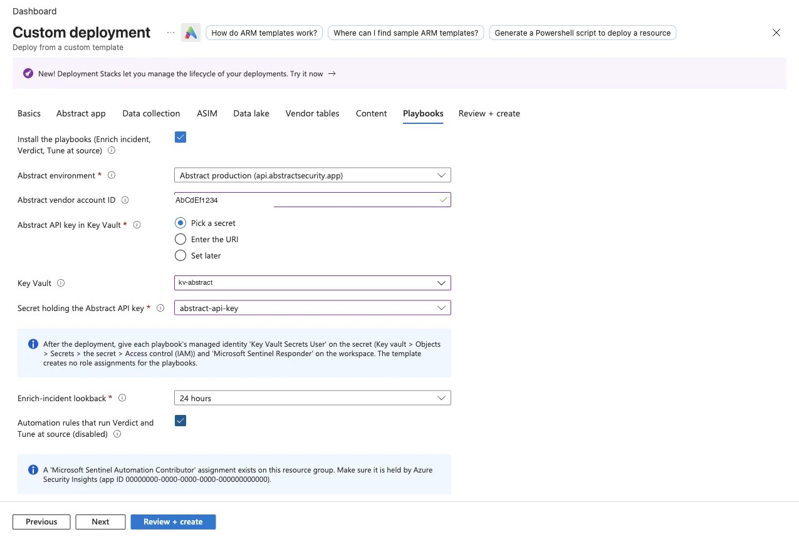</button><figcaption>Playbooks: the form checks the permission the automation rules need.<span class="credit">Example Azure tenant</span></figcaption></figure><p class="done"><span class="tick" aria-hidden="true"></span><b>Done when</b> Automation lists <i>Run ASTRO Verdict</i> and <i>Tune at source</i>, on when <b>Turn the automation rules on</b> is ticked on the Content tab.</p></div></li></ol></section></div></div></section><section class="view" id="view-verify" data-view="verify" hidden>
<header class="hero"><div class="wrap"><p class="eyebrow">Abstract Security · setup guide</p><h2>Verify</h2><p class="lede">How to prove each route delivers every event.</p>
<p class="progress" data-progress="verify"></p></div></header>
<div class="wrap layout"><nav class="toc" aria-label="On this page"><p>On this page</p><ol><li><a href="#v-check">Acceptance check</a></li><li><a href="#v-parser">Every Abstract event</a></li><li><a href="#v-cutover">Moving a source</a></li></ol></nav><div class="main"><section class="part" id="v-check"><p class="kicker">Verify</p><h3>The acceptance check</h3><p class=lead>Run this in <b>Logs</b>. If Logs opens in chat mode, switch it to KQL mode first. Add up the rows across the tables, add the lake count (<a href="#lake">Data lake</a> tab), and compare with the events Abstract sent to the destination in the same hour. Each event is counted once: with <b>One copy</b> and <b>Store each vendor event once</b> on, every event sits in exactly one table. <code>AWSCloudTrail</code>, <code>OktaV2_CL</code> and <code>CrowdStrikeHostsV2_CL</code> also count rows from Microsoft's own connector for that vendor, if it is still on. The <code>isnotempty(acs_type)</code> filter leaves out the validation record.</p><details class="code" open><summary>Acceptance queries</summary><div class="tabs" role="tablist"><button type="button" role="tab" aria-selected="true" data-i="0">KQL</button></div><div class="pane" data-i="0"><div class="codewrap"><button class="copy" type="button">Copy</button><pre><code class="kql">// Abstract rows that arrived in the last hour, in every table the routes write
let since = ago(1h);
union isfuzzy=true
 (AbstractEventLogs_CL | where ingestion_time() &gt; since and isnotempty(acs_type) | summarize Rows = count() by Table = &quot;AbstractEventLogs_CL&quot;),
 (union withsource = Table ASim*Logs | where ingestion_time() &gt; since and isnotempty(tostring(AdditionalFields.AbstractEventId)) | summarize Rows = count() by Table),
 (CommonSecurityLog | where ingestion_time() &gt; since and CollectorHostName == &quot;Abstract&quot; | summarize Rows = count() by Table = &quot;CommonSecurityLog&quot;),
 (Syslog | where ingestion_time() &gt; since and CollectorHostName == &quot;Abstract&quot; | summarize Rows = count() by Table = &quot;Syslog&quot;),
 (AWSCloudTrail | where ingestion_time() &gt; since | summarize Rows = count() by Table = &quot;AWSCloudTrail&quot;),
 (OktaV2_CL | where ingestion_time() &gt; since | summarize Rows = count() by Table = &quot;OktaV2_CL&quot;),
 (CrowdStrikeHostsV2_CL | where ingestion_time() &gt; since | summarize Rows = count() by Table = &quot;CrowdStrikeHostsV2_CL&quot;)
| order by Table asc

// Anything Azure refused or dropped, last 4 hours (must be empty)
DCRLogErrors
| where TimeGenerated &gt; ago(4h)
| summarize Rows = count() by OperationName, Message</code></pre></div></div></details><figure class="shot"><button class="zoom" type="button" data-src="shots/ms-logs-abstract.webp" aria-label="Enlarge: Logs: rows in AbstractEventLogs_CL.">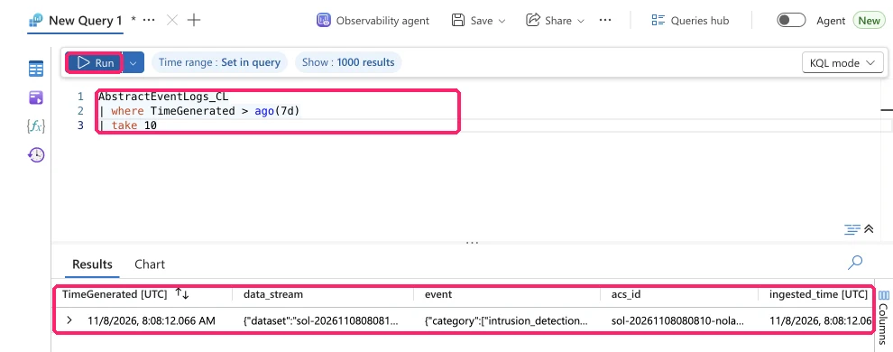</button><figcaption>Logs: rows in AbstractEventLogs_CL.<span class="credit">Example Azure tenant</span></figcaption></figure><figure class="shot"><button class="zoom" type="button" data-src="shots/ms-logs-errors.webp" aria-label="Enlarge: Logs: DCRLogErrors empty, so nothing was refused.">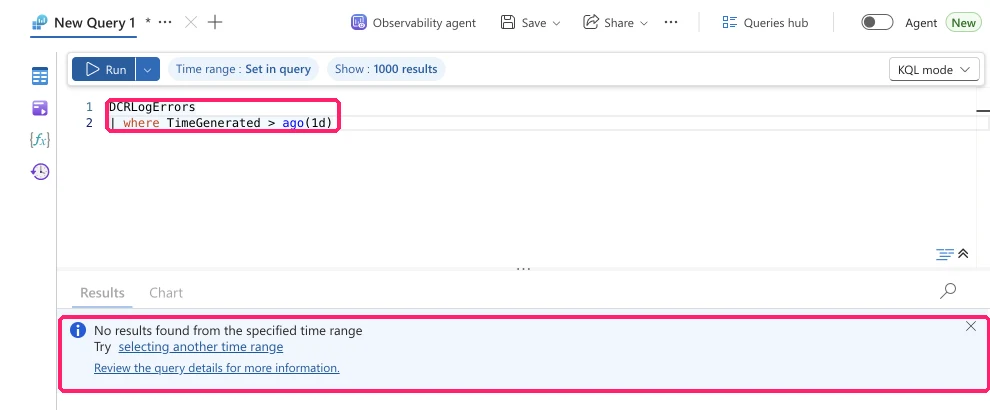</button><figcaption>Logs: DCRLogErrors empty, so nothing was refused.<span class="credit">Example Azure tenant</span></figcaption></figure></section><section class="part" id="v-parser"><p class="kicker">One view</p><h3>Every Abstract event, wherever it landed</h3><p class=lead>The Abstract solution's parser reads every route's table and names the table each event came from.</p><details class="code"><summary>Check it</summary><div class="tabs" role="tablist"><button type="button" role="tab" aria-selected="true" data-i="0">KQL</button></div><div class="pane" data-i="0"><div class="codewrap"><button class="copy" type="button">Copy</button><pre><code class="kql">ASim_AbstractEvent
| where TimeGenerated &gt; ago(1h)
| summarize Rows = count() by AbstractSourceTable, EventVendor, EventProduct</code></pre></div></div></details></section><section class="part" id="v-cutover"><p class="kicker">Moving a source</p><h3>Turning off Microsoft's own connector</h3><p class=lead>If a Microsoft connector already collects a source you route through Abstract, run both for a day, compare the counts, then turn the Microsoft connector off. Until then the same events are stored twice.</p></section></div></div></section><section class="view" id="view-fix" data-view="fix" hidden>
<header class="hero"><div class="wrap"><p class="eyebrow">Abstract Security · setup guide</p><h2>Troubleshoot</h2><p class="lede">The common causes, in the order you meet them.</p>
<p class="progress" data-progress="fix"></p></div></header>
<div class="wrap layout"><nav class="toc" aria-label="On this page"><p>On this page</p><ol><li><a href="#x-table">Symptoms</a></li></ol></nav><div class="main"><section class="part" id="x-table"><p class="kicker">Troubleshoot</p><h3>What you see, why, and what to do</h3><div class="tbl"><table><thead><tr><th>What you see</th><th>Why</th><th>What to do</th></tr></thead><tbody><tr><td>The form stays greyed out with Create disabled</td><td>Review + create was opened before every tab was visited</td><td>Close the form, open it again and use Next on every tab</td></tr><tr><td>The form shows a plain parameter list</td><td>No was chosen at the trust prompt</td><td>Open it again and select Yes, I trust the authors</td></tr><tr><td>Register stays disabled in the form</td><td>The account type is not Single tenant only</td><td>Set Supported account types to Single tenant only</td></tr><tr><td>The deployment stops with InvalidOutputTable on a new workspace</td><td>Sentinel creates the ASIM tables a few minutes after it is turned on</td><td>Open the deployment and select Redeploy with the same values</td></tr><tr><td>The deployment stops with "The Data Collection Rule would have N dataflows; Azure allows 20"</td><td>Too many schemas and routes for one rule</td><td>Choose fewer ASIM schemas or vendor values</td></tr><tr><td>The deployment stops with "Missing required permissions for Microsoft Sentinel on the playbook resource"</td><td>Azure Security Insights lacks Microsoft Sentinel Automation Contributor</td><td>Grant it, wait 10 minutes, deploy again (Abstract solution tab)</td></tr><tr><td>Abstract validation fails with 403</td><td>The app has no role on the rule, or it is still applying</td><td>Check the rule's Role assignments; wait 10 minutes after assigning</td></tr><tr><td>Abstract validation fails with 404</td><td>Wrong endpoint, rule ID or stream name</td><td>Copy the three values again from the deployment's Outputs</td></tr><tr><td>Abstract validation fails with 401</td><td>Wrong client ID, tenant ID or secret value, or an expired secret</td><td>Create a new secret and paste its Value</td></tr><tr><td>A vendor table stays empty while AbstractEventLogs_CL fills</td><td>The source does not keep its original record</td><td>Turn on Store Raw Events for that source</td></tr><tr><td>Rows reach the Abstract table but not an ASIM table</td><td>ASIM is off, or the schema is not chosen</td><td>Deploy again with ASIM on and the schema chosen</td></tr><tr><td>Rows arrive twice</td><td>Microsoft's connector for that source is still on, or a store-once switch is off</td><td>Compare for a day, then turn the Microsoft connector off; keep One copy and Store each vendor event once on</td></tr><tr><td>The lake table shows 0 rows in Logs</td><td>Auxiliary tables answer through the search API</td><td>Use the check on the Data lake tab</td></tr><tr><td>A change seems not to apply</td><td>Rule changes take up to 20 minutes to reach ingestion</td><td>Wait 20 minutes, then check again</td></tr><tr><td>DCRLogErrors has rows</td><td>Azure refused or dropped records</td><td>Read the error text; the column it names is the one to check</td></tr></tbody></table></div></section></div></div></section></main>
<footer class="foot"><div class="wrap"><p>Abstract Security. Microsoft screens come from an example Azure tenant, as each caption says; names and IDs in them are examples.</p></div></footer>
<dialog id="lightbox"><form method="dialog"><button class="close" aria-label="Close">Close</button></form></dialog>
<script>(function () {
  var VIEWS = ["start", "foundation", "okta", "firewalls", "syslog", "cloudtrail", "crowdstrike", "asim", "findings", "lake", "discovery", "content", "verify", "fix"];
  var KEY = "abstract-sentinel-guide-done";
  function load() { try { return JSON.parse(localStorage.getItem(KEY) || "{}"); } catch (e) { return {}; } }
  function save(s) { try { localStorage.setItem(KEY, JSON.stringify(s)); } catch (e) {} }
  var state = load();

  function viewFor(hash) {
    var id = (hash || "").replace("#", "");
    if (VIEWS.indexOf(id) >= 0) return { view: id, anchor: null };
    var el = id && document.getElementById(id);
    if (el) { var v = el.closest("[data-view]"); if (v) return { view: v.getAttribute("data-view"), anchor: el }; }
    return { view: "start", anchor: null };
  }
  function show() {
    var t = viewFor(location.hash);
    document.querySelectorAll("[data-view]").forEach(function (s) { s.hidden = s.getAttribute("data-view") !== t.view; });
    document.querySelectorAll("[data-tab]").forEach(function (a) {
      if (a.getAttribute("data-tab") === t.view) a.setAttribute("aria-current", "page"); else a.removeAttribute("aria-current");
    });
    if (t.anchor) t.anchor.scrollIntoView(); else window.scrollTo(0, 0);
    progress();
  }
  function progress() {
    document.querySelectorAll("[data-progress]").forEach(function (p) {
      var v = document.querySelector('[data-view="' + p.getAttribute("data-progress") + '"]');
      var boxes = v.querySelectorAll("input[data-step]");
      if (!boxes.length) { p.textContent = ""; return; }
      var n = 0; boxes.forEach(function (b) { if (b.checked) n++; });
      p.textContent = n + " of " + boxes.length + " steps marked done in this browser";
    });
  }
  document.querySelectorAll("input[data-step]").forEach(function (b) {
    var id = b.getAttribute("data-step");
    b.checked = !!state[id];
    var li = b.closest(".step"); if (li) li.classList.toggle("isdone", b.checked);
    b.addEventListener("change", function () {
      state[id] = b.checked; save(state);
      if (li) li.classList.toggle("isdone", b.checked);
      progress();
    });
  });
  document.querySelectorAll(".tabs").forEach(function (t) {
    t.addEventListener("click", function (ev) {
      var btn = ev.target.closest("button[data-i]"); if (!btn) return;
      var box = t.parentElement;
      t.querySelectorAll("button").forEach(function (b) { b.setAttribute("aria-selected", b === btn ? "true" : "false"); });
      box.querySelectorAll(".pane").forEach(function (p) { p.hidden = p.getAttribute("data-i") !== btn.getAttribute("data-i"); });
    });
  });
  document.addEventListener("click", function (ev) {
    var c = ev.target.closest(".copy");
    if (c) {
      var text = c.parentElement.querySelector("code").textContent;
      var done = function () { c.textContent = "Copied"; c.classList.add("ok"); setTimeout(function () { c.textContent = "Copy"; c.classList.remove("ok"); }, 1600); };
      try {
        navigator.clipboard.writeText(text).then(done, function () { selectText(c); });
      } catch (e) { selectText(c); }
      return;
    }
    var z = ev.target.closest(".zoom");
    if (z) {
      var d = document.getElementById("lightbox");
      d.querySelector("img").src = z.getAttribute("data-src");
      d.querySelector("img").alt = z.getAttribute("aria-label");
      if (d.showModal) d.showModal();
    }
  });
  function selectText(c) {
    var r = document.createRange(); r.selectNodeContents(c.parentElement.querySelector("code"));
    var s = window.getSelection(); s.removeAllRanges(); s.addRange(r); c.textContent = "Selected: press Copy";
  }
  document.getElementById("lightbox").addEventListener("click", function (ev) { if (ev.target === this) this.close(); });
  var links = document.querySelectorAll(".toc a");
  if ("IntersectionObserver" in window) {
    var io = new IntersectionObserver(function (es) {
      es.forEach(function (en) {
        if (en.isIntersecting) links.forEach(function (a) { a.classList.toggle("on", a.getAttribute("href") === "#" + en.target.id); });
      });
    }, { rootMargin: "-130px 0px -70% 0px" });
    document.querySelectorAll(".part").forEach(function (p) { io.observe(p); });
  }
  window.addEventListener("hashchange", show);
  show();
})();
/* Downloads: the viewer's frame blocks plain download links, so files go through the downloads capability. */
(function () {
  var btns = document.querySelectorAll("button.dl[data-file]");
  if (!btns.length) return;
  var ready = (window.claude && window.claude.use) ? window.claude.use("downloads") : Promise.resolve(null);
  ready.then(function (dl) {
    btns.forEach(function (b) {
      var note = b.parentElement.querySelector(".dlnote");
      if (!dl) { b.disabled = true; if (note) note.textContent = "Downloads are not available in this view. Open the guide on claude.ai to save the file."; return; }
      b.addEventListener("click", function () {
        var name = b.getAttribute("data-file");
        fetch("files/" + name).then(function (r) { if (!r.ok) throw new Error(r.status); return r.blob(); })
          .then(function (blob) { return dl.save({ filename: b.getAttribute("data-save") || name, data: blob }); })
          .then(function () { if (note) note.textContent = "Saved."; },
                function (err) { if (note) note.textContent = (err && err.code === "declined") ? "Not saved." : "Could not save the file here."; });
      });
    });
  });
})();
</script>